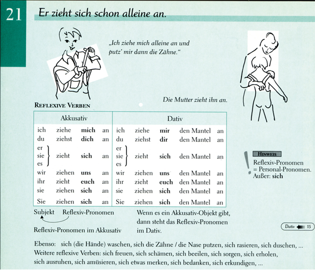
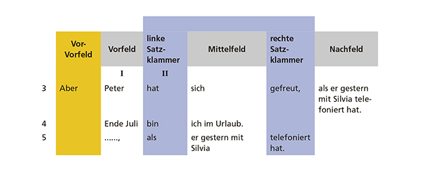

3 Deutsch als fremde Sprache (DLL3)
3.1 Sprache als Medium der Kommunikation
Die deutsche Sprache ist wie alle Sprachen ein Medium, mit dem es möglich wird, dass sich Menschen verständigen. Doch wodurch kann Sprache diese Funktion erfüllen? Mit dieser Frage befasst sich die wissenschaftliche Disziplin der Linguistik. Sie beschreibt und erklärt, wie die einzelnen Bausteine oder Elemente der Sprache geformt sind, wie sie zueinander in Beziehung stehen, wie und wodurch sie Bedeutung übermitteln und welchen kommunikativen Funktionen sie dienen.
Sehr häufig stehen in wissenschaftlichen Grammatiken die Formen und Strukturen von sprachlichen Mitteln im Vordergrund. Wir möchten einen anderen Weg gehen. Das folgende Zitat soll diesen Weg andeuten: “Denk an die Werkzeuge in einem Werkzeugkasten: es ist da ein Hammer, eine Zange, eine Säge, ein Schraubenzieher, ein Maßstab, ein Leimtopf, Leim, Nägel und Schrauben. – So verschieden die Funktionen dieser Gegenstände, so verschieden sind die Funktionen der Wörter.” (Wittgenstein 1984, Paragraph 11).
In Kapitel 1 erläutern wir,
- was es bedeutet, wenn man Sprache als Werkzeug betrachtet, und führen die grundlegenden Begriffe ein, mit denen wir in dieser Einheit über das Deutsche als fremde Sprache sprechen werden,
- welche unterschiedlichen Bedeutungen von Grammatik es gibt und welche wir in dieser Einheit verwenden,
- wie und wodurch sprachliche Kommunikation eigentlich funktioniert, mit dem Ziel zu zeigen, warum Menschen, die miteinander in einer Sprache kommunizieren, sich verstehen oder sich verstehen können,
- wie sprachliche Mittel mit einem Fokus auf ihre Funktionen und Formen im Unterricht vermittelt werden können. Die Entwicklung der Sprachbewusstheit bei den Lernerinnen und Lernern ist dabei das Schlüsselmoment.
3.1.1 Funktionen und Formen sprachlicher Mittel
Bedeutungen von Grammatik
Grammatik kann begriffen werden als das gesamte System von Formen, das einer Sprache zugrunde liegt. Dieses System bildet die Regelmäßigkeiten einer Sprache ab. (Helbig 1981; Funk/Koenig 1991). Barkowski (2010, S. 106) weist ausdrücklich darauf hin, dass dieses System aus Formen mit spezifischen Funktionen für die konkrete Äußerung besteht.
Die Dokumentation dieses Systems einer Sprache zu einem pädagogischen Zweck. So verstanden kann eine Grammatik ein umfassendes Nachschlagewerk, aber auch eine Schulgrammatik sein, die ausgewählte Formen darstellt, ein Zusatzmaterial zu einem Lehrwerk oder ein elektronisches Dokument, das im Internet zur Verfügung steht.
Grammatik ist der aktuelle Stand des sprachlichen Wissens, über das eine Lernerin / ein Lerner verfügt, also das Regelsystem im Kopf eines Lernenden. Dieses Wissen steht in enger Beziehung zur Grammatik als System von Formen und ihren Bedeutungen. Es muss diesem System aber nicht vollständig entsprechen und es entwickelt sich im Lauf des Spracherwerbs ständig weiter.
Grammatik ist ein Beschreibungsmodell für die (Teil-)Systeme oder Komponenten der Sprache (z.B. Wortschatz und Strukturen). Es gibt verschiedene Beschreibungsmodelle oder linguistische Modelle wie z.B. die Valenzgrammatik. Linguistische Modelle verfolgen unterschiedliche Zielsetzungen und folgen unterschiedlichen theoretischen Vorannahmen über Sprache. Dementsprechend können sie nicht alle für Zwecke des Fremdsprachenunterrichts herangezogen werden.
Grammatik in dieser Einheit: Wir verstehen Grammatik in dieser Einheit in einem weiten Sinn als System aller sprachlicher Mittel, ihrer Formen und den Regeln ihres Zusammenwirkens sowie ihrer kommunikativen Funktionen. Damit ist Grammatik die Basis dafür, dass Menschen ihre Mitteilungsabsichten sprachlich realisieren können.
Um eine Äußerung zusammenzubauen, bedienen wir uns sprachlicher Mittel aus vier verschiedenen Schubladen:
- feste oder – wie wir sagen – formelhafte Wendungen
- Wörter (flektierte und unflektierte)
- grammatische Regeln, Endungen usw.
- Intonationsmuster und Laute
Sie als Lehrende haben für Ihren Unterricht das Ziel, Lernende darin zu unterstützen, ihre Mitteilungsabsichten auf Deutsch realisieren zu können und Mitteilungen von anderen zu verstehen, also auf Deutsch zu kommunizieren. Dazu müssen Lernende die sprachlichen Mittel, ihre Formen und Funktionen, die das Deutsche zur Verfügung stellt, richtig verwenden können. Und Sie als Lehrkraft müssen Fragen der Lernenden nach dem Warum, Wozu und dem Wie in Bezug auf Sprache beantworten können. Wenn wir darunter Grammatik verstehen, hätten die Lernenden mit der Aussage, dass sie im Unterricht Grammatik erwarten, eigentlich doch wieder recht.
3.1.2 Wie funktioniert sprachliche Kommunikation?
Das Kommunizieren zwischen den beiden Telefonierenden ist eine soziale Handlung mithilfe des Werkzeugs Sprache. In den sprachlichen Äußerungen spielen formelhafte Wendungen, Wörter, Sätze, Laute und Intonationsmuster zusammen; die Äußerungen transportieren bestimmte Mitteilungsabsichten der Sprechenden, die auf die gehörten und verstandenen Inhalte des Gesprächs in einem bestimmten Kontext reagieren.
Kommunizieren in Kontexten
Fremdsprachenlernende haben aufgrund ihres eingeschränkten Sprachwissens Schwierigkeiten, einen Text zu verstehen. Kontextwissen ermöglicht es ihnen, Verstehenslücken zu kompensieren. Um kommunikativ erfolgreich zu sein, braucht man möglichst deutliche Hinweise auf den Kontext und die Fähigkeit, diesen wahrzunehmen und richtig zu entschlüsseln. Beispiel: Kontextwissen des Beispieltelefonats:
Kommunizieren ist sprachliches Handeln
Im nächsten Schritt sehen wir uns an, wie Silvia und Peter mit Sprache handeln, während sie miteinander telefonieren. Mit ihren Äußerungen (Wörtern, Satzteilen, Sätzen usw.) vollziehen sie Handlungen. Sprache, Handeln und der Kontext des Gesprächs stehen dabei in einem engen Verhältnis. Jede Äußerung hat folgende Eigenschaften:
- Äußerungen sind intentional, das heißt, die Sprecherin / der Sprecher will etwas Bestimmtes mitteilen (Peter möchte, dass Silvia ihn bei der Organisation des Klassentreffens unterstützt.).
- Äußerungen bewirken etwas, das heißt, sie drücken Anliegen aus (Silvia weiß nun, was Peter möchte.).
- Es müssen spezifische Bedingungen erfüllt sein, damit die Äußerungen verstanden werden können und somit Kommunikation gelingt (Peter akzeptiert nach einer Weile, dass Silvia nicht viel Zeit zum Telefonieren hat, und fasst sich kurz; Silvia hört zu und versteht, was Peter sagt.).
Bei diesen Äußerungen des Telefongesprächs (Chunks: Vorschlag zu treffen; Klärung des Zeitpunkts; Vereinbarung des Treffpunkts) handelt es sich um sogenannte Sprechakte. Diese Form der Sprachbeschreibung wurde in den 1960er-Jahren mit John Langshaw Austin (1911–1960) und John R. Searle (*1932) vorgestellt. Die Arbeiten der beiden werden unter dem Begriff Sprechakttheorie zusammengefasst. Sprechakte waren der Ausgangspunkt dafür, zu beschreiben, wie sprachliche Äußerungen in ihrem Kontext funktionieren und wirken. Die wissenschaftliche Teildisziplin ist die Pragmatik.
Ein Sprechakt ist „die kleinste selbstständige Einheit der Sprache in der Pragmatik“ (Wagner 2001, S. 87) oder nach Searle (1971) auch die Basiseinheit sprachlicher Kommunikation. Eine Äußerung ist also das, was jemand konkret sagt, z.B. Grüß dich, Silvia, und ist damit auch eine sprachliche Handlung: Peter begrüßt Silvia. Handlungen wie diese (Begrüßung, Verabschiedung, Fragen nach dem Weg usw.) nennt man Sprechakte. Sprechakte werden auch klassifiziert, sodass man verschiedene Äußerungen demselben Sprechakt zuordnen kann (z.B. Grüß dich, Silvia; Guten Tag, Frau Meier = Begrüßung) und verschiedene Typen von Sprechakten unterscheiden kann (Begrüßung, Verabschiedung).
Bei Fremdsprachenlernenden ist diese Kompetenz in der neuen Sprache nicht vorauszusetzen. Sie muss daher im Unterricht vermittelt und trainiert werden. Diese Erkenntnis fand in den 1970er-Jahren Eingang in die Fremdsprachendidaktik und war Auslöser der sogenannten kommunikativen Wende. Seitdem konzipierte man Lehr-/Lernmaterialien zunehmend kommunikationsorientiert und ging von der Mitteilungsabsicht der Sprachenlernenden (z.B. sich verabreden) aus (Graefen/Liedke 2008, S. 178). Lehrwerkautorinnen und -autoren orientieren sich seitdem an folgenden Fragen:
- Welche Mitteilungsabsichten haben die Lernenden?
- Welche sprachlichen Mittel kennen die Lernenden dafür bereits?
- Welche sprachlichen Mittel müssen vermittelt werden, damit die Lernenden ihre Mitteilungsabsichten erfüllen können?
- Welche sprachlichen Mittel sind in welchen soziokulturellen Kontexten angemessen?
Aussprache
Wie wir am Beispiel des Telefongesprächs gesehen haben, setzt sich die Sprache als Medium der Kommunikation aus vielen Einzelbausteinen zusammen. Ihre Leistung zeigt sich auf allen Ebenen der sprachlichen Äußerungen: im Wortschatz, im Satzbau, in der inneren Struktur der Wörter (Morphologie), im Kontext der Kommunikationssituation, in der Aussprache, und zwar immer in Bezug auf die Mitteilungsabsichten, die die beteiligten Personen verfolgen.
Zusammenfassung: In diesem Teilkapitel haben Sie gesehen, wie Kommunikation durch Sprache möglich wird. Konkrete sprachliche Äußerungen funktionieren wie Handlungen und Kommunikationsteilnehmende verfolgen über diese ihre Mitteilungsabsichten. An einem Telefongespräch konnten Sie nachvollziehen, dass jede einzelne Einheit einer Äußerung ihre Funktion in der Kommunikation hat und dass sie zum Gelingen der Kommunikation beiträgt.
3.1.3 Sprache vermitteln
Wenn Sie dieses Teilkapitel bearbeitet haben, wissen Sie, dass es bei der Sprachvermittlung auf ein Gleichgewicht aus inhaltsbezogener und sprachformbezogener Arbeit ankommt; können Sie die Bedeutung einschätzen, die der Sprachbewusstheit für das Lernen einer Fremdsprache zukommt.
Lesen lernt man nur durch Lesen, Sprechen durch Sprechen, und Flüssigkeit kann in einer Sprache nur erreicht werden, wenn man sie auch trainiert. (…) Auch unsere eigene praktische Erfahrung zeigt uns, dass sich mündlich-produktive Kompetenz, also das flüssige Sprechen einer fremden Sprache, nicht als Nebenprodukt der bewusst gemachten Regeln durch das Üben grammatischer Formen einstellt.
Im Folgenden möchten wir die vier Lernziele genauer betrachten.
Lernen durch die Arbeit mit Inhalten: Sprache wird zum großen Teil dadurch gelernt, dass Menschen sich für Inhalte interessieren und diese in der fremden Sprache recherchieren, über sie lesen und sie so mental verarbeiten. Dabei fokussieren sie in der Regel erst einmal nicht die sprachliche Ebene der Informationen, sondern in erster Linie die Inhalte.
Lernen durch die Verwendung von Sprache in Situationen, die für die Lernenden von Bedeutung sind: Menschen lernen Sprache, indem sie sie in für sich selbst sinnvoller Weise schriftlich und mündlich verwenden, um damit eigene Aussagen über sich selbst oder andere, über Texte oder über Sachverhalte zu treffen.
Lernen durch das Training von sprachlicher Flüssigkeit: Menschen verarbeiten Sprache nicht immer aktiv oder rufen Regeln ab, wenn sie flüssig sprechen und schreiben. Oft geschieht dies imitativ oder reproduktiv: Formelhafte Wendungen, die man gehört oder gelesen hat, ruft man in ihrer phonologisch gespeicherten Form ab und äußert sie spontan. Man spricht dabei von Chunks. Chunks entstehen, indem kleinere Einheiten miteinander verknüpft im Gedächtnis abgespeichert werden, sodass sie als eine Einheit abgerufen werden können.
Man kann als Lehrkraft Kommunikationssituationen im Unterricht simulieren und die Lernenden durch Redemittel, fest gefügte sprachliche Wendungen, Intonationsmuster usw. darin unterstützen, in diesen Situationen flüssig zu sprechen oder zu schreiben. Beim Trainieren sprachlicher Flüssigkeit soll Sprachkönnen unmittelbar erworben werden, ohne dass eine Bewusstmachung von sprachlichen Mitteln notwendigerweise stattfindet. Das nennt man Automatisierung.
- Lernen durch die Fokussierung auf Formen: Grammatikorientiertes Lernen, so bestätigt der Fremdsprachenforscher Rod Ellis (2003), führt meist zu Wissen über Sprache. Wichtigstes Ziel beim Fokus auf die Form und Funktion eines sprachlichen Mittels ist die Richtigkeit der Äußerungen.
Es ist sinnvoll, sich zeitweise mit Strukturen auf der Wort-, Satz- und Textebene zu beschäftigen, z.B. dann, wenn mit dem Gebrauch bestimmter sprachlicher Mittel auch ein inhaltliches Lernziel erreicht wird. So ist eine Systematisierung der Perfekt- und Präteritumformen und ihrer Funktionen z.B. hilfreich, wenn die Lernenden auf Deutsch über eigene Erlebnisse und Erfahrungen berichten möchten. Ziel ist dabei, die korrekte Zeitform auszuwählen.
Sprachbewusstheit entwickeln
Außerdem sollte die Sprachbewusstheit der Lernenden in den Blick genommen werden. Sprachbewusstheit ist dabei mehr als Wissen über Sprache. Sprachbewusstheit schließt die Fähigkeit ein, auch Formen und Strukturen wahrzunehmen, die neu sind, und sie in ihrer Funktion zu erkennen. Diese Fähigkeit wächst, indem Lernende Lernstrategien erwerben. Es sind Strategien, um z.B. Formen und Strukturen selbst zu analysieren, ihre Regelmäßigkeiten zu entdecken und diese selbstständig zu formulieren. Diese Strategien unterstützen Lehrwerke zum Teil sehr gut, wie Sie an vielen Beispielen in dieser Einheit später noch beobachten werden. Zum anderen sind es Strategien dafür, die Regeln im Sprachgebrauch bewusst anzuwenden und zu entscheiden, wann man sprachliche Formen auch ohne Regelkenntnis als lexikalische Einheiten lernen sollte.
Zum Abschluss: Um Deutsch als fremde Sprache zu verstehen und zu unterrichten, ist es wichtig, deren Formen und Funktionen zu kennen und erklären zu können, wie Kommunikation auf Deutsch funktioniert. Es ist hilfreich, dies schon möglichst früh im Unterricht anhand realer Gespräche oder Texte durchzuführen, da man in ihnen alle sprachlichen Mittel in ihrer Funktion vorfindet.
Anton Tschechow sagt: “Wo Fehler sind, ist auch Erfahrung.” Aber viele Lernende wünschen sich eine hohe Kompetenz auf Deutsch. Die richtige Wahl eines Ausdrucks in einer bestimmten Situation führt dazu, dass man von anderen als (sprachlich) kompetent eingestuft wird. Eine große Hilfe dabei ist es, formelhafte Wendungen zu benutzen, d.h., Wortgruppen und Sätze als Ganzes zu reproduzieren, anstatt diese immer wieder neu zu konstruieren.
Wir möchten in diesem Kapitel erreichen, dass Sie:
- ein Bewusstsein für Formelhaftigkeit in der Sprache entwickeln,
- erkennen, dass man zum Entschlüsseln von formelhaften Wendungen Situationswissen und kulturspezifisches Wissen braucht,
- mit den Merkmalen formelhafter Sprache vertraut werden,
- wissen, wie Sie Ihre Lernenden für den formelhaften Charakter der Sprache sensibilisieren und ihre Aufmerksamkeit auf formelhafte Wendungen lenken können.
3.2 Die formelhaften Wendungen
Kommunikative Kompetenz in einer Fremdsprache bedeutet, sprachliche Mittel richtig auswählen zu können. Um effizient kommunizieren zu können, müssen diese nicht nur korrekt, sondern auch angemessen und frequent, d.h. gebräuchlich sein. Kommunikationspartnerinnen und -partner achten neben den Inhalten eben auch sehr darauf, wie etwas gesagt wird, also welche sprachlichen Mittel und nonverbalen Zeichen von den Sprechenden verwendet werden. Kommunizieren in der Fremdsprache ist also kein freies Kombinieren von Wörtern, gewürzt mit ein wenig Grammatik und korrekter Phonetik, sondern immer auch die Wahl der richtigen sprachlichen Mittel.
Die richtige Wahl eines Ausdrucks in einer bestimmten Situation führt dazu, dass man von anderen als (sprachlich) kompetent eingestuft wird. Eine große Hilfe dabei ist es, formelhafte Wendungen zu benutzen, d.h., Wortgruppen und Sätze als Ganzes zu reproduzieren, anstatt diese immer wieder neu zu konstruieren.
Wir möchten in diesem Kapitel erreichen, dass Sie:
- ein Bewusstsein für Formelhaftigkeit in der Sprache entwickeln,
- erkennen, dass man zum Entschlüsseln von formelhaften Wendungen Situationswissen und kulturspezifisches Wissen braucht,
- mit den Merkmalen formelhafter Sprache vertraut werden,
- wissen, wie Sie Ihre Lernenden für den formelhaften Charakter der Sprache sensibilisieren und ihre Aufmerksamkeit auf formelhafte Wendungen lenken können.
3.2.1 Situationsbezug und kulturspezifisches Wissen
Der Kontext bestimmt die Wahl der sprachlichen Mittel und Kommunikation funktioniert nur auf der Grundlage spezifischen Situationswissens. Wie wichtig dieses Wissen ist, haben Sie gesehen, als wir das Telefongespräch in Teilkapitel 1.2 ausführlich analysiert haben. Die beiden Personen mussten sehr viel Wissen aus verschiedenen Bereichen aktivieren, damit das Gespräch erfolgreich sein konnte.
Situationswissen: Es handelt sich bei Situationswissen um Informationen, die die Kommunikationspartnerinnen und -partner aus einer Gesprächssituation gewinnen können. Dazu zählen z.B. Ort, Zeit (z.B. Zeitpunkt und Zeitdauer des Gesprächs), Kommunikationsteilnehmende (Anzahl, Alter, Geschlecht, Bekanntheit/Vertrautheit der Gesprächspartner), Medium (z.B. direkte Kommunikation, Telefonat). Situationswissen hilft also dabei, (1) die Kommunikationssituation zu erfassen und einzuordnen; (2) Erwartungen aufzubauen und Verstehen zu erleichtern; (3) sprachliche Mittel und deren Korrektheit einschätzen zu können.
Das Situationswissen unterstützt aktiv das Verstehen: Vieles kann im Vorfeld einer Äußerung vorausgesehen werden, wenn die Situation bekannt ist. Eine unvollständige Information kann in Abhängigkeit von der Kommunikationssituation rekonstruiert werden. Auch die Sprachproduktion wird durch Situationswissen erleichtert, da Sprechende einschätzen können, welche sprachlichen Mittel angemessen sind. Ihre Lernenden sollten daher die Möglichkeit erhalten, viele (Standard-)Situationen (z.B. Einkaufen, jemanden auf der Straße grüßen, Arztbesuch usw.) kennenzulernen, um sprachliche Mittel, Adressaten und Situationskomponenten sicher und schnell miteinander in Beziehung setzen und dadurch erfolgreich kommunizieren zu können.
Beispiel Arztbesuch:
- Spezifische Vokabeln: Krankenversicherungskarte, Überweisung, Rezept
- Sprachliche Handlungen: einen Termin vereinbaren, ein Rezept ausstellen
Wortschatz und grammatische Strukturen sind aufs Engste mit den in einer Situation nötigen sprachlichen Handlungen und der Situation selbst verbunden; sie werden jedoch nicht explizit thematisiert. Das heißt, obwohl in den Redemitteln z.B. das Modalverb (Sie dürfen nicht) verwendet wird, liegt der Fokus nicht auf der Vermittlung der Formen, sondern auf der situationsangemessenen Verwendung von Sprache. Es ist für den Spracherwerb hilfreich und für die Lernenden motivierend, wenn Situationen wahrgenommen, in verschiedene sprachliche Handlungen untergliedert und mit den jeweiligen sprachlichen Mitteln erworben werden. Das Lehrwerkbeispiel zeigt sehr gut, wie sprachliches Handeln in bestimmten Situationen gelernt werden kann. Fassen wir noch einmal die einzelnen Schritte zusammen, die dafür im Unterricht durchlaufen werden sollten:
- Unterstützen Sie Ihre Lernenden dabei, Situationen „wahrzunehmen“. Hierbei hilft die Arbeit mit Bildern, Videos oder Projekten in der Zielsprachenkultur.
- Lassen Sie Ihre Lernenden Situationen beschreiben. Ihre Lernenden sollten sich immer wieder mit Faktoren, die Situationen beeinflussen (z.B. Ort, Zeit, Personen usw.), auseinandersetzen. Über die Beschreibung von Situationen aus eigener Perspektive kommt man (besonders in sprachlich und kulturell heterogenen Gruppen) zum interkulturellen Austausch. Lassen Sie Ihre Lernenden diskutieren, was in ihrem Herkunftsland z.B. bei einem Arztbesuch beachtet werden muss oder was sie an der Darstellung des Arztbesuchs in Deutschland verwundert hat oder bisher unbekannt für sie war.
- Erarbeiten Sie mit Ihren Lernenden Rollenspiele für ausgewählte Situationen. Auf diese Weise verbinden Sie das Situationswissen mit dem aktiven Sprachhandeln.
- Besprechen Sie gemeinsam (unbekannte) Situationen. Fordern Sie Ihre Lernenden dazu auf, ihr (sprachliches) Verhalten und das der Gesprächspartner zu hinterfragen. Fragen könnten z.B. sein: Wie sollte man sich in der Situation sprachlich verhalten? Wie reagiert der Gesprächspartner darauf?
Kulturspezifisches Wissen: Sie haben am Beispiel der telefonischen Terminvereinbarung (siehe Kapitel 1.2) gesehen, dass die angemessene Wahl der sprachlichen Mittel auch von kulturellem Wissen abhängt. Kommunikationsteilnehmende, die einer bestimmten (gemeinsamen) Kultur angehören, teilen dieses kulturspezifische Wissen, wodurch in der Regel eine problemlose Kommunikation möglich wird. Ob fehlendes kulturspezifisches Wissen die Kommunikation behindert, hängt in hohem Maße von der Distanz zwischen der Ausgangs- und Zielkultur ab.
Beispiel: Ich liebe dich sagt man in arabischen Ländern auch zu Kollegen, in Deutschland nur Partnerschaft und Familie. Ähnlich wie bei sprachlichen Fehlern, die durch das Übertragen von Elementen oder Strukturen aus der Erst- oder Fremdsprache auf die Zielsprache erfolgen, spricht man hier von Transfer, genauer von einem negativen interkulturellen, pragmatischen Transfer. Darin liegt ein großes Konfliktpotenzial, denn der Grund für die unangemessene Äußerung wird von den Kommunikationspartnern meist nicht als Resultat anderer kulturspezifischer Kommunikationsmuster erkannt und toleriert, sondern direkt auf den Sprechenden bezogen und als unangemessenes Verhalten bewertet. Für spezifische Situationen gibt es also sowohl sprachliche als auch kulturell gebundene ideale Formulierungen.
Häufig gibt es für einen Äußerungswunsch in einer spezifischen Situation nur eine begrenzte Auswahl möglicher Formulierungen. Diese nennen wir formelhafte Wendungen. Die Bezeichnung macht deutlich, dass solche Formulierungen aus mehreren Wörtern bestehen und mitunter sogar als ganze Texte auftreten können.
Zusammenfassung: Kommunikationsteilnehmende wählen sprachliche Mittel entsprechend bestimmten Situationen und sprachlichen Handlungen aus. Dafür greifen sie auf Situationswissen und kulturspezifisches Wissen zurück. Wir haben Ihnen an einem Lehrwerkbeispiel gezeigt, wie im Unterricht durch Hör- und Lesetexte mit situationsadäquaten Inhalten sowie durch Bilder, Infokästen und Redemittelkästen sowohl Situationswissen als auch adäquate sprachliche Mittel zur Verfügung gestellt werden können. Anhand einer missglückten Kommunikation (Ich liebe dich, statt Danke) haben Sie zudem gesehen, wie wichtig kulturspezifisches Wissen für das Gelingen von Kommunikation ist.
3.2.2 Formelhafte Wendungen und ihre Merkmale
Die Meinungen darüber, was in der Sprache formelhaft ist, gehen auseinander. Deshalb finden sich in der Literatur verschiedene Termini für dieses Phänomen, von denen Ihnen einige sicherlich schon in Lehrwerken, Übungsgrammatiken und anderen Lernmaterialien begegnet sind. Dazu zählen z.B. Phraseologismus, Redewendung, komplexe Einheit, Chunk oder auch Wortverbindung, Phrasem, Kollokation, Nomen-Verb-Verbindung, Idiom, Routineformel, Funktionsverbgefüge, Sprichwort, geflügeltes Wort und vieles mehr.
Im Rahmen dieser Einheit können wir jedoch nicht detailliert auf diese Differenzierungen eingehen. Wir konzentrieren uns im Folgenden auf eine gemeinsame Eigenschaft aller dieser sprachlichen Mittel: die Formelhaftigkeit (Beispiele: Na dann, das passt doch). Alle sprachlichen Einheiten, die diese Eigenschaft aufweisen, bezeichnen wir als formelhafte Wendungen.
Wenn Sie dieses Teilkapitel bearbeitet haben,
- kennen Sie ausgewählte Merkmale formelhafter Wendungen,
- können Sie formelhafte Wendungen identifizieren,
- kennen Sie Möglichkeiten, wie Sie im Unterricht mit formelhaften Wendungen umgehen können, damit auch Ihre Lernenden formelhafte Wendungen sicher in der Kommunikation anwenden können.
Jede Formulierung ist an konkrete Situationen gebunden. Sie kann, muss aber nicht formelhaft sein. Bei formelhaften Formulierungen sind die Wörter nicht frei kombinierbar, sondern haben feste Partner. Das wird von Lernenden oft nicht gesehen, da sie in der Regel Wort für Wort übersetzen. Wer eine Fremdsprache beherrschen möchte, muss daher kombinieren lernen: Dabei können Laute und Zeichen, Morpheme, Wörter zu Wortkombinationen und diese zu Sätzen und Texten kombiniert werden. Wir konzentrieren uns hier vor allem auf die Kombination von Wörtern zu formelhaften Wendungen. Im Folgenden möchten wir mit Ihnen gemeinsam Merkmale formelhafter Wendungen herausarbeiten.
Merkmal 1: Mehrgliedrigkeit
Formelhafte Wendungen bestehen in der Regel aus mehreren Wörtern. Im Folgenden sehen Sie eine Auswahl von formelhaften Wendungen, die Ihnen sicher bekannt, aber nicht als formelhafte Wendungen bewusst sind.
Wie “formelhaft” bereits sagt, müssen mindestens zwei Teile, also zwei Wörter, in einer Wendung enthalten sein. Wie auch die Beispiele zeigen, bestehen formelhafte Wendungen aus mehreren Komponenten, sind also mehrgliedrig. Lernende müssen dafür sensibilisiert werden, dass Wörter nicht allein, sondern mit Partner(n) auftreten. Die Verbindung zwischen diesen Partnern ist meist sehr eng.
Es gibt auch Fälle, in denen Einzelwörter wie eine formelhafte Wendung gebraucht werden. Hallo! und Prost! gehören z.B. dazu. Mehrgliedrige Wendungen verlieren manchmal ihre Teile, bleiben aber dennoch formelhaft. Muttersprachlerinnen und Muttersprachler sprechen oft schnell und lassen Wörter ausfallen und/oder ziehen sie zusammen. So wird z.B. aus Guten Tag! im Alltag oftmals ein kurzes Tag! Solche Prozesse kommen in allen Sprachen vor. Aus dem Englischen How do you do? wird Howdy! oder aus dem Spanischen ¡Buenas tardes! ein kurzes ¡Buenas!
Vokabellisten in Lehrwerken enthalten meist nur einzelne Wörter. Die Umgebung eines Wortes, also Wörter, die typischerweise gemeinsam mit einem Partner auftreten, werden selten gezeigt, am ehesten noch in Online-Wörterbüchern. Daher werden Ihre Lernenden häufig auch nur nach den Äquivalenten zu Einzelwörtern suchen. Diese Fokussierung auf Einzelwörter lässt sich auch lernpsychologisch gut begründen. Lernende setzen die neu zu lernende Sprache immer in Beziehung zur Erstsprache oder zu bereits erlernten Fremdsprachen und versuchen, die fremdsprachlichen Ausdrücke in das vorhandene, z.B. erstsprachliche System zu integrieren. Sie suchen nach Übersetzungen zu Einzelwörtern. Die Partner dieser Einzelwörter werden dabei meist zu wenig berücksichtigt. Daher sollten Lernende im Unterricht aufgefordert werden, nicht nur Vokabelgleichungen (Haus = home) zu notieren und zu lernen, sondern typische Kombinationen von Wortpartnerschaften in Texten zu markieren und im Vokabelheft zu notieren (zu Hause sein, nach Hause gehen).
Noch anschaulicher ist die Darstellung in einem Wortigel. Er kann neu erlernte und/oder bekannte Kombinationen von Wörtern enthalten. Wir stellen Ihnen im Folgenden eine Möglichkeit vor, wie Sie im Unterricht der Fokussierung Ihrer Lernenden auf einzelne Wörter entgegenwirken und stattdessen ihre Fähigkeit trainieren können, Wörter zu kombinieren. Dazu kann Ihnen fast jeder Text in Ihrem Lehrwerk dienen. Nach der inhaltsorientierten Arbeit (Worum geht es im Text? Was sind die Hauptinformationen?) könnte formorientiert weitergearbeitet werden (Was sind zu einem Schlüsselwort mögliche kombinierbare Partner?).
Im Teilkapitel 1.2 haben Sie gesehen, dass mit Äußerungen konkrete Mitteilungsabsichten verfolgt werden. Wenn Sie Ihre Lernenden auf die Mitteilungsabsicht und die damit verbundene konkrete Formulierung aufmerksam machen möchten, müssen Sie unterstützende Fragen wie im folgenden Beispiel stellen. Sie sehen hier wieder einen Ausschnitt aus unserem Telefongespräch und die Frage, die Sie als Lehrkraft dazu stellen könnten:

Lernende profitieren von dieser funktional orientierten Vorgehensweise, da sie auf diese Weise - die formelhaften Wendungen erkennen, - die Mitteilungsabsicht erkennen, - die formelhaften Wendungen möglichst als Ganzheit/Einheit wahrnehmen und lernen können.
Indem Sie die Aufmerksamkeit Ihrer Lernenden auf formelhafte Wendungen und deren Funktion lenken, können Sie der Fokussierung auf Einzelwörter entgegenwirken und verhindern, dass lange Vokabellisten auswendig gelernt werden.
Merkmal 2: Idiomatizität
Zum Lernprozess Ihrer Lernenden gehört, dass sie formelhafte Wendungen nicht nur als mehrgliedrige, sondern auch als inhaltliche Einheit verstehen. Daher müssen Lernende dafür sensibilisiert werden, dass man die Gesamtbedeutung einer formelhaften Wendung nicht immer anhand der Bedeutung ihrer einzelnen Bestandteile erschließen kann. Dies betrifft das Merkmal der Idiomatizität. Eine formelhafte Wendung ist also idiomatisch, wenn sich die Gesamtbedeutung der Wendung nicht direkt aus der Bedeutung ihrer Bestandteile entschlüsseln lässt. Dabei gibt es unterschiedliche Grade von Idiomatizität. Wir unterscheiden zwischen vollidiomatischen Wendungen, teilidiomatischen Wendungen, nichtidiomatischen Wendungen.
Vollidiomatische Wendungen: Bei vollidiomatischen formelhaften Wendungen haben alle Bestandteile ihre Einzelbedeutung zugunsten einer Gesamtbedeutung aufgegeben. In der Wendung jemand macht aus einer Mücke einen Elefanten geht es z.B. nicht um Mücken oder Elefanten, sondern es wird ein Bild entworfen, in dem eine Person aus einer kleinen Sache etwas ganz Großes macht, also sehr stark übertreibt.
Bei vollidiomatischen Wendungen kann den Lernenden die Bedeutung jedes einzelnen Wortes der Struktur klar sein und trotzdem wird die Wendung nicht verstanden, da die meisten Bestandteile innerhalb der formelhaften Wendung nicht mehr ihre ursprüngliche Bedeutung besitzen, d.h. diese zugunsten der Gesamtbedeutung aufgegeben haben. Daraus ergeben sich Probleme beim Verstehen insbesondere dann, wenn kein ähnlicher Ausdruck in der Erstsprache der Lernenden vorhanden ist.
Teilidiomatische Wendungen: Des Weiteren gibt es teilidiomatische Wendungen wie z.B. jemand staunt Bauklötze. Die Bedeutung eines Bestandteils dieser Wendung, nämlich des Verbs staunen, entspricht tatsächlich seiner Bedeutung außerhalb der Wortverbindung. Wenn jemand Bauklötze staunt, dann staunt er, aber natürlich keine Bauklötze, sondern er staunt sehr.
Nichtidiomatische Wendungen: Als nichtidiomatische Wendungen werden formelhafte Wendungen verstanden, deren Bedeutung sich auf der Grundlage der Bedeutungen der einzelnen Bestandteile erschließen lässt, z.B. jemand gießt Blumen. Nichtidiomatische Wendungen werden daher meist ohne größere Schwierigkeiten verstanden, leider aber oft nicht als formelhafte Wendung wahrgenommen. Das hat zur Folge, dass sich Lernende bei der Sprachproduktion nicht an den möglichen Partner der Wendung erinnern und frei kombinieren. Und das führt schließlich zu fehlerhaften Äußerungen wie die Zähne waschen, wie wir zu Beginn des Kapitels gesehen haben.
Im Unterschied dazu bemerken Lernende voll- und teilidiomatische Wendungen in Texten sehr schnell, weil ihre Bestandteile zusammen eine schwer zu erklärende oder auch nicht nachvollziehbare Einheit bilden. Beim Lesen von Texten bereiten diese für das Verständnis Schwierigkeiten, da sie meist nur mithilfe von Wörterbüchern entschlüsselt werden können. Zur inhaltlichen Entschlüsselung einer idiomatischen formelhaften Wendung hilft oft der Kontext. So kann Silvias Äußerung Ich bin gerade auf dem Sprung mithilfe der folgenden Faktoren gut entschlüsselt werden: - Situationswissen: Silvia ist in Eile, Peter ruft überraschend an, Peter bittet um Adressen, was Silvias Zeit erfordert, die sie gerade nicht hat. - Umfeld der Äußerung: Silvias Äußerung Ich muss meine Tochter von der Kita abholen.
Die Situation hilft zum einen, Bedeutungen der formelhaften Wendungen zu entschlüsseln, zum anderen zeigt sie die Bedingungen des Gebrauchs einer formelhaften Wendung. So bedeutet den Löffel abgeben in einem Zeitungsbeispiel mehr als nur sterben, denn es drückt eine verhältnismäßig gleichgültige Haltung zum Sterben aus. Durch den Kontext wird deutlich, dass diese Verbindung in einer eher informellen Situation gebraucht wird und nicht in einer formellen Rede gebraucht werden sollte. Damit Ihre Lernenden den Gebrauch und die Anwendungsbereiche einer formelhaften Wendung kennen und einschätzen können, sollten Sie im Unterricht mit vielen authentischen Texten arbeiten. Eine gute Quelle für solche Texte ist das Internet.
Inwieweit der produktive Gebrauch einer idiomatischen formelhaften Wendung für einen Lernenden relevant ist, entscheidet man je nach Lernziel. Hessky (1997) und Lüger (1997) gehen davon aus, dass Lernende zunächst den rezeptiven Umgang mit idiomatischen Wortverbindungen trainieren sollten und die produktive Verwendung erst auf fortgeschrittenem Niveau erfolgen sollte. In Lernmaterialien werden teil- und vollidiomatische Wendungen daher meist erst ab Niveau B1 behandelt. Andererseits werden in Profile deutsch (Glaboniat u.a. 2005) Wendungen wie Gott sei Dank oder Nehmen Sie bitte Platz, die durchaus als teilidiomatisch eingestuft werden können, auf dem Niveau A2 angeboten. Kontextgestützte Entschlüsselungsstrategien für voll- und teilidiomatische Wendungen sollten also von Anfang an vermittelt werden.
Merkmal 3: Festigkeit
Die Bestandteile formelhafter Wendungen gehen eine sehr enge Verbindung ein und lassen sich daher nicht problemlos durch andere Wörter ersetzen. Ihre Lernenden werden oft unsicher sein, ob und wenn ja, welche Wörter miteinander kombiniert werden können.
Beispiel: Obwohl jeder die Aussage die Pflanze ist gestorben verstehen würde, ist diese Formulierung nicht korrekt. Eine Pflanze stirbt nicht, sie geht ein. Es gibt also Wörter, die bestimmte Partner für eine Kombination bevorzugen, andere Wörter mit ähnlicher Bedeutung sind hingegen ausgeschlossen. Genau wie zwischen Zähne und putzen besteht zwischen Pflanze und eingehen eine besondere Anziehungskraft. Um diese besondere Anziehung zwischen Einzelwörtern zu trainieren, kann mit Multiple-Choice-Übungen gearbeitet werden.
Wir halten zusammenfassend fest:
- Festigkeit ist ein wesentliches Merkmal formelhafter Wendungen.
- Wörter gehen (relativ) feste Verbindungen mit anderen Wörtern ein.
- Nichtmuttersprachliche Sprecherinnen und Sprecher sind oft unsicher hinsichtlich der Kombinierbarkeit von Wörtern.
Eine allgemeingültige Regel für die Kombination von Wörtern gibt es leider nicht. Anziehung zwischen Wörtern ist eine Folge häufigen Gebrauchs und kann nicht begründet werden. Deutschsprachige wissen intuitiv, dass eine Kombination mehr oder auch weniger fest ist. Im ersten Schritt geht es also immer darum, Ihre Lernenden für die Festigkeit einer formelhaften Wendung zu sensibilisieren. Dafür haben wir Ihnen unter Merkmal 1 “Mehrgliedrigkeit” bereits die Arbeit mit dem Wortigel und die funktionsbezogenen Fragen zum Text als mögliche Vorgehensweisen vorgestellt.
Die Arbeit mit der im obigen Beispiel vorgestellten Art von Multiple-Choice-Übungen dient der Wiederholung und Festigung formelhafter Wendungen; die Wendung muss Ihren Lernenden dabei bekannt sein. Es handelt sich um einen stark gesteuerten Übungstyp, wobei die Form und nicht die Bedeutung und der Kontext im Mittelpunkt stehen.
Merkmal 4: Gebräuchlichkeit
Formelhafte Wendungen, die muttersprachliche Sprechende einer Sprachgemeinschaft besonders häufig verwenden, werden als gebräuchlich bezeichnet. Die Sprechenden einer Sprache haben sich daran gewöhnt, diese Wendungen in genau dieser Kombination von Wörtern zu verwenden.
Hier sind einige Gründe dafür, warum Sprechende in ihrer Erstsprache auf formelhafte Wendungen zurückgreifen.
- Bedürfnisbefriedigung: Mitteilungsabsicht wird realisiert.
- Gibt Sicherheit im Sprechen; Sicherung des Verstehens
- Ökonomie: Gebräuchliche Wendungen sind effizient. Reduziert Kognition.
- Fehlervermeidung: Man drückt sich korrekt aus. Die Fehlerquote reduziert sich.
- Gruppenzugehörigkeit/Sprachgemeinschaft
- Erwartungshaltung: Andere Sprechende erwarten gebräuchliche formelhafte Wendungen.
Alle diese Gründe sind auch für Ihre Lernenden relevant. Machen Sie Ihren Lernenden daher von Anfang an klar, dass das Erlernen formelhafter Wendungen ein Garant hoher sprachlicher Kompetenz ist, denn die Kenntnis bereits erprobter, gebräuchlicher Wortkombinationen kann sie deutlich in der Sprachproduktion entlasten. Besonders beim spontanen Sprechen wird dadurch der kognitive Aufwand erheblich reduziert. Wer beim Sprechen auf formelhafte Wendungen, die er sicher beherrscht, zurückgreift, spart Zeit zum Nachdenken. Dies ermöglicht flüssiges Sprechen.
Lernmaterialien automatisieren frequente formelhafte Wendungen. Automatisierung wird an unterschiedlichsten Stellen in Lehrwerken über verschiedene Formate aufgegriffen. Die Eigenschaften von Automatisierungsübungen lassen sich wie folgt zusammenfassen:
Automatisierungsübungen zeichnen sich durch eine hohe Wiederholungsrate aus, d.h., Ihre Lernenden sprechen die formelhafte Sequenz mehrfach, mit andauerndem Training flüssig und in einem natürlichen Sprechtempo aus und können so die Struktur besser verinnerlichen.
Bei der zu erlernenden Struktur sollte es sich um ein übertragbares, relevantes, frequentes und gebräuchliches Äußerungsmuster handeln.
Es geht bei Automatisierungsübungen nicht um Drill, sondern um das Training von Wendungen, die Ihre Lernenden kommunikations- und handlungsfähig machen. Daher haben die Übungen meist einen Ich-Bezug, d.h., Ihre Lernenden sprechen über sich selbst und ihre Welt.
Aufgrund der hohen Wiederholungsrate werden die Äußerungseinheiten nachhaltiger abgespeichert; dazu ist es notwendig, dass Ihre Lernenden laut sprechen. Fehler sollten durch die Form der Vorgaben ausgeschlossen werden, da diese sonst ebenfalls abgespeichert werden. Wichtig ist auch, dass Sie Ihre Lernenden bei einer Automatisierungsübung nicht unterbrechen.
Merkmal 5: Phonologische Kohärenz
Studien (z.B. Lin 2010) zeigen, dass formelhafte Wendungen besondere phonologische Eigenschaften besitzen. So werden z.B. Schlüsselwörter in formelhaften Wendungen schneller ausgesprochen und innerhalb einer formelhaften Wendung gibt es keine Pausen. Dies bezeichnet man als phonologische Kohärenz. Daraus erklärt sich auch die zum Teil sehr hohe Geschwindigkeit beim Sprechen formelhafter Wendungen. Diese stellt zugleich einen Hinweis auf solche Wendungen dar. Wenn man formelhafte Wendungen schnell und zusammenhängend ausspricht, wird man von Muttersprachlerinnen und Muttersprachlern zudem als kompetenter Gesprächspartner wahrgenommen.
Formelhafte Wendungen sind ein schwer überschaubarer Lerngegenstand, da die Frage, wie viele man in einer Fremdsprache rezeptiv und produktiv beherrschen sollte, generell nicht zu beantworten ist. Eine Antwort darauf hängt von den konkreten Mitteilungsabsichten und jeweiligen Lernzielen der Lernenden ab. Die Sprachhandlungen, die in Lehrwerken in der Regel zu Beginn einer Lektion aufgelistet werden, zeigen auch die Auswahl sprachlicher Mittel. Die Aneignung formelhafter Wendungen ist ein lebenslanger Prozess, den jede Lernerin / jeder Lerner entsprechend ihren/seinen Bedürfnissen steuern muss. Im Unterricht können Sie als Lehrkraft jedoch erste Impulse geben und solche Wendungen beispielhaft üben.
Wichtig ist es, Strategien zu vermitteln, die es Ihren Lernenden erlauben, selbstständig ihr Repertoire an formelhaften Wendungen auszubauen. Dazu gehören das Lenken der Aufmerksamkeit auf die Form komplexer Wendungen (Formfokussierung), das Markieren und systematische Notieren formelhafter Wendungen sowie wie die Entschlüsselung der Bedeutung und der typischen Anwendungsbereiche anhand des Kontextes oder mithilfe des Wörterbuchs.
Zusammenfassung: Es gibt fünf wichtige Kriterien zur Bestimmung formelhafter Wendungen: Mehrgliedrigkeit, Idiomatizität, Festigkeit, Gebräuchlichkeit und phonologische Kohärenz. Diese Merkmale geben Hinweise darauf, wie man Lernende für formelhafte Wendungen sensibilisieren kann, wie man diese erklären, üben und nachschlagen kann. Sprachliche Mittel (wie formelhafte Wendungen) als Ganzheit wahrzunehmen und zu produzieren, bewirkt, dass Lernende sehr früh schon spontan sprechen und schreiben können. So können sie sich auf neue Lernziele zu konzentrieren.
3.3 Die Wörter
In diesem Kapitel befassen wir uns damit, - wie das Verhältnis zwischen Wörtern und dem, was sie in der Wirklichkeit bezeichnen, ist, also mit der Bedeutung von Wörtern, - was nötig ist, damit zwei Kommunikationspartner unter einem Wort dasselbe verstehen, also mit der kulturellen, individuellen oder situativen Bedeutung von Wörtern, - welche Funktion einzelne Wortarten innerhalb gelingender Kommunikation haben, - welche formalen Merkmale (Regeln der Flexion) einzelne Wortarten haben oder erfordern.
3.3.1 Die Bedeutung von Wörtern
Die sieben Wörter, die die Kinder (siehe Film) erraten, sind sogenannte Autosemantika. Sie bezeichnen Dinge, die es in der Wirklichkeit gibt, wie z.B. Blume. Aber auch die Wörter groß und bunt, die die Kinder benutzen, um die Blume zu beschreiben, gehören in diese Kategorie. Dadurch, dass ein Wort existiert, das ein in der Wirklichkeit existierendes Ding (Blume) repräsentiert, können wir Blumen in der Kommunikation „auftreten“ lassen, ohne auf sie real zeigen zu müssen. Ebenso brauchen wir sprachliche Bezeichnungen wie groß, bunt usw. für die Beschreibung von Größe oder Farbe und Bezeichnungen für Geschehnisse/Vorgänge wie gießen oder sehen.
Allerdings sind, wenn wir von der sprachlichen Repräsentation der Welt sprechen, zwei Einschränkungen zu machen. Die erste betrifft alle Sprachen und beschreibt das Verhältnis zwischen Wörtern und der objektiven Wirklichkeit: Tatsächlich bezeichnen die Wörter ja nur eine Vorstellung von real existierenden Dingen, sie bilden nicht die objektive Wirklichkeit ab. Wörter sind Ausdruck dessen, wie wir diese Wirklichkeit wahrnehmen und verstehen. Mit dem Wort Stuhl z.B. können wir unzählige Typen von Stühlen bezeichnen.
Das Ergebnis unserer Abstraktionsleistung ist es, diesen vielen möglichen Typen von Stühlen Merkmale zuzuordnen, die all den unterschiedlichen realen Stühlen gemeinsam sind, also einen Prototypen eines Stuhls zu beschreiben. Dieser hat in der Regel vier Beine, eine Rückenlehne usw. Allerdings werden die Mitglieder der Kategorie Stuhl nicht alle gleich behandelt: Während einige Mitglieder als typisch gelten, werden andere als untypisch eingeschätzt.
Eine zweite Einschränkung betrifft einzelne Sprachen und ist für die Vermittlung einer Fremdsprache von besonderer Bedeutung. Hinter den Wörtern stehen, wie gesagt, Begriffe, die auch kulturspezifisch geprägt sein können. Nehmen wir z.B. das Substantiv Baum. Während im Deutschen damit meist ein Laubbaum oder ein Nadelbaum bezeichnet wird, kann im Kopf eines nichtdeutschen Kommunikationsteilnehmers ein anderes Bild mit dem Wort Baum assoziiert werden (z.B. eine Palme).
Die kulturelle Geprägtheit von Wörtern zeigt sich z.B. auch bei Verben. Während das Deutsche z.B. mit dem Verb rauchen so unterschiedliche Vorgänge wie das Inhalieren und Ausstoßen von Zigarettenrauch und das Aufsteigen von Rauch aus einem Schornstein ausdrückt, rechnet das Türkische den Vorgang des Zigarettenrauchens zu den Trinkvorgängen. Auch Suppen werden im Türkischen vor allem als Flüssigkeit wahrgenommen und deswegen getrunken und nicht wie im Deutschen gegessen.
Neben den Autosemantika gibt es eine zweite Gruppe von Wörtern. Zu dieser gehören Wörter wie in und trotz, weil und dass. Weil sie ihre semantischen Bedeutungen bzw. Leistungen erst zusammen mit weiteren Wörtern und Wortgruppen erhalten, werden sie als Synsemantika bezeichnet. Aber lassen Sie sich nicht verwirren: Manche Wörter können sowohl als Synsemantika als auch als Autosemantika fungieren.
Frequenz besagt nicht automatisch, dass frequente Wörter für Lernende persönlich relevant sind, und Wörter, die weniger frequent sind, keine Relevanz haben. Für einzelne Lernende wichtige Wörter wie z.B. Bäcker oder Strümpfe können in einem Frequenzwörterbuch fehlen (Jones/Tschirner 2006). Für den Erwerb von Wörtern, die konkrete Dinge und sichtbare Eigenschaften unserer Welt repräsentieren, ist es sinnvoll, die Eigenschaft dieser Wörter zu nutzen. In dem Video der Deutschen Schule Barcelona haben Sie gesehen, dass die Lehrerin die Bedeutung der Wörter durch Bilder illustriert. Visualisierungen dieser Art sind sehr hilfreich.
Zusammenfassung: Wörter sind Repräsentationen der Wirklichkeit, die diese aber nicht 1:1 abbilden. Sie stützen sich vielmehr auf Konzepte von Sprecherinnen und Sprechern einer Sprache und sind kulturell markiert, d.h., die Vorstellung von real existierenden Dingen kann in einer anderen Kultur anders sein. Beim Erwerb einer Fremdsprache ist es deshalb wichtig, sich das bewusst zu machen, um die Bedeutung von Wörtern in der Zielsprache richtig erfassen bzw. richtig vermitteln zu können.
3.3.2 Das Substantiv
Am Ende dieses Teilkapitels - wissen Sie, dass es verschiedene Bedeutungsklassen von Substantiven gibt, die Auswirkungen auf ihre Form haben, - kennen Sie formale Eigenschaften und Funktionen von Genus, Numerus und Kasus, - wissen Sie, welche Funktion Artikel übernehmen.
Fasst man die Funktion der Substantive in der deutschen Sprache zusammen, so repräsentieren sie konkrete Dinge der Wirklichkeit und abstrakte Begriffe, die entweder Akteure/Verursacher oder Betroffene/Resultate von Vorgängen und Handlungen sind. In dieser Funktion sind sie Subjekte oder Objekte in einem Satz. Auf die Funktion des Subjekts und von Objekten in einem Satz gehen wir in Kapitel 4 ein.
Substantive, ihre Funktion und formalen Merkmale
Um Funktionen und formale Merkmale von Substantiven beschreiben zu können, unterscheiden wir drei grundlegende Bedeutungsklassen (siehe Eisenberg 2004), die wir anhand ihrer formalen Eigenschaften vorstellen möchten: Gattungsnamen, Stoffsubstantive und Eigennamen.
Gattungsnamen: Die erste und zahlenmäßig größte Gruppe bilden Substantive, die konkrete und abstrakte Dinge in der Wirklichkeit benennen. Sie werden Gattungsnamen genannt, weil sie nicht für ein einzelnes konkretes “Ding” stehen, sondern für alle vorkommenden und zählbaren Vertreter ihrer Art. Egal wie verschieden sie im Einzelnen aussehen mögen und was ihr Inhalt ist: Alle Tische und Ideen dieser Welt heißen zunächst einmal Tisch und Idee.
Gattungsnamen lassen sich in bestimmte Gruppen einordnen. Diese Gruppierungen sind nach folgenden Prinzipien möglich:
- Ober- und Unterbegriffe (Hyperonym Hyponym)
- Teil vom Ganzen (Meronymie)
- Kontext
Da auch Ihre Lernenden solche Ordnungen in ihren Köpfen haben, lässt sich Wortschatz durch die Zuordnung zu Gruppen lernpsychologisch sinnvoller als in Form von alphabetischen Listen erwerben. Wir – und das heißt auch unsere Lernenden – haben in unseren Köpfen also keine alphabetisch geordneten Wörterlisten, sondern thematisch zusammenhängende Wörternetze. Diese Art von Gruppierungen ist für Memorierungsspiele im Unterricht sehr gut geeignet.
Ein Hinweis noch: Im Plural bilden Gattungsnamen Nominalphrasen ohne Artikel, wenn damit ausgedrückt werden soll, dass es sich um die Gattung handelt und nicht um konkrete einzelne Vertreter dieser Gattung, z.B. Kamele können zwei Wochen in der Wüste überleben ohne zu trinken.
Stoffsubstantive: Die zweite Gruppe von Substantiven bilden die sogenannten Stoffsubstantive. Damit bezeichnet man Substantive, die ihrer Bedeutung nach Grundsubstanzen und Materialien benennen wie Glas oder Wasser. Das Besondere und gleichzeitig für Lernende Verwirrende an ihnen ist, dass sie ohne Genus und/oder Artikel auftreten wie z.B. im Ausdruck etwas ist aus Holz. Hier sind weder Genus noch Kasus (die Präposition aus verlangt normalerweise den Dativ) erkennbar und es fehlt das Artikelwort. Diese Substantive haben folgende formale Eigenschaften gemeinsam:
| formale Eigenschaften von Stoffsubstantiven | Beispiel |
|---|---|
| Sie stehen im Singular ohne Artikelwort. | Aluminium ist leichter als Stahl. |
| Sie stehen im Singular ohne Kasusmarkierung. | Die Fassade ist aus Glas. |
| Sie stehen im Singular mit Kasusmarkierung am Adjektiv. | Die Fassade ist aus kugelsicherem Glas. |
| Der Plural wird nur verwendet, wenn verschiedene Unterarten eines Stoffes bezeichnet werden. | Zum Kochen sollte man am besten pflanzliche Öle wie Olivenöl oder Sonnenblumenöl verwenden. |
| Zu manchen Stoffbezeichnungen gibt es keinen “normalen” Plural, sondern nur Pluralumschreibungen. | Im Supermarkt kann man verschiedene Milchsorten kaufen. |
Gattungsnamen werden manchmal wie Stoffsubstantive verwendet und haben dann die gleichen formalen Eigenschaften, um diese besondere Verwendung anzuzeigen. Das zeigt uns einmal mehr, wie eng Form und Funktion in einer Sprache aufeinander bezogen sind, z.B.: aus Wut – mit Gewalt – Liebe ist nur ein Wort – Grippe/Schnupfen/Krebs haben.
Eigennamen: Als Vor- oder Nachnamen von Personen oder als Firmennamen werden sie zur Bezeichnung von konkreten Individuen verwendet und brauchen deshalb bei ihrer Nennung keine weitere “Einführung”, also keinen Artikel. Firmennamen funktionieren wie Eigennamen, sie werden ohne Artikelwort verwendet, jedenfalls dann, wenn die Firma selbst und nicht eines ihrer Produkte gemeint ist. Spricht jemand von der/ein VW ist immer nur das Auto, nie aber die Firma gemeint. Zu der formalen Eigenschaft von Eigennamen, keinen Artikel zu benötigen, gibt es einige wenige Ausnahmen: Stellt sich eine konkrete Person mit Artikel vor, so will sie/er damit etwas vom Normalfall Abweichendes akzentuieren.
Markierung von Substantiven: Sie haben sich nun mit den jeweiligen Bedeutungsklassen von Substantiven befasst. Aber Substantive treten selten in ihrer Grundform auf, sondern sie haben oft weitere Kennzeichnungen, z.B. ein Plural-s oder die Markierung des Kasus, der meist an der Markierung des Artikels (z.B. dem statt der) zu erkennen ist.
Das für Lernende Spannende ist ja gerade, dass Substantive der Flexion unterliegen, d.h., sie werden markiert, um Genus (der/die/das) , Numerus (Singular/Plural) und Kasus (Nominativ/Genitiv/Dativ/Akkusativ) anzuzeigen. Gattungsnamen und Stoffsubstantive bilden im Singular in der Regel zusammen mit einem Artikel und vielleicht auch noch einem Adjektiv usw. eine sogenannte Nominalphrase.
Substantive schaffen es nicht allein schaffen, eine Mitteilungsabsicht zu realisieren. Dazu bedarf es weiterer Kennzeichnungen, z.B. durch das Plural-s oder durch die Markierung des Kasus mithilfe der Deklination eines Artikels. Im Folgenden befassen wir uns mit den sogenannten Begleitern von Substantiven, die der Flexion unterliegen, d.h. die dekliniert werden und Markierungen tragen, um Genus, Numerus und Kasus von Nominalphrasen anzuzeigen.
Das Genus der Substantive
Das Genus der deutschen Substantive ist fraglos für alle Lernenden ein Stolperstein auf dem Weg zu grammatisch korrekten Äußerungen. Besonders schwierig scheint es für diejenigen Lernenden zu sein, deren Erstsprachen ohne grammatisches Geschlecht, also ohne Genus auskommen, was etwa für die Hälfte aller Sprachen zutrifft, darunter Englisch, Japanisch und Türkisch.
Alle drei Genusklassen tragen damit Bezeichnungen, mit denen allgemeinsprachlich ganz bestimmte natürliche Eigenschaften wie männlich oder weiblich oder abstrakte Eigenschaften wie sächlich/unbelebt benannt werden. Das deutet auf eine Zuweisung des Genus nach der Bedeutung hin, in diesem Falle wäre das Genus also semantisch begründet. Zumindest trifft zu, dass bei Bezeichnungen für Menschen und oft auch für Tiere das grammatische Geschlecht (Genus) mit dem natürlichen Geschlecht (Sexus) übereinstimmt.
Warum aber ist das Mädchen seinem grammatischen Geschlecht nach ein Neutrum? Es erklärt sich daraus, dass das Mädchen bis ins 17. Jahrhundert das Mägdchen als Diminutiv zu Magd in der Bedeutung einer jungen, unverheirateten Frau war. Diminutiva auf -chen sind alle Neutrum, auch das Männchen.
Anders als Kasus und Numerus gehört das Genus nicht zu den veränderlichen Eigenschaften der Substantive. Vieles am Substantiv kann sich ändern: Es kann im Genitiv stehen, sodass aus (das) Haus (des) Hauses wird, es tritt im Plural als Häuser auf, aber dass das Substantiv Haus ein Neutrum ist, ist unveränderlich. Diese Feststellung ist deswegen bedeutsam, weil sich das Genus bei der großen Mehrheit der Substantive nicht durch eigene formale Merkmale oder deren semantische Eigenschaften zu erkennen gibt. In einigen Fällen weisen die Substantive aber auch Merkmale auf, die auf ihr Genus schließen lassen:
- Suffix -chen: (das) Brötchen
- Suffix -in: (die) Lehrerin
- Suffix -heit /-keit: (die) Fertigkeit
Hier geben wir Ihnen eine kurze Zusammenfassung der wesentlichen Regeln der Genuszuweisung im Deutschen:
- In semantischer Hinsicht stimmen insbesondere bei Personenbezeichnungen das natürliche und das grammatische Geschlecht überein.
- In einigen Fällen stimmt das grammatische Geschlecht einer Gruppe auch mit deren Unterbegriffen im Genus überein, z.B. sind alle Substantive der Gruppe Monat ebenfalls maskulin.
- Eine Reihe von Substantiven bekommt ihr Genus aufgrund bestimmter morphologischer Merkmale, z.B. durch Suffixe wie -heit für feminin, -lein für neutrum und -er für maskulin.
- Für die große Mehrheit aller Substantive gibt es aber keine systematischen Zusammenhänge zwischen dem Genus und den formalen oder semantischen Eigenschaften der Substantive. Die Genuszuweisung ist arbiträr.
Für Lernende ist es motivierend zu erfahren, dass es aber doch einige Regeln der Genuszuweisung gibt, die zur Memorierung des Genus hilfreich sein können. Sehen Sie dazu im Folgenden einen Ausschnitt aus einem Lernmaterial, der die Grundregeln der Genuszuweisung darstellt.
Für Lernende ist es relevant und erleichternd, dass sie erfahren, dass die Genusmarkierung in Nominalphrasen, die Adjektive enthalten, entweder am Artikel oder am Adjektiv zu sehen ist. Dies bezeichnet man als das Prinzip der Monoflexion. Diese wird im folgenden Material sehr gut dargestellt:

In den obigen Beispielen der Darstellung von Regeln der Genuszuweisung wird etwas Wesentliches sichtbar: Das Genus eines Substantivs ist sehr häufig nur durch die flektierten sogenannten Begleiter, also Artikel oder Adjektive usw., zu erkennen. Allerdings trifft das nur für den Singular zu. In den Pluralformen unterscheiden sich die Substantive nicht explizit nach dem Genus, d.h., das Genus wird im Plural der Substantive nicht markiert.
Was aber ist die Funktion des Genus? Das Genus hat, wie wir festgestellt haben, nicht vorrangig eine semantische Funktion, also klarzustellen, welches natürliche Geschlecht ein Substantiv hat, sondern das Genus hilft, Zusammenhänge innerhalb von Nominalphrasen oder Sätzen zu erkennen. Man spricht deshalb von der strukturierenden Funktion des Genus. Sehen Sie selbst:
Sie haben sicher schnell erkannt, dass der Artikel sich nur auf das Substantiv am Ende der Nominalphrase beziehen kann, dass er die dazwischenstehenden Elemente quasi einklammert. Die Genusübereinstimmung von Artikel und Substantiv ermöglicht also in längeren Nominalphrasen, dass kommunikative Einheiten verstanden werden. Deshalb nennt man diese Funktion des Genus auch strukturell-kommunikativ.
Die zweite Funktion betrifft die Funktion des Genus im Kontext von Pronomen. Das Genus ermöglicht auch hier zu erkennen, wie Nomen und Pronomen zusammenhängen, also zu bestimmen, worauf sich Pronomen beziehen. Sehen wir uns dazu den folgenden Beispielsatz an: “Helmut Schmidts Engagement für eine Annäherung ist zum Scheitern verurteilt, weil er auf das Wohlwollen der Opposition angewiesen ist”.
Da das Subjekt dieses Satzes, nämlich Schmidts Engagement für eine Annäherung je ein Nomen im Maskulinum, Femininum und Neutrum enthält und sich der Nebensatz auf jedes dieser Nomen beziehen könnte, entscheidet allein die Wahl des Pronomens er, auf welches Nomen des Hauptsatzes sich das Pronomen des Nebensatzes bezieht, nämlich auf Helmut Schmidt. Wäre Engagement das Nomen, auf das sich der Nebensatz bezieht, müsste das Pronomen es heißen, wäre Annäherung das Nomen, auf das sich der Nebensatz bezieht, müsste das Pronomen sie heißen.
Aus unserer Sicht ist es wichtig, die kommunikationsrelevanten Funktionen des Genus zu kennen und diese den Lernenden transparent zu machen, damit die durch das Genus verursachten Mühen beim Erwerb der deutschen Sprache erträglicher gemacht werden. Vor allem bei der Rezeption von Texten ist die Erkenntnis entscheidend, dass die Markierung des Genus in den Begleitern eines Substantivs hilfreich ist, um Anfang und Ende von Nominalphrasen als zusammenhängende kommunikative Einheiten und die Bezüge zwischen den Nomen und Pronomen in Texten zu erkennen.
Auf die berechtigte Frage, wie hilfreich die Vermittlung von Regeln zum Genus für dessen Erwerb ist, müssen wir eingestehen: Wir wissen darüber nichts Genaues. Ein Grund dafür ist, dass es keine empirischen Untersuchungen zum Genuserwerb im Unterricht gibt, sei es mit oder ohne Regelunterstützung. Aus Untersuchungen des Zweitspracherwerbs von Kindern wissen wir, dass das Genus aufgrund der höheren Funktionalität von Kasus (u.a. Unterscheidung von Subjekt vs. Objekt) und Numerus (Kennzeichnung von Singular vs. Plural) lange Zeit „unentdeckt“ bleibt und erst dann wahrgenommen und gebraucht wird, wo es zur Markierung des biologischen Geschlechts, also männliche oder weibliche Person bzw. Tier, beiträgt.
Gerade weil die Substantive und ihre Formeigenschaften so fundamentale Bausteine von Sprachhandlungen sind und der Umgang mit ihnen die Lernenden durch alle Kompetenzstufen hindurch begleitet, lohnt es sich, im DaF-Unterricht von Anfang an nachhaltige Lehr- und Lernwege zu gestalten, die sicherstellen, dass Lernende Strategien zum Genuserwerb entwickeln.
Wie wir wissen, ist Regelwissen nur eine Möglichkeit, das korrekte Genus eines Substantivs im Gedächtnis zu verankern, zumal es ja für eine große Menge von Substantiven eben keine Regeln dazu gibt. Das Genus muss lexikalisch angeeignet werden. Und hier greifen die Erkenntnisse aus der Lernpsychologie, dass Lernenden möglichst viele Wege der Verankerung im Gedächtnis angeboten werden (sollen).
Trotz aller Hilfen und Strategien zum Memorieren der Genera der Substantive gilt sicherlich, dass nur ein häufiges Wiederholen und Üben, also eine Automatisierung, zum Ziel führt, und zwar durch lautes Lesen, Im-Chor-Sprechen und die Verwendung der Substantive mit ihren Begleitern in kommunikativen Kontexten. Das ist deshalb wichtig, da die konkreten Genusmerkmale zusammen mit Kasus- und Numerusmarkierungen auftreten. Es braucht einen langen Atem, bis sich Lernende in der mündlichen Produktion bei der korrekten Bildung von Nominalphrasen dem Standard nähern. Aufseiten der Lehrenden bedarf es im Umgang mit dabei vorkommenden Fehlern viel Geduld. Wir können uns aus diesem Grund der oben wiedergegebenen Auffassung “Das Genus kann man nur lernen, wenn Genusfehler systematisch und immer, wenn sie auftreten, korrigiert werden” nicht anschließen. Ein solches Korrekturverhalten würde dazu führen, dass die Lernenden verstummen und damit den erfolgreichsten Weg zur Erlangung von Sprachkompetenz, d.h. das Anwenden und Ausprobieren des Gelernten in freier Kommunikation, nicht gehen und somit keine Freude mehr am Sprachenlernen haben. Das aber wollen und müssen wir verhindern!
Zur Pluralmarkierung der Substantive
Trotz aller Hilfen und Strategien zum Memorieren der Genera der Substantive gilt sicherlich, dass nur ein häufiges Wiederholen und Üben, also eine Automatisierung, zum Ziel führt, und zwar durch lautes Lesen, Im-Chor-Sprechen und die Verwendung der Substantive mit ihren Begleitern in kommunikativen Kontexten. Das ist deshalb wichtig, da die konkreten Genusmerkmale zusammen mit Kasus- und Numerusmarkierungen auftreten. Es braucht einen langen Atem, bis sich Lernende in der mündlichen Produktion bei der korrekten Bildung von Nominalphrasen dem Standard nähern. Aufseiten der Lehrenden bedarf es im Umgang mit dabei vorkommenden Fehlern viel Geduld. Wir können uns aus diesem Grund der oben wiedergegebenen Auffassung “Das Genus kann man nur lernen, wenn Genusfehler systematisch und immer, wenn sie auftreten, korrigiert werden” nicht anschließen. Ein solches Korrekturverhalten würde dazu führen, dass die Lernenden verstummen und damit den erfolgreichsten Weg zur Erlangung von Sprachkompetenz, d.h. das Anwenden und Ausprobieren des Gelernten in freier Kommunikation, nicht gehen und somit keine Freude mehr am Sprachenlernen haben. Das aber wollen und müssen wir verhindern!
Zur Pluralmarkierung der Substantive
In Bezug auf den Plural der Substantive lautet das Motto meist „Immer gleich mitlernen“ und vermutlich geben Sie in Ihrem Unterricht Ihren Lernenden genau diesen Ratschlag. Wir möchten Ihnen aber auch für den Umgang mit diesem sprachlichen Phänomen zeigen, dass auch hier Regelkenntnisse für das Lernen hilfreich sein können.
In der Tat gehört der Plural zu den besonders unübersichtlichen Gegenständen des Deutschen. Zwar macht die Duden-Grammatik einen Vorschlag, wie man das Pluralsystem von etwa 85% der Substantive mit nur drei Regeln erfassen kann, aber diese Regeln stellen für DaF-Lernende unserer Meinung nach keine große Lernhilfe dar, weil die Anwendung der Regeln sehr viel Denkarbeit erfordert, für die bei der mündlichen Sprachproduktion keine Zeit vorhanden ist. Aber lesen Sie selbst:
Regel 1: Maskulina und Neutra bilden den Plural auf -e oder sind endungslos (gemäß der e-Tilgungsregel, vgl. Regel 3)
Regel 2: Maskulina, die auf -e enden, und Feminina bilden den Plural auf -en bzw. auf -n (gemäß e-Tilgungsregel, vgl. Regel 3)
Regel 3: Bei „e-haltigem“ Wortausgang (-e oder -e+Konsonant) und beim Suffix -lein wird das e der folgenden Pluralendung -e getilgt. Statt der Pluralendung -e ist der Plural endungslos und die Endung -en wird zu -n verkürzt.
Plural schwierig zu vermitteln, am besten mitlernen.
Begleiter von Substantiven, ihre Funktion und formalen Merkmale
Auch unter Linguistinnen und Linguisten gibt es zur Artikelfrage unterschiedliche Ordnungsvorschläge. Das Problem liegt in der Abgrenzung der Artikel von den Pronomen. Alle oben (Aufgabe) verwendeten Substantivbegleiter lassen sich sowohl adsubstantivisch (= beim Substantiv stehend und diesem formal angeglichen) als auch pronominal (= in den Funktionen von Nominalen; auf Nominalausdrücke referierend, d.h. diese wieder aufnehmend) verwenden.
Wir schließen uns dem Zuordnungsvorschlag von Eisenberg (2004, S. 140f.) an und zählen zu Artikeln - den definiten und indefiniten Artikel der/ein usw., - den Negationsartikel kein usw., - den Possessivartikel mein usw.
Die wichtigste Funktion der Artikel ist das Kennzeichnen von Nominalphrasen als zusammengehörige Ausdrücke innerhalb von Sätzen, die zu einer Nominalphrase gehören. Diese Leistung wird im folgenden Satz deutlich: Bis auf den die Luft verpestenden Dauersmog ist Instanbul sehr schön.
In diesem Beispielsatz kennzeichnet der Artikel den (Akkusativ + Singular + maskulin) den Anfang der Nominalphrase, die mit Dauersmog (Akkusativ + Singular + maskulin) endet. Wesentlich ist also, dass die Artikel in Kasus, Numerus und Genus mit dem Substantiv übereinstimmen. Dass im deutschen Satz nicht wie in anderen Sprachen, z.B. im Englischen, eine einfache, lineare Aneinanderreihung der Wörter vorgenommen wird, setzt ein Flexionssystem voraus, das die nötigen Differenzierungen hinsichtlich Kasus, Numerus und Genus zum Ausdruck bringt. Hier zeigt sich, welche große Rolle den Artikeln allgemein in der deutschen Sprache zukommt.
Die Unterscheidung der Funktionen des unbestimmten oder indefiniten Artikels und des bestimmten oder definiten Artikels wird bereits auf Niveaustufe A1 relevant. In Lernmaterialien wird dazu meist erwähnt, dass durch den Gebrauch des definiten oder indefiniten Artikels ausgedrückt wird, ob ein Substantiv in einer Äußerung zum ersten Mal erwähnt wird oder ein Substantiv bezeichnet werden soll, das vorher bereits erwähnt wurde: (1) Der indefinite Artikel bezeichnet etwas, was noch nicht erwähnt wurde. (2) Der definite Artikel bezeichnet etwas, was bekannt ist oder bereits erwähnt wurde.
Das wird dann oft an Satzfolgen wie dieser dargestellt: Das ist ein Haus. Das Haus hat sieben Zimmer.
Das ist alles so lange richtig, solange nicht der Eindruck entsteht, der indefinite und der definite Artikel hätten gegensätzliche Funktionen. Denn das ist nicht der Fall. Vielmehr stellt die deutsche Sprache – viele andere Sprachen tun das in vergleichbarer Weise – mit den beiden Artikeltypen eine markierte und eine unmarkierte Variante des Substantivgebrauchs zur Verfügung. Die Leistung beider Artikeltypen ist:
Der definite Artikel unterstreicht die Grundbedeutung eines Substantivs in Abgrenzung zu einem oder mehreren anderen.
Der indefinite Artikel hebt diese Abgrenzung nicht hervor, sondern drückt aus, dass der Gegenstand oder die Person, die mit dem Substantiv bezeichnet wird, ganz allgemein zu verstehen ist. Beim indefiniten Artikel schwingt häufig noch die ursprüngliche Bedeutung von ein als Zahlwort mit.
In dem folgenden Ausschnitt aus einem Lernmaterial sehen Sie eine, wie wir finden, recht gelungene Darstellung für diese Unterscheidung:
Possessivartikel
Doch nun zu einem Vertreter der Wortart Artikel, dem Possessivartikel, der noch nicht sehr lange zu dieser Kategorie gerechnet wird, sondern der früher und teilweise auch bis jetzt unter dem Terminus Possessivpronomen vermittelt wurde und für viele Lernende eine besondere Schwierigkeit darstellt.
Dass der Possessivartikel eine Besitzrelation oder Zuordnung hinsichtlich Verwandtschaft, Bekanntschaft und sozialer und emotionaler Beziehungen ausdrückt, ist für Lernende selten ein Problem, denn auch ohne die komplexe Leistung des Possessivartikels zu verstehen, begreift man schnell, was man damit kommunikativ erreichen kann. Zudem gibt es vergleichbare sprachliche Werkzeuge auch in vielen anderen Sprachen. Ein Problem bereitet hingegen eine Eigenheit des Possessivartikels und diese hat – einmal mehr – mit der Kategorie Genus zu tun. Sehen wir uns dazu eine Übersicht an. Sie werden das Problem sicher schnell erkennen.
In der Tabellenüberschrift heißt es, dass die Deklination der Substantive mit Possessivartikel gleich der Deklination des unbestimmten Artikels ist. Aber was bedeuten die merkwürdigen Pfeile? Wie Sie wissen, besteht der entscheidende Unterschied darin, dass beim Possessivartikel der 3. Person Singular eine „doppelte” Genusorientierung vorliegt: Einerseits muss das Genus des Substantivs, zu dem der Possessivartikel Begleiter ist, berücksichtigt werden, andererseits aber auch, welches Genus das Nomen oder Pronomen hat, dem etwas zugeordnet werden soll. Man muss sozusagen erst nach links schauen und den nach Genus zutreffenden Possessivartikel auswählen und dann nach rechts schauen und sich bei der Endung des Possessivartikels vom Genus des Nomens leiten lassen. Die folgende grafische Darstellung der beiden Blickrichtungen könnte unseres Erachtens zusätzlich durch die Farbsymbolik für das Genus-Signal für Lernende hilfreich sein.
Für die mündliche Produktion, in der den Lernenden die Zeit fehlt, Regelwissen abzurufen, würden wir folgendes Vorgehen empfehlen, ohne dabei einen Anspruch auf Vollständigkeit zu erheben:
Feste Wendungen lernen und automatisieren: Die Lernenden sollten gebräuchliche formelhafte Wendungen (siehe Kapitel 2) möglichst als lexikalische Einheiten, also als Chunks lernen, üben und automatisieren.
Sprachbewusstheit fördern: Ziel des fremdsprachlichen Unterrichts sollte es sein, dass die Lernenden Sprachbewusstheit entwickeln, sodass sie das Wissen, das wir Ihnen in diesem Teilkapitel erläutert haben, benutzen können, um zu verstehen: Warum heißt es Ich gehe in die Küche und warum Ich bin gerade in der Küche?“
Lernstrategien entwickeln und Regeln entdecken: Die Lernenden sollten in mündlichen und schriftlichen Texten selbstständig sprachliche Phänomene, die sie gerade erworben haben, in einem anderen Kontext aufspüren und die Funktion und Form einer grammatischen Regelhaftigkeit selbst entdecken.
Aus Fehlern lernen: Bei nicht korrekter Deklination in der mündlichen Sprachproduktion sollten Sie als Lehrkraft die Lernenden nicht sofort unterbrechen, um auf den grammatischen Fehler hinzuweisen. In der mündlichen Kommunikation ist eine fehlerhafte Endung eines Adjektivs weniger störend für die Kommunikation als z.B. eine fehlerhafte Aussprache. Fehlerhafte Lerneräußerungen sollten jedoch im Nachhinein unter dem Fokus auf bestimmte sprachliche Formen so besprochen werden, dass die Lernenden möglichst selbst den Fehler entdecken und ihn korrigieren können.
Memohilfen generieren: Die Lernenden sollten sich möglichst eigene Merkhilfen erstellen und die im Teilkapitel zum Genus erwähnten Lernstrategien einsetzen, wie z.B. Farbsymbolik, Assoziationen bilden oder Wörterbücher aktiv benutzen.
Vereinbarte Darstellung von Regeln im Klassenzimmer: Sie können als Lehrkraft mit den Lernenden im Klassenzimmer gemeinsam eine Darstellung von Regeln entwerfen, sodass z.B. ein einfaches Zeigen auf eine Grafik / ein Schema oder auf eine Farbe an der Wand des Raums genügt, um an die Regel zu erinnern und diese zu beherzigen.
Zusammenfassung: In diesem Teilkapitel zur Wortart Substantiv haben Sie erfahren, (1) dass es verschiedene Bedeutungsklassen von Substantiven gibt und dass dieses Wissen Lernenden z.B. dabei helfen kann zu erkennen, ob die Substantive mit Artikel oder ohne Artikel gebraucht werden; (2) dass es Regeln der Genuszuweisung gibt, die bereits im Anfängerunterricht vermittelt werden können; (3) dass in Nominalphrasen meist Artikel oder andere Substantivbegleiter die Funktion übernehmen, Numerus und Kasus anzuzeigen; (4) welche Strategien beim Lernen von Substantiven hilfreich sind.
3.3.3 Das Verb
Am Ende des Teilkapitels
- wissen Sie, dass es verschiedene semantische Klassen von Verben gibt,
- kennen Sie die formalen Eigenschaften und Funktionen des Verbs mit Blick auf Person, Numerus, Tempus, Genus Verbi und Modus,
- kennen Sie Möglichkeiten, ausgewählte Aspekte des Genus Verbi (Aktiv/Passiv), des Tempus und des Modus (Indikativ/Konjunktiv) effektiv darzustellen und zu erläutern.
Verben drücken also Tätigkeiten, Vorgänge oder Zustände aus. Dies gelingt zum einen durch die Bedeutung jedes einzelnen Verbs. Zum anderen unterliegt das Verb, vergleichbar mit der Deklination der Substantive und seiner Begleiter, der Flexion: Ist das Verb konjugiert, handelt es sich um eine finite Verbform bzw. konjugierte Verbform. Die Flexion markiert Numerus, Tempus, Modus usw., in denen die Tätigkeiten, Vorgänge und Zustände vonstattengehen, und wird davon bestimmt, wer eine Tätigkeit ausübt bzw. wer/was im Zentrum von Vorgängen steht usw.
Verben haben zudem Einfluss auf einen großen Teil der weiteren Elemente sprachlicher Äußerungen – mit Ausnahme des Subjekts – und bestimmen die Struktur von Sätzen. Hier denke man z.B. an die Stellung des Verbs im Haupt- und Nebensatz oder an die Tatsache, dass bestimmte Verben bestimmte Kasus und Präpositionen verlangen. Zu diesen syntaktischen Beziehungen erfahren Sie in Kapitel 4 mehr. Die Leistungen des Verbs im Deutschen sind beeindruckend. Es klärt,
- wer an einem Vorgang beteiligt ist oder auf wen verwiesen wird (Person),
- wie viele Personen am Vorgang beteiligt sind (Numerus),
- wann etwas geschieht (Tempus),
- ob etwas in Wirklichkeit geschieht oder ob es um einen Wunsch, Willen oder eine Vorstellung geht (Modus),
- ob der Verursacher oder das Geschehen im Zentrum einer Aussage steht (Genus Verbi).
Die Beschreibung dieser Kategorien mag Ihnen auf den ersten Blick etwas abstrakt erscheinen. Deshalb zeigen wir Ihnen in der folgenden Aufgabe einige grammatische Begriffe, die Sie kennen dürften. Durch die Zuordnung dieser Begriffe zu den entsprechenden Kategorien werden Sie feststellen, dass Sie die oben genannten Funktionen des Verbs im Unterricht sicher schon oft behandelt haben.
Die Leistung des Verbs, Person, Numerus, Modus, Tempus und Genus Verbi auszudrücken, ist – jedenfalls für die große Gruppe der passiv- und imperativfähigen Verben – in 146 unterschiedliche Formen für jedes einzelne Verb umsetzbar! Doch das Verb kann und leistet noch mehr durch seine Valenz. Das Valenzmodell beschreibt den Zusammenhang des finiten Verbs und anderer Teile in Sätzen aus der Perspektive des Verbs. Demnach äußert sich Valenz in der Fähigkeit von Verben, andere Satzelemente, vor allem Ergänzungen (Akkusativ-, Dativ-, Präpositionalergänzung), an sich zu binden. Damit beschäftigen wir uns ausführlicher in Kapitel 4.
Klassifizierung der Verben
Wie eingangs bereits erwähnt besteht die kommunikative Funktion des Verbs darin, Tätigkeiten, Zustände oder Vorgänge auszudrücken. Um die Funktionen und formalen Eigenschaften von Verben darstellen zu können, versuchen wir zuerst wieder eine sinnvolle Einteilung der Verben. Verben können nach semantischen Kriterien klassifiziert werden:
- nach der Tätigkeit (z.B. wandern),
- nach dem Vorgang (z.B. rosten),
- nach dem Zustand (z.B. wohnen).
Die Verben können auch nach anderen Eigenschaften klassifiziert werden:
- nach der Fähigkeit, passivisch gebraucht zu werden,
- nach der Fähigkeit, im Imperativ gebraucht zu werden,
- nach Valenzmerkmalen (Verben mit Akkusativ-, Dativ-, Genitiv-, Präpositionalergänzung).
Eine weitere gängige Unterteilung gliedert die Verben in Vollverben (z.B. spielen, arbeiten usw.) Hilfsverben (sein, haben) und Modalverben (z.B. können, wollen usw.).
Nach morphologischen Kriterien, z.B. wie Vergangenheitsformen gebildet werden, teilt man Verben in folgende Klassen ein:
- reflexive Verben, (z.B. sich wundern usw.),
- starke Verben (z.B. fahren, rufen usw.),
- schwache Verben (z.B. wohnen, arbeiten usw.),
- regelmäßige und unregelmäßige schwache Verben (z.B. denken, bringen usw.),
- trennbare Verben (z.B. einkaufen, anrufen usw.).
Modalverben und Vollverben
Beispiel: Sie kann nicht arbeiten.
In diesem Beispielsatz fällt auf, dass am Satzende ein Verb im Infinitiv steht. Das hat Auswirkungen auf den Aufbau des gesamten Satzes. Auf das Phänomen der Satzklammer gehen wir in Kapitel 4 näher ein. Aufgrund dieser Besonderheit werden Modalverben in vielen Lehrwerken von den sogenannten Vollverben abgegrenzt. Hinsichtlich ihrer Funktion sind sie aber nicht völlig unterschiedlich:
Der Infinitiv arbeiten bezeichnet eine Handlung und das Modalverb kann stellt eine Beziehung der handelnden Person zu dieser Handlung her. So bezeichnet in der Äußerung Sie kann nicht arbeiten das Vollverb arbeiten die Handlung, von der durch das negierte Modalverb kann gesagt wird, dass die handelnde Person nicht über die Fähigkeit (oder die Möglichkeit) zur Ausführung dieser Handlung verfügt.
Modalverben haben oft eine eigenständige Bedeutung und verändern nicht einfach nur die Bedeutung einer von ihnen unabhängigen Satzaussage. So drückt können aus, dass eine Fähigkeit oder Möglichkeit etwas zu tun besteht, während müssen die Notwendigkeit oder Verpflichtung, etwas zu tun, ausdrückt. Für dürfen lässt sich als Bedeutung angeben, dass die Erlaubnis oder Berechtigung zu etwas besteht, während mögen einen Wunsch bezeichnet. Ein festes Vorhaben, ein Verlangen oder eine Absicht wird dagegen mit wollen ausgedrückt. Nur bei sollen ist diese Bedeutungsangabe nicht so einfach. Entsprechend stellt sollen auch ein Lernproblem dar. Im Kern drückt es eine Verpflichtung oder Aufforderung aus, der man sich nicht widersetzen darf. Damit gibt es aber Überschneidungen zur Bedeutung von müssen. In einer Bedeutungsvariante, die sich in Fragen wie Sollen wir ins Kino gehen? zeigt, drückt sollen so etwas wie eine Wahlmöglichkeit zwischen – nicht immer genannten – Alternativen aus. Modalverben stellen somit sowohl semantisch als auch syntaktisch in Hinsicht auf die Frage nach der Stellung im Satz eine Lernschwierigkeit dar. Die folgende Übersicht aus einem Handbuch für Lernende im Anfangsunterricht soll die Bedeutung der verschiedenen Modalverben illustrieren.
Modalverben verhalten sich also auf syntaktischer Ebene ähnlich wie die sogenannten Vollverben. In der gesprochenen Sprache finden sich daher auch Äußerungen wie Ich kann Englisch. Hier kann man darüber streiten, ob in einem solchen Fall das Verb sprechen weggelassen wurde, da es sich im Zusammenhang mit einer Sprache ohnehin von selbst versteht, oder ob solche Äußerungen nach dem Muster von Äußerungen wie Ich kann reiten gebildet werden.
Reflexive Verben
Auch die reflexiven Verben bilden eine eigene Verbklasse, und zwar aus zwei Gründen:
Es gibt im Deutschen Verben, vor allem solche, die „Gefühlslagen“ ausdrücken wie z.B. sich freuen oder sich wundern usw., bei denen sich die Handlung des Subjekts auf sich selbst bezieht (Selbstbezug). Diese Verben werden häufig auch als echte oder eigentliche reflexive Verben bezeichnet: (1) Ich wundere mich über dich. (2) Sie freut sich sehr.
Der zweite Grund ist, dass es neben diesen echten reflexiven Verben sehr viele Verben gibt, die reflexiv gebraucht werden können. Sie drücken Handlungen oder Zustände mit einem Selbstbezug oder einem Fremdbezug aus. Ein Beispiel hierfür ist das Verb anziehen: reflexiv gebrauchte Verben mit Fremdbezug oder Selbstbezug (3) Ich ziehe meinen kleinen Sohn an. (Fremdbezug) (4) Ich ziehe mich an. (Selbstbezug)
In den meisten Lehrwerken und Lernergrammatiken wird diese Unterscheidung nicht getroffen, häufig werden beide Arten von Verben als reflexive Verben bezeichnet. Sehen Sie dazu den folgenden Ausschnitt aus einer Lernergrammatik, der reflexiv gebrauchte Verben darstellt:

Als Lernschwierigkeit stellt sich eigentlich nur die richtige Wahl des Pronomens der 3. Person dar: Um hier zwischen Fremdbezug und Selbstbezug unterscheiden zu können, gibt es im Deutschen neben den Personalpronomen das sogenannte Reflexivpronomen: Fremdbezug: ihn / sie / es / sie; Selbstbezug: sich.
Bei reflexiv gebrauchten Verben mit zwei Ergänzungen, wie in dem Ausschnitt aus der Lernergrammatik/zweite Spalte, ist den Lernenden zu vermitteln, dass sie sich analog zu Verben mit Akkusativ- und Dativergänzung verhalten. Das Reflexiv in der dritten Person bleibt übrigens der Form nach “sich”, auch wenn es ein Dativobjekt ist.
Tempusmarkierung des Verbs
Eine weitere Funktion des Verbs ist es, das Tempus zu markieren. Zwar gibt es viele weitere Möglichkeiten, zeitliche Angaben zu realisieren, z.B. durch Zeitadverbien wie gestern oder Präpositionalangaben wie vor einem Jahr. Aber in jedem Satz wird auch am Verb auf Zeit referiert.
Beispiel: Ich organisiere ein Klassentreffen. Das grammatische Präsens des Deutschen ist nämlich mehrfunktional: Es kann u.a. Gegenwart und Zukunft ausdrücken. Es wird aber z.B. auch verwendet, wenn man Aussagen über sogenannte „ewige Wahrheiten“ trifft wie in Das Universum ist endlich. Die Verhältnisse zwischen Zeitform und Ausdrucksfunktion sind also durchaus komplex.
Wenden wir uns nun den Zeitformen der Vergangenheit zu. Präteritum: Entdecken der Regeln durch markieren. Um das Perfekt bilden zu können, müssen die Lernenden über folgende Kompetenzen verfügen. Sie müssen
- die Funktion des Perfekts, z.B. als Erzähltempus in mündlicher Kommunikation, kennen,
- wissen, welches Hilfsverb (sein oder haben) zur Bildung des Perfekts eines Verbs gewählt werden muss,
- wissen, dass das Hilfsverb konjugiert wird und nicht der lexikalische Verbteil,
- das Hilfsverb korrekt konjugieren,
- das Partizip des Verbs richtig bilden,
- die Stellung von Hilfsverb und Partizip im Satz kennen.
Im Folgenden zeichnen wir Ihnen die Einführung des Perfekts in einer Unterrichtseinheit für Lernende nach, die über sehr wenig Fremdsprachenlernerfahrung verfügen. Sie Lernenden benutzen das Perfekt in einer Sprachhandlungssituation, die dafür im Deutschen typisch ist: dem Rekonstruieren von etwas Vergangenem, das in seinem Resultat in die Gegenwart hineinreicht.
- Die Lernenden ordnen die Bilder einer Geschichte, die einen Einbruch in eine Wohnung darstellt, in die richtige zeitliche Reihenfolge.
- Die Lernenden legen ein Textpuzzle und lesen die Geschichte vor.
- Die Lernenden bilden selbst Sätze mit den Karten auf dem Boden. Die Verben bzw. Verbteile stehen auf ovalen Kärtchen. Die Lernenden pinnen die Kärtchen an und lesen die Sätze laut vor.
- Die Lernenden erhalten Kärtchen mit den Infinitiven, sie zerschneiden diese und fügen ge- und -t an. So erkennen sie die Bildung des Partizips der Verben mit trennbaren Präfixen im Unterschied zu nichttrennbaren Verben. Sie notieren die Regeln der Partizipbildung.
- Die Lernenden fügen Hilfsverben und Partizipien in den Lückentext ein.
- Die Lernenden legen ein Domino zur Festigung der Partizipformen.
- Die Lernenden entdecken mithilfe der Satzschalttafel die Bildung der Partizipformen und gleichzeitig die Wortstellung.
- Die Lernenden antworten auf die Frage “Was hast du gestern gemacht?” und benutzen die Verben auf dem Kärtchen, das sie ziehen, wenn sie im Spiel an der Reihe sind (Flaschendrehen).
Aktiv und Passiv – eine Frage der Perspektive
In diesem Teilkapitel gehen wir auf die Funktion des finiten Verbs ein, das Genus Verbi auszudrücken. Wir befassen uns mit der Einteilung der Verben in passivfähige und passivunfähige Verben, da sie kommunikativ eine wichtige Rolle zur Darstellung der Perspektive spielen. Dazu betrachten wir, welche Funktion Aktiv- und Passivformen des Verbs haben. Da nicht alle Sprachen über diese Modi verfügen, stellt das Passiv für Deutschlernende oft ein Lernproblem dar. In vielen Lehrwerken wird das Passiv der Verben üblicherweise aus deren Aktivformen hergeleitet. Hier dafür ein Beispiel:
Die Gegenüberstellung der beiden Weihnachtsbaumszenen soll den Unterschied zwischen Aktiv und Passiv verdeutlichen. Wahrscheinlich geht es Ihnen und Ihren Lernenden jedoch ähnlich wie uns: Die Unterschiede im Gebrauch des Aktivs und Passivs werden in beiden Bildern nicht so recht deutlich. Die für das Passiv typische „Täterabgewandtheit“ ist bildlich nicht gelungen, denn nur weil man von der schmückenden Frau auf dem rechten Bild etwas weniger sieht, heißt das ja nicht, dass man sie als Akteurin nicht mehr identifizieren und benennen könnte. Bei der Verwendung des Aktivs bzw. Passivs geht es aber um Unterschiede in der Darstellung des Geschehens. Mit anderen Worten: Es liegt in der Entscheidung des Berichterstatters, der mit der Verwendung der einen oder der anderen Form des Genus Verbi die Möglichkeit hat, dasselbe Geschehen unterschiedlich zu kommunizieren und z.B. den Akteur zu benennen oder eben auch nicht. Sehen Sie sich die Darstellung des Passivs in Ihrem Lehrwerk einmal genauer an.
Die Leistungen des Passivs sind also, wie wir gesehen haben, durchaus vielfältig. Darunter sind einerseits solche, die eher objektiven Charakter haben und durch die zu berichtenden Sachverhalte bestimmt werden. Hier ist es nicht von Interesse, wer die ausführenden Personen sind. Aber es gibt auch subjektive Gründe, die einen Sprachbenutzer zum Passiv greifen lassen – zwei davon, die versteckte Aufforderung (Beispiel 1) und das Verschweigen verantwortlicher Akteure (Beispiel 4) haben wir Ihnen gezeigt.
Beispiel: [1] Jetzt werden die Zähne geputzt und dann ab ins Bett! Aus der bisherigen Darstellung haben Sie sicher schon erkannt, dass es für die Einführung des Passivs wichtig ist, zuerst seine zentrale Leistung – die der “täterabgewandten” Darstellung von Vorgängen/Sachverhalten – in den Mittelpunkt zu stellen. Erst danach sollte das Erarbeiten der Form erfolgen. Lernende begreifen sehr schnell, welche wertvolle kommunikative Funktion das Passiv hat. Es ist daher sinnvoll, Lernende zuerst mit authentischen Passivsätzen zu konfrontieren und sowohl die kommunikative Funktion als auch die Besonderheiten der Form gemeinsam zu ergründen. Wir haben in Lehrwerken viele Darstellungen gefunden, bei denen die Passivfunktionen sehr gut erläutert werden und die Lernenden nicht nur korrekte Passivsätze, sondern gleichzeitig deren kommunikativ angemessene Verwendung üben.
Die formale Bildung des Passivs ist relativ einfach, weil bis auf die Partizip-II-Form worden sowohl die Formen des Hilfsverbs werden als auch die Partizip-II-Formen der jeweiligen Verben in der Regel schon bekannt sind, wenn das Passiv eingeführt wird. Da die formale Bildung des Passivs den Lernenden selten Schwierigkeiten bereitet, werden wir uns damit nicht weiter aufhalten.
Wille, Wunsch und Vorstellung: der Konjunktiv II
Nach Eisenberg (2004) ist der entscheidende Unterschied zwischen dem Modus Indikativ und dem Modus Konjunktiv, dass mit der Wahl des Indikativs sprachlich angezeigt wird, dass das Berichtete als ein Stück reale Welt verstanden werden soll, dass es also die Welt wiedergibt, wie sie angetroffen wird bzw. wurde. Der Indikativ, so Eisenberg, markiert Faktivität. Die Konjunktive, und zwar beide, tun dies nicht. Sie markieren das Gesagte als nichtfaktiv und drücken Wille, Wunsch oder Vorstellung aus. Lernstrategien:
Lexikoneinträge als Lernhilfen nutzen: Viele Lehrmaterialien stellen in den Wortlisten die Verben mit ihren Ergänzungen und den Stammformen (2. Person Singular, Präteritum und Perfekt) dar. Für Lernende sind diese Hinweise sehr wertvoll und sollten zusammen mit dem Lexikoneintrag des Verbs gelernt werden.
Formelhafte Wendungen lernen und automatisieren: Lernende erwerben und memorieren häufig gebräuchliche formelhafte Wendungen, in denen Verben vorkommen (siehe Kapitel 2), wie z.B. Wo bist du gewesen? oder Ich war im Kino als lexikalische Einheiten und lernen, üben und automatisieren sie als Chunks.
Sprachbewusstheit fördern: Lernende sollten Lernstrategien entwickeln, um in mündlichen und schriftlichen Texten eigenständig sprachliche Phänomene, die sie gerade kennengelernt haben, in einem anderen Kontext aufzuspüren und die Funktion und Form einer grammatischen Regelhaftigkeit selbst zu entdecken.
Aus Fehlern lernen: Bei nicht korrekter Bildung z.B. der Perfektformen in der mündlichen Sprachproduktion sollten Sie als Lehrkraft die Lernenden nicht sofort unterbrechen, um auf den grammatischen Fehler hinzuweisen. Vielmehr könnten Sie oder Mitlernende die Fehler sammeln und im Anschluss gemeinsam analysieren und korrigieren.
Memohilfen generieren: Lernende können durch die Beteiligung aller Sinne, wie z.B. das Durchschneiden der Verbkärtchen, Regelhaftigkeiten besser erkennen und abspeichern. Vereinbarte Darstellung von Regeln im Klassenzimmer/Kursraum: Zum Beispiel können starke und schwache Verben an zwei gegenüberliegenden Wänden auf Plakate geschrieben werden, sodass ein Zeigen auf eine Seite genügt, um einen Hinweis auf die Konjugation zu erhalten.
Lernkarten erstellen: Lernende sollten sich zu Verben Lernkarten erstellen, auf denen die Vergangenheitsformen bereits mitnotiert werden.
Szenisches Spiel: Wie Sie im Unterrichtsmitschnitt in Schwäbisch-Hall (siehe Kapitel 3.3.1) sehen konnten, eignen sich szenische Spiele nicht nur dazu, die Bedeutung von neu eingeführten Verben zu verdeutlichen, sondern das Darstellen von Wörtern ist auch eine Mnemotechnik, die dabei hilft, Verben zu erinnern.
Erstsprachen und bereits gelernte Fremdsprachen nutzen: Ähneln sich die zu erwerbenden Verben in der Erstsprache oder einer bereits gelernten Fremdsprache und der Zielsprache, kann es hilfreich sein, wenn die Lernenden sich den Sprachvergleich zunutze machen
Zusammenfassung: In diesem Teilkapitel zur Wortart Verb haben Sie erfahren, (1) dass die Verben für die Realisierung von Mitteilungsabsichten vor allem von Bedeutung sind, wenn es darum geht, Tätigkeiten, Vorgänge oder Zustände zu vermitteln; (2) dass das konjugierte Verb verschiedene Formen annehmen kann und an vielen anderen Aspekten einer Äußerung mitwirkt, wie der Zeit (Tempus), dem Realitätsbezug (Modus), der Person usw.; (3) dass die Zugehörigkeit zu einer bestimmten Klasse von Verben entscheidend dafür ist, wie die Verben konjugiert werden; (4) welche Strategien beim Lernen von Verbformen hilfreich sind.
3.3.4 Präpositionen
Der Präposition als Wortart wird hinsichtlich ihrer Bedeutung im Sprachsystem eher eine Nebenrolle zuerkannt. Schon der grammatische Terminus Präposition (= Voranstellung) verweist auf eine Formeigenschaft, weckt aber nicht unbedingt unsere Aufmerksamkeit für die besonderen kommunikativen Leistungen dieser Wortart. Wir werden Ihnen in diesem Teilkapitel zeigen, dass wir den Präpositionen damit Unrecht tun. Wir thematisieren zunächst die formalen und funktionalen Eigenschaften dieser Wortart.
Am Ende dieses Teilkapitels
- kennen Sie die Ausdrucksfunktion der Präpositionen in Kommunikationssituationen,
- können Sie den Zusammenhang zwischen Präposition und nachfolgendem Kasus erklären,
- können Sie Unterrichtsbeispiele zur Einführung und Systematisierung der Präpositionen einschätzen.
Üblicherweise unterscheidet man zwei Typen von Präpositionen. Der eine ist dadurch charakterisiert, dass die Präpositionen als Inhaltswörter auftreten und wesentlich zur Bedeutung der Äußerung beitragen (Ich bin im Urlaub). Für den Typ 2 wird in vielen Grammatiken angenommen, dass die vorkommende Präposition weitgehend inhaltsleer ist. Präpositionen des Typs 2 haben nur die Aufgabe, ihre Nominalphrase anzuführen und deren Kasus zu bestimmen wie in dem Beispiel auf der Suche. Für beide Typen gilt: Die Zuordnungen oder Anbindungen von Präposition und Kasus müssen gelernt werden, damit die Lernenden nicht nur semantisch, sondern auch formal korrekte Präpositionalphrasen produzieren.
Wie wir alle wissen, hat es die deutsche Sprache mit den sogenannten Wechselpräpositionen geschafft, mit einer überschaubaren Anzahl von Präpositionen sowohl Richtungsangaben als auch Positionsangaben auszudrücken. Der Begriff der Wechselpräpositionen ist in Lernergrammatiken und Lehrwerken sehr üblich, aber er ist unserer Meinung nach unpräzise. Präpositionen wie an oder auf drücken die Lage von Dingen oder Personen aus. Ob es sich um eine Lagebeschreibung auf die Frage Wo? oder Wohin? handelt, kann man allein an den Kasusmarkierungen (Akkusativ bzw. Dativ) erkennen.
Wir möchten Ihnen ein weiteres Beispiel aus dem Lehrwerk Tangram aktuell vorstellen. Hier geht es um die visuelle Unterstützung zur Erklärung der sogenannten Wechselpräpositionen.
Was uns an dieser Visualisierung besonders gut gefällt, ist, dass sie einfach nachzuvollziehen ist und die Lernenden geradezu auffordert, selbst eine Präpositionspantomime aufzuführen, um die Bedeutung der Präpositionen mit Gesten darzustellen.
Beitrag des Kasus zur Bedeutung: Innerhalb der Sprachwissenschaft werden dazu unterschiedliche Positionen vertreten (siehe Eisenberg 2004, S. 71f.). Folgt man der einen, so dienen die Kasus vor allem dazu, den Bezug zwischen Verben und Ergänzungen bzw. den Zusammenhalt innerhalb von Präpositionalphrasen formal zu kennzeichnen. Eine zweite Position geht davon aus, dass die Kasus doch einen Beitrag zur Bedeutung leisten. Nach dieser Position komme der Akkusativ in der Regel bei Ausdrücken vor, auf die eine Handlung unmittelbar gerichtet ist, so wie im folgenden Beispiel auf das direkte Objekt [1]. Der Dativ drücke dagegen indirekte Objekte aus [2].
[1] Ich liebe dich.
[2] Ich helfe dir.
Zusammenfassung: In diesem Teilkapitel zur Wortart Präposition haben Sie erfahren,
- dass Präpositionen die Relation einer Person oder eines Dings in räumlicher oder zeitlicher Beziehung ausdrücken,
- dass zum Verstehen und Behalten dieser Relationen Illustrationen oder Pantomimen sehr hilfreich sind,
- dass es zwei Typen von Präpositionalphrasen gibt: eine, in der die Präposition eine inhaltliche Bedeutung hat, und eine, in der sie diese nicht hat,
- dass es für den Typ von Präpositionen, die in einer Präpositionalphrase keine eigene Bedeutung haben, sinnvoll ist, diese als formelhafte Wendungen zu erwerben.
3.4 Der Satz
Wie Wörter zu einem einfachen oder auch komplexeren Satz zusammengefügt werden und mithilfe welcher Satzglieder welche Mitteilungsabsichten ausgedrückt werden können, fällt in den Bereich Syntax und ist Thema dieses Kapitels. Durch sprachliche Handlungen möchten wir Verschiedenes bei unseren Gesprächspartnern erreichen: Man kann z.B. ein Gegenüber auffordern etwas zu tun, man kann ihm etwas erklären oder man kann eine Situation beschreiben wollen. Man verfolgt eine Absicht, die in der Sprachwissenschaft als Mitteilungsabsicht oder Intention bezeichnet wird. Diese Intention bestimmt, was die Äußerung beinhaltet: die Wörter und ihre Bedeutungen, wie die Wörter aneinandergereiht und wie und womit sie verknüpft werden. Als Sprecher zerlegen wir einen Gedanken in einzelne Elemente, die die Aspekte dessen, was wir aussagen möchten, betreffen. In sprachlichen Äußerungen kommunizieren wir:
- wer oder was handelt oder von wem die Handlung ausgeht,
- was die handelnde Person oder Sache tut,
- wer oder was der Gegenstand / das Ziel der Handlung ist,
- wann, wie, wo usw. die Handlung geschieht.
Diese vier kommunikativen Funktionen einer Äußerung werden durch sogenannte Satzglieder ausgedrückt. Ein Satzglied ist im Gegensatz zu einem Wort eine Einheit, die aus einem oder mehreren zusammengehörenden Teilen besteht, die bestimmte Funktionen im Satz erfüllen. Beispiel aus dem Telefonat:
Mit der Frage, welche Satzglieder (z.B. Subjekt, Akkusativobjekt, Prädikat usw.) in Sätzen vorkommen, welche kommunikativen Funktionen sie haben, welche morphologischen Formen sie annehmen und wie sie in Beziehung zueinander stehen, befassen wir uns in Kapitel 4.2. Mit der Wortstellung beschäftigen wir uns in Kapitel 4.3. Und in Kapitel 4.4 überlegen wir, wie Sätze miteinander verbunden werden können. Dabei werden wir Ihnen auch wieder zeigen, wie diese in Lehr- und Lernmaterialien dargestellt werden. Die Darstellungen unterscheiden sich teilweise voneinander, da unterschiedliche Grammatikmodelle zugrunde liegen. Daher beginnen wir in Teilkapitel 4.1 mit verschiedenen Modellen.
3.4.1 Der Satzbau im Deutschen
Am Ende dieses Teilkapitels - kennen Sie drei wichtige Grammatikmodelle zur Darstellung des Satzbaus, - können Sie erkennen, auf der Basis welcher Grammatikmodelle verschiedene Lehrwerke den Satzbau verdeutlichen, - können Sie dieses Wissen nutzen, um den deutschen Satzbau zu erklären.
Für die Grundstruktur des Satzes im Deutschen gibt es unterschiedliche Darstellungsformen, die mit den unterschiedlichen Modellen der Grammatikbeschreibung zusammenhängen.
Sehen Sie drei verschiedene Darstellungsformen des grundlegenden Satzbaus des Deutschen:
- traditionelle Grammatik
- Valenzgrammatik
- Feldermodell
In diesen drei verschiedenen Darstellungen des Satzbaus können Sie bestimmte Grammatikmodelle erkennen. In Lehrwerken und Grammatiken für Deutsch als Fremdsprache wird üblicherweise mit diesen Modellen gearbeitet. Weil es oft vorkommt, dass ein bestimmtes Lehrwerk mit einem bestimmten Modell arbeitet, eine Grammatik dagegen ein anderes Modell als Grundlage nimmt, ist es wichtig, dass Sie mit den am häufigsten verwendeten Modellen vertraut sind. Nur so können Sie verschiedene Materialien nutzen und diese an das anpassen, was Ihren Lernenden aus ihrem Lehrwerk und Ihrem Unterricht bereits bekannt ist. Wir gehen deshalb kurz auf die drei Grammatikmodelle ein.
Traditionelle Grammatik
Die traditionelle Grammatik weist den einzelnen Satzgliedern Funktionen zu, also z.B. die Funktion eines Subjekts oder eines Prädikats, und sie stellt die Satzglieder mehr oder weniger auf eine Stufe. Für den strukturellen Aufbau eines Satzes ist also kein Satzglied wichtiger als ein anderes.
Dieses Modell hat allerdings Schwächen, denn natürlich gibt es Unterschiede und Abhängigkeiten zwischen den Satzgliedern. So kann man auf manche Satzglieder durchaus verzichten, ohne dass der Satzcharakter verloren geht und/oder eine Äußerung keinen Sinn mehr ergibt. Auch haben manche Satzglieder einen großen Einfluss darauf, in welcher Form ein anderes Satzglied in einer Äußerung erscheinen darf. Diese Beobachtung hat dazu geführt, dass Sprachwissenschaftler Grammatikmodelle entwickelt haben, die solche Abhängigkeiten beschreiben. Diese Modelle heißen deswegen auch Dependenzgrammatiken.
Valenzgrammatik
Die vielleicht bekannteste Dependenzgrammatik ist die Valenzgrammatik, die auch viele Lehrwerke seit den 1980er-Jahren beeinflusst hat und heute noch beeinflusst. Die Valenzgrammatik sieht das Verb im Zentrum des Satzes und stellt einen großen Teil der weiteren Satzglieder als vom Verb abhängig dar. Valenz besagt, dass Verben unterschiedlich viel Raum für weitere Mitspieler, sogenannte Ergänzungen, im Satz zulassen. Das Verb bestimmt, welche Satzglieder obligatorisch sind, damit ein grammatisch korrekter Satz entsteht, und welche Form diese Satzglieder annehmen müssen. Das Verb regiert nach dieser Theorie andere Satzglieder, indem es z.B. den Kasus eines Objekts / einer Ergänzung bestimmt, und festlegt, wie viele Ergänzungen zu diesem Verb notwendig sind. In diesem Zusammenhang spricht man auch von der Wertigkeit, eben der Valenz, eines Verbs. In der Festlegung der Wertigkeit werden die Ergänzungen gezählt, die ein Verb fordert bzw. möglich macht. Im Modell wird das Verb oft in einem Kreis oder Oval dargestellt.
Im Folgenden sehen Sie einige Beispiele für Verben mit unterschiedlichen Wertigkeiten:
- 1-wertige Verben: Verb + (pro)nominale Wortform im Nominativ: Er schläft.Das Verb schlafen ist 1-wertig.
- 2-wertige Verben: Verb + (pro)nominale Wortform im Nominativ + Akkusativ: Der Bäcker backt einen Kuchen. Das Verb backen ist 2-wertig.

- 3-wertige Verben: Verb + (pro)nominale Wortform im Nominativ + Dativ + Akkusativ: Die Enkelin gibt ihrer Oma ein Buch. Das Verb geben ist 3-wertig.
Daneben gibt es noch die sogenannten Angaben. Sie können zu jedem beliebigen Verb hinzugefügt werden. Ihre Funktion besteht darin, eine Situation näher zu beschreiben. Sie werden aber bei der Valenz des Verbs nicht mitgezählt. Beispiele: Zeitangabe (gerade); Kausalangabe (wegen); Modalangabe (schlafe gern), Ortsangabe (in seiner Bäckerei)
Wenn die Wertigkeit eines Verbs zu seiner Bedeutung gehört, dann bietet es sich an, die obligatorischen Ergänzungen im Satz gleichzeitig mit dem Verb zu präsentieren bzw. gleich mitzulernen. Das ist auf den ersten Blick sehr praktisch. Die Lernenden sehen an ihrer Vokabelliste oder am Wörterbucheintrag sofort, welche weiteren Mitspieler sie in den Satz einbauen können oder dürfen. Für Sie als Lehrkraft hat diese Darstellung den Vorteil, dass man mit einem neuen Verb auch gleich eine ganze Satzstruktur einführen kann. Das bedeutet auch, dass man gut steuern kann, wie kompliziert die Sätze sein dürfen, mit denen sich die Lernenden beschäftigen sollen.
Wir zeigen Ihnen jetzt ein Beispiel aus einem Anfängerlehrwerk, in dem die Verben gleich mit ihren Ergänzungen präsentiert werden, allerdings ohne die Ergänzung, die traditionell die Subjektstelle ausfüllt. Die Gründe dafür haben wir schon in Kapitel 3.3.4 benannt, als wir einen Vorschlag für eine Lernhilfe zum Verb vorgestellt haben.
So eine Orientierung hilft den Lernenden mit Sicherheit, allerdings ist es für die Mitteilungsabsicht, die man mit einer Äußerung verfolgt, nicht immer notwendig, alle Möglichkeiten auszuschöpfen, die ein Verb bietet. Beispiel: vermieten ist 3-wertig (Verb + (pro)nominale Wortform im Nominativ + Dativ + Akkusativ), denn zum Vermieten gehören ein Vermieter, ein Mieter und ein Mietobjekt.
Ein durchaus grammatischer Satz, wie man ihn z.B. in der Beschreibung eines Hotels auf einer Internetseite finden kann, wie z.B. Das Hotel vermietet Konferenzräume zeigt aber, dass die Nennung eines Mieters (z.B. eine Firma) nicht unbedingt erwünscht ist. Schreibt man etwa Das Hotel vermietet Konferenzräume an Firmen, dann grenzt man möglicherweise andere Interessenten aus. Schreibt man … vermietet … an Interessierte, dann ist der Zugewinn an Information gering, denn das hätten sich die meisten Leserinnen und Leser wohl selbst denken können. Daher ist es wichtig, den Lernenden bewusst zu machen, dass die Valenz von Verben nicht immer bedeutet, dass alle Möglichkeiten der Ergänzungen wahrgenommen werden müssen.
Feldermodell
Das dritte der oben erwähnten Modelle beruht auf dem Feldermodell. Es geht wie die Valenzgrammatik davon aus, dass Satzglieder verschiedene Positionen im Satz besetzen können. Dieses Modell drückt aber keine Hierarchie der Satzglieder aus wie die Valenzgrammatik. Die verschiedenen Felder sind nur je nach der kommunikativen Funktion einer Äußerung immer anders besetzt. Die einzelnen Felder haben Namen wie Vorfeld, Mittelfeld, linke und rechte Satzklammer sowie Nachfeld. So steht z.B. in einer Ja-/Nein-Frage das Verb an erster Stelle: Kommst du heute Abend mit ins Kino?, während das Verb in einem einfachen Aussagesatz die zweite Position einnimmt und das Subjekt an erster Stelle, also im Vorfeld, erscheint.
Das Feldermodell eignet sich gut dafür, typische Reihenfolgen von Satzgliedern zu beschreiben und zu zeigen, dass z.B. im Mittelfeld mehrere Satzglieder stehen können. Deshalb werden wir auf das Feldermodell zurückgreifen, wenn wir in Kapitel 4.3 die Wortstellungsmöglichkeiten im Deutschen besprechen.
Zusammenfassung: Die Valenzgrammatik stellt für die Beschreibung des Satzbaus das Verb in den Mittelpunkt und fragt danach, welche Mitspieler oder Ergänzungen in welcher Form vorkommen müssen, damit ein grammatisch korrekter Satz entsteht. Dies ist für den Anfangsunterricht eine sehr große Hilfe und bietet den Lernenden Sicherheit. Wir haben aber auch gesehen, dass nicht alle möglichen Mitspieler in jedem Satz genannt werden müssen.
Gegen ein Syntaxmodell auf der Basis von Verbvalenz als Orientierung für den Deutschunterricht lässt sich jedoch einiges vorbringen. Denn unser Anliegen ist ja gerade, die deutsche Sprache und ihre Bausteine konsequent daraufhin zu betrachten, wie und wodurch diese Kommunikation ermöglichen. Wer kommuniziert, möchte seine konkreten Mitteilungsabsichten angemessen sprachlich realisieren und muss sich der sprachlichen Mittel bedienen, die dazu notwendig sind. Wenn Silvia also z.B. äußern möchte, dass sie sich mit Peter in einem bestimmten Lokal namens Stilbruch treffen möchte und mit ihm etwas essen will, dann muss sie alle diese Elemente ihrer Mitteilungsabsicht versprachlichen. Wenn sie dies am Ende in die Äußerung Wir könnten im Stilbruch was essen transformiert hat, ist das Kommunikationsanliegen gelungen. Aus kommunikativer Sicht wird dazu jedes der verwendeten Sprachbauteile gebraucht und alle gemeinsam erbringen den Inhalt der Äußerung. Man muss darin keine Abhängigkeiten, wie sie die Valenzgrammatik herstellt (wie z.B. dass das konjugierte Verb essen das wir erfordert), erkennen.
Der valenzgrammatische Ansatz geht von einer Hierarchie aus, er weist einem der Bauteile, d.h. dem Verb, die „Führungsrolle“ unter allen Bauteilen zu. Danach muss man prüfen, welche Verben welche Leerstellen eröffnen und wie viele oder welche Ergänzungen sie fordern und welche Satzbaupläne sich daraus ergeben. Man bewegt sich dabei ausschließlich im Raum der Beziehungen von Wörtern und Satzteilen untereinander, nicht aber in dem der Kommunikation. Damit ist die Valenzgrammatik nicht das geeignete Sprachbeschreibungsmodell, um die kommunikativen Leistungen der Sprache, beginnend mit einer auslösenden Mitteilungsabsicht bis hin zur gelingenden Äußerung, zu modellieren.
Trotz der Prominenz, die die Valenzgrammatik in der Welt des Deutschen als Fremdsprache erlangt hat, werden wir Beschreibungen und Modelle wählen, die es uns erlauben, unseren Weg der Betrachtung der Sprache als Medium von natürlicher Kommunikation weiterzuverfolgen. So ist zur Darstellung der Wortstellung das Feldermodell sehr geeignet. Und die traditionelle Grammatik dient sehr gut dazu, die einzelnen Satzglieder Subjekt, Prädikat und Objekt und ihre Funktion zu beschreiben.
3.4.2 Die Satzglieder – Funktion und Beziehung zueinander
Wir stellen bei den folgenden Betrachtungen nun genau das Elemente der Mitteilungsabsicht in das Zentrum unserer Überlegungen. Wir befassen uns mit den Satzgliedern und ihrer Funktion. Wir versuchen zu erklären, wie die einzelnen Satzglieder Subjekt, Prädikat, Objekt und Angabe die Absicht, die wir mit einer Äußerung verfolgen, realisieren, und stellen dar, welche Formen sie einnehmen und wo sie im Satz stehen (können).
Am Ende dieses Kapitels
- kennen Sie die wichtigsten Satzglieder,
- können Sie die verschiedenen Satzglieder (Subjekt, Prädikat, Objekt, Angabe) und ihre kommunikative Funktion erklären,
- kennen Sie die morphologische Form der verschiedenen Satzglieder,
- kennen Sie die Beziehung der Satzglieder zueinander im Satz,
- können Sie die Darstellung von Satzgliedern und ihren Funktionen in Lehr- und Lernmaterialien einschätzen.
Das Subjekt
In diesem Kapitel soll es um das Subjekt gehen, also um das Satzglied, das den Handelnden / die Sache oder Person, von der das Geschehen ausgeht, ausdrückt. Das Subjekt ist das, worüber man spricht, und häufig zugleich der Träger des Geschehens. Das ist natürlich nicht immer eine Person. Im übertragenen Sinn trifft das auch für Lebewesen, Dinge, Eigenschaften usw. zu.
Das Subjekt ist im Deutschen obligatorisch, d.h., es muss ausgedrückt werden. Damit unterscheidet sich das Deutsche von vielen anderen Sprachen (z.B. Spanisch oder Portugiesisch), in denen das Subjekt oft weggelassen werden kann. Diese Besonderheit des Subjekts im Deutschen wird Lernenden vielleicht nie explizit erklärt. Das folgende Beispiel aus einem Lernmaterial für Kinder illustriert, wie Lernerinnen und Lerner auf das obligatorische Subjekt hingewiesen werden können.
Das Deutsche verlangt sogar manchmal ein Subjekt, wenn ein echter Akteur oder eine handelnde Person gar nicht festgestellt werden können, wie in Es regnet oder Es ist unmöglich. Solche Subjekte, die syntaktisch zwar notwendig sind, aber die von der Bedeutung her leer sind, nennt man formale Subjekte. Man kann dieses sogenannte formale Subjekt aber auch als einen Verursacher auffassen, der aus bestimmten Gründen nicht genannt werden kann oder soll. Wie diese Spezifik des Deutschen dargestellt werden kann, zeigt die folgende Übersicht aus einem Lehrwerk für Niveau B2.
Wir haben gesagt, dass das Subjekt immer ausgedrückt werden muss. Korrekter wäre zu sagen: fast immer, denn es gibt auch Sonderfälle, in denen das Subjekt weggelassen werden kann.
- [1] Hier wird nicht geraucht.
- [2] Dort wird den Schülern geholfen.
Die Sätze [1] und [2] sind Sätze ohne Subjekt. Hier wird vor allem das Geschehen betont. Die Person oder die Sache, von der das Geschehen ausgeht, scheint nicht relevant zu sein und wird nicht genannt. Es handelt sich also um Passivsätze. Auch wenn andere Satzglieder im Plural stehen wie in Satz [2] den Schülern, stehen subjektlose Passivsätze immer im Singular. Vergleichen wir nun Satz [3] und [4] und sehen uns dabei einen weiteren Sonderfall an.
- [3] Ich trinke Tee.
- [4] Mir ist kalt.
Vielleicht würden Ihre Lernenden in Satz [3] am Pronomen im Nominativ Ich das Subjekt erkennen, sie würden sich aber sicher fragen, wo denn das Subjekt in Satz [4] ist. Diese Frage ist völlig berechtigt. Es geht ja in beiden Fällen um dieselbe Person, nämlich die erste Person Singular. In Satz [4] Mir ist kalt ist es für uns ganz klar, dass Mir die handelnde Person repräsentiert. Der Satz stellt jedoch eine Verkürzung von Es ist mir kalt dar. Aus ökonomischen Gründen wurde das formale Subjekt es im Nominativ allerdings weggelassen. Übrig bleibt mir, das sogenannte logische Subjekt. Dieses steht in Satz [3] im Nominativ, in Satz [4] aber im Dativ.
Die Sätze [3] und [4] unterscheiden sich aber nicht nur durch die An- bzw. Abwesenheit des Subjekts, sondern auch im Verb. Während das Verb im Satz [3] trinken an das grammatische Subjekt angepasst werden muss (ich trinke, aber du trinkst, er trinkt usw.), verändert sich das Verb in Satz [4] ist nicht (mir ist kalt, dir ist kalt, ihm ist kalt usw.).
Wenn Sie diese Erklärungen zu subjektlosen Sätzen für den Anfangsunterricht zu komplex finden, dann folgen Sie unserer Empfehlung aus Kapitel 2: Überlegen Sie sich, welche solcher Sätze für Ihre Lernenden wichtig sind, und ermuntern Sie sie dazu, diese als formelhafte Wendungen zu lernen!
Sehen wir uns noch ein anderes Beispiel an, das ebenfalls eine Ausnahme zu den Regeln über das Subjekt im Deutschen bildet: die Imperativsätze.
- [1] Komm bitte mit!
- [2] Kommen Sie bitte mit!
- [3] Macht bitte das Licht an!
- [4] Machen Sie bitte das Licht an!
In Satz [1] und [3] sieht man, dass bei den Imperativen der zweiten Person Singular und Plural das Subjekt in Form eines Personalpronomens weggelassen wird. Bei den Imperativen in der dritten Person Plural ist das Subjekt in Form des Personalpronomens Sie allerdings vorhanden. Die Sätze [1] und [3] sind zwar subjektlos, aber implizit enthalten sie dennoch ein Subjekt, das leicht identifiziert werden kann. Der Kontext gibt dazu wichtige Hinweise.
Eine weitere Ausnahme zu der Regel, dass im Deutschen das Subjekt obligatorisch ist, ist die mündliche Kommunikation (informelle Kommunikation): Hier kann in bestimmten Fällen das Subjekt ebenfalls weggelassen werden (Bsp.: Hab gerade viel um die Ohren). Wir sprechen in diesem Fall von Elision.
Das Telefonat weist noch einen weiteren Fall des besonderen Umgangs mit Subjekten in der mündlichen Kommunikation auf: Bsp.: Haste Zeit? Hier wird in dem Ausdruck Haste das Subjekt in Form des Pronomens du in die Form des konjugieren Verbs integriert. Man spricht in diesem Fall von Klitisierung. Das Subjekt wird also nicht weggelassen, sondern es verschmilzt lautlich mit dem vorangehenden Verb. Diesen Vorgang kann man in der gesprochenen Sprache häufiger beobachten.
Wir haben am Anfang dieses Teilkapitels gesagt, dass Sätze mit einem Subjekt, einem Prädikat und einem Objekt als der Normalfall eines deutschen Satzes angesehen werden. Für diesen Regelfall, wir nennen ihn unmarkierten Satz, gibt es eine typische Reihenfolge der Satzglieder, die sogenannte Grundwortstellung, mit der Abfolge Subjekt – Prädikat – Objekt, kurz SPO. Sprecher des Deutschen sehen diese Abfolge als normal an und versuchen deswegen häufig, Äußerungen ausschließlich vor diesem Hintergrund zu verstehen. Beobachten Sie sich einmal selbst beim Lesen der folgenden Sätze. Wie bestimmen Sie auf den ersten Blick Subjekt und Objekt?
- [1] Er liebt die Simpsons.
- [2] Die Simpsons liebt jedes Kind.
- [3] SpongeBob liebt jedes Kind.
In Satz [3] ist nicht eindeutig klar, ob es SpongeBob ist, der jedes Kind liebt, oder ob umgekehrt gemeint ist, dass jedes Kind SpongeBob liebt. Grammatikalisch ist beides korrekt, aber wie Sie selbst vielleicht gemerkt haben, ist die Regel SPO so vertraut, dass viele Leser die erste Variante bevorzugen würden.
Wie erkennt man ein Subjekt?
Um ein Subjekt in einem Satz eindeutig zu identifizieren und damit Verstehensprobleme zu vermeiden, ist es hilfreich zu wissen, dass es drei verschiedene Möglichkeiten gibt, das Subjekt zu bestimmen: mithilfe der Morphologie, in diesem Fall der Wortart, mithilfe der Syntax, also der Beziehung des Satzglieds zu anderen Satzgliedern, mithilfe der kommunikativen Funktion, also des Gedankens, der Information oder der Absicht, die ausgedrückt werden soll. Wir zeigen Ihnen jetzt, wie man das Subjekt in Satz [1] auf drei verschiedene Arten bestimmen kann.
- [1] Er liebt die Simpsons.
Wie wir gesehen haben, kommen als Subjekt Nomen oder Pronomen im Singular oder Plural infrage. In Satz [1] kann man das Subjekt an dem Pronomen im Nominativ Er erkennen, das als 3. Person Singular markiert ist. Eine wichtige Regel für Deutschlernende, die aus der Analyse der morphologischen Form des Subjekts entdeckt werden könnte, ist also:
- Das Subjekt ist sehr häufig eine (pro)nominale Wortform im Nominativ.
Wie wir weiter gesehen haben, bestehen zwischen den Gliedern in einem Satz bestimmte Beziehungen. So besteht zwischen einem Nomen als Subjekt und einem konjugierten, also finiten Verb als Prädikat eine Beziehung, die dadurch ausgedrückt ist, dass Nomen und finites Verb im Numerus übereinstimmen müssen. Wenn also das Subjekt im Singular steht, erscheint auch das Verb mit einer Singularendung. Diese Beziehung nennt man Numerus-Kongruenz. Eine wichtige Regel für Deutschlernende, die aus der Analyse von syntaktischen Beziehungen des Subjekts zu anderen Satzgliedern entdeckt werden könnte, ist also:
- Das Subjekt beeinflusst die Konjugation des Verbs.
Eine andere Beziehung besteht darin, wie wir schon im Konzept der Valenzgrammatik gesehen haben, dass das Verb bestimmt, welche Objekte als Ergänzungen im Satz vorkommen. In unserem Beispiel heißt das: Das Verb lieben fordert ein Subjekt und ein Akkusativobjekt. Diese Beziehung wird auch als Rektion bezeichnet. Nun könnte man erst einmal annehmen, dass sowohl Er als auch die Simpsons das Subjekt sind. Das wird allerdings durch die Numerus-Kongruenz ausgeschlossen, da ja die Endung des Verbs -t nur ein Subjekt im Singular zulässt. Als weiteren Hinweis aus dem Bereich der Syntax kann man für die Bestimmung des Subjekts in unserem Beispielsatz heranziehen, dass im Regelfall das Subjekt vor dem Prädikat steht.
In Satz [1] kann man sagen, dass Subjekt und finites Verb in Person und im Numerus übereinstimmen, denn beide stehen in der 3. Person Singular: Er liebt die Simpsons. Das Subjekt steht vor dem (finiten) Verb (Er liebt die Simpsons und nicht Die Simpsons liebt er). Eine wichtige Regel für Deutschlernende, die aus der Analyse von syntaktischen Beziehungen des Subjekts zu anderen Satzgliedern entdeckt werden könnte, ist also:
- Das Subjekt steht im unmarkierten Satz am Anfang.
Schließlich hilft auch die Frage nach der kommunikativen Funktion bzw. dem kommunikativen Kontext dabei, ein Subjekt zu identifizieren: Wer ist es, über den eine Aussage als Handelnder getroffen wird? Was ist Gegenstand eines Ereignisses? Das Subjekt wird daher in der Regel durch die Fragen Wer? oder Was? erfragt. Im Satz Er liebt die Simpsons kann man also fragen: Wer oder was liebt die Simpsons? Die Antwort darauf lautet: Er. Eine wichtige Erkenntnis für Deutschlernende, die aus der Analyse der kommunikativen Funktion des Subjekts gewonnen werden könnte, ist also:
- Das Subjekt drückt die handelnde Person oder den Träger des Geschehens aus.
Sehen Sie nun, wie die Funktion des Subjekts und seine Beziehung zum Verb im Deutschen in grammatischen Zusatzmaterialien dargestellt werden.
Wir haben gesagt, dass das Subjekt im Nominativ steht und dass man es eben daran erkennen kann. Allerdings gibt es Verben wie sein, werden, bleiben, heißen usw., die einen zweiten Nominativ im Satz verlangen können. Sehen wir uns dazu den folgenden Beispielsatz an:
- [1] Der Mann ist ein großer Lügner.
Hier stehen sowohl Der Mann als auch ein großer Lügner im Nominativ, wobei Der Mann das Subjekt und ein großer Lügner das sogenannte Prädikatsnomen ist. Das Subjekt steht, wie wir wissen, meist am Anfang des Satzes und ist meist bestimmt (Der Mann), das Prädikatsnomen dagegen ist meist indefinit (ein großer Lügner). Ein wichtiger Unterschied zum Prädikat ist, dass das Prädikativ nicht verbal ist. Normalerweise ist es ein Nomen wie in Satz [1] oder ein Adjektiv wie im folgenden Beispiel:
- [2] Markus wird berühmt.
In vielen Lehrwerken und Grammatiken, denen die Valenzgrammatik zugrunde liegt, spricht man anstelle von Prädikatsnomen auch von Nominativergänzung: Bruno ist Sänger (Nominativergänzung).
Zusammenfassung: Sie haben in diesem Teilkapitel gesehen,
- dass das Subjekt im Deutschen in der Regel obligatorisch ist. Es gibt aber auch einige Sonderfälle, in denen das Subjekt wegfallen kann, z.B. in der mündlichen Kommunikation. Diese Fälle sollten Sie als Lehrkraft im Unterricht erklären können.
- dass viele verschiedene Wortformen Subjekte sein können (Nomen, Pronomen, Nominalphrasen, Partizipien, Infinitive) und dass sie im Nominativ stehen.
- dass Subjekte mit der konjugierten, finiten Form des Verbs im Numerus übereinstimmen müssen.
- dass Subjekte ausdrücken, wer oder was etwas tut oder ist.
- wie dieses Wissen genutzt werden kann, um Fehler in Lernertexten zu erklären.
Das Prädikat
Es gibt mehrere syntaktische Besonderheiten des Prädikats im Deutschen, die Lehrende bei der Vermittlung des Deutschen als Fremdsprache kennen und erklären müssen. Hierzu gehört, dass die Grundwortstellung Subjekt – Prädikat – Objekt (SPO) nur im unmarkierten Satz gilt, denn sie verändert sich bei markierten Aussagesätzen und anderen Satztypen wie z.B. dem Fragesatz usw. Hierzu gehört auch, dass ein Prädikat aus zwei Verbformen oder zwei Verbteilen bestehen kann, die eine besondere Stellung im Satz einnehmen können.
Aber sehen wir uns zuerst einmal an, was das Verb in der Funktion eines Prädikats innerhalb des Satzes Peter organisiert das Klassentreffen leistet:
- Es verknüpft die handelnde Person (Peter) mit dem Gegenstand der Handlung (unser Klassentreffen), indem es ausdrückt, welche Handlung Peter in Bezug auf das Klassentreffen ausführt (organisieren).
- Es hat eine Tempusmarkierung, nämlich das Präsens. Diese trägt dazu bei, den Sachverhalt zeitlich einzuordnen.
- Es verweist durch die Endung -e auf die Person, also das Subjekt.
- Es ist ein zweiwertiges Verb, d.h., dass es in diesem Satz eine Akkusativergänzung geben muss.
Die Funktion des Prädikats ist es, etwas darüber auszusagen, was geschieht und wann etwas geschieht. Prädikate müssen dabei nicht immer nur aus finiten, konjugierten Verbformen bestehen, sondern sie können auch aus infiniten, nicht konjugierten Verbformen wie Partizipien oder Infinitiven gebildet sein.
- [1] Ich organisiere gerade unser Klassentreffen.
- [2] Peter hat unser Klassentreffen organisiert.
- [3] Peter wird unser Klassentreffen organisieren.
- [4] Peter will unser Klassentreffen organisieren.
An Beispielsatz [1] erkennt man, dass es Prädikate gibt, die aus einer Wortform bestehen. Alle Flexionsmerkmale wie Person, Numerus und Tempus sind in dieser einen Wortform, hier dem finiten Verb organisiere, vereint. Man spricht deshalb von einteiligen Prädikaten.
Die Beispielsätze [2] bis [4] zeigen mehrteilige Prädikate. Sie bestehen aus zwei getrennten Wortformen, dem finiten Verb (bei [4] das finite Modalverb will) oder dem Hilfsverb (bei [2] hat, bei [3] wird) und einem infiniten Verb in der Form eines Partizips (bei [2] Partizip II organisiert) oder eines Infinitivs (bei [3] und [4] organisieren). Mehrteilige Prädikate finden sich also bei den zusammengesetzten Zeitformen des Perfekts, Plusquamperfekts und des Futurs sowie bei den Modalverben.
Zu einer strukturellen Besonderheit nicht nur der deutschen Sprache gehört, dass das finite Verb an verschiedenen Stellen im Satz stehen kann. Prinzipiell kann im Deutschen das finite Verb an erster, zweiter oder letzter Position im Satz stehen. Dies hängt z.B. vom Satztyp ab. In allen Fällen, in denen mehrteilige Prädikate im Satz verwendet werden, entsteht die für das Deutsche typische Satzklammer. Finiter und infiniter Verbteil klammern dabei einen großen Teil des Satzes ein. Welche Satzelemente innerhalb der Satzklammer zu finden sind, wird in Kapitel 4.3 thematisiert. Zunächst wollen wir uns fragen, wie die Satzklammer visualisiert werden kann, um Lernenden das Phänomen zu erklären.
Um die Satzklammer zu illustrieren, bedienen sich viele Lehrwerke sogenannter konkreter Symbole, wie z.B. einer Schraubzwinge oder einer Brücke (siehe Beispiel Abbildung). Mit diesen Symbolen lassen sich verschiedene mehrteilige Strukturen verdeutlichen: die Modalverben, die trennbaren Verben, das Perfekt, das Plusquamperfekt, das Futur und das Passiv. Wenn ein solches Symbol konsequent eingesetzt wird, reicht es oft aus, es im Unterricht zu erwähnen oder auf das Symbol zu zeigen, damit die Lernenden sich an die Regel erinnern.
Zusammenfassung: In diesem Teilkapitel haben wir Ihnen gezeigt,
- dass das Prädikat das vermittelt, was über den zentralen Gegenstand oder die Person (Subjekt), die im Mittelpunkt der Äußerung steht, zu sagen ist,
- dass das Prädikat eine Aktion, einen Zustand oder einen Prozess ausdrückt und deshalb zentral neben dem Subjekt für die Äußerung ist,
- dass es im Deutschen kaum einen Satz ohne ein finites Verb gibt,
- dass das Prädikat ein- und mehrteilig sein kann,
- dass es finite und infinite Verbformen gibt, die im Deutschen die Satzklammer bilden.
Die Objekte
Viele Sprachhandlungen sind so komplex, dass Subjekt und Prädikat allein eine Mitteilungsabsicht nicht realisieren können. Schon sehr früh im Fremdsprachenlernprozess möchten Lernende weitere an einem Ereignis beteiligte Personen und Objekte sowie Informationen zu den räumlichen und zeitlichen Gegebenheiten benennen können. Hier kommen die Objekte ins Spiel.
Die Lehrerin betont bei der Einführung des Akkusativs die zentrale Rolle des Verbs in Bezug auf das Objekt: Die Verben regieren die Objekte, d.h., sie bestimmen, welchen Kasus ein Objekt hat bzw. welche Präposition die Präpositionalphrase einleitet. Je nachdem, wie diese Rektionsbeziehung aussieht, unterscheidet man Akkusativ-, Genitiv-, Dativ- und Präpositionalobjekte. In einer Terminologie, die auf die Valenzgrammatik zurückgreift, werden sie auch Akkusativ-, Dativ-, Genitiv- oder Präpositionalergänzung genannt. Eine wichtige Regel für Deutschlernende, die aus der Analyse von syntaktischen Beziehungen des Objekts zu anderen Satzgliedern entdeckt werden könnte, ist also: Das Verb bestimmt, welches Objekt / welche Objekte im Satz auftreten können.
- [1] Sie isst einen Apfel.
- [2] Katrin schreibt ihnen einen Brief.
- [3] Diese Entscheidung bedarf einer Erklärung.
- [4] Er denkt oft an seine alte Freundin.
Die Beispielsätze zeigen, dass als Objekte Substantive, Pronomen, Nominalphrasen und Präpositionalphrasen infrage kommen. Allerdings können z.B. Akkusativobjekte nicht immer allein durch die morphologische Form identifiziert werden.
In dem Unterrichtsbeispiel arbeitet die Lehrerin dies heraus, indem sie die morphologischen Merkmale markieren lässt und die Lernenden so erkennen, dass lediglich bei Maskulina das Akkusativobjekt am Artikel identifiziert werden kann.
Eine wichtige Regel für Deutschlernende, die aus der Analyse der morphologischen Form des Objekts entdeckt werden könnte, ist also: Das Akkusativobjekt lässt sich nicht immer an der morphologischen Form erkennen.
Kommunikative Funktion des Akkusativobjekts: Akkusativobjekte kommen sehr häufig vor und drücken oft das von einer Handlung betroffene Objekt oder eine betroffene Person aus. In dem Unterrichtsbeispiel Schule Lissabon wird diese Funktion sehr gut herausgearbeitet, indem eingangs gefragt wird: “Ist das ein Haustier?” und dann in der Anwendungsphase Mitschülerinnen gefragt werden: “Hast du einen Hund?” Einige der auf A1-/A2-Niveau wichtigsten Verben, die mit dem Akkusativ gebraucht werden, sind haben, essen, trinken, lieben, mögen, kaufen, brauchen, sehen usw. Diese Verben sollten von den Lernenden unbedingt immer unter der Rubrik “mit Akkusativ” gelernt werden.
Mit der Frage “Wen oder was?” kann man das Akkusativobjekt erfragen. Die folgende Darstellung aus dem Zusatzmaterial Grammatik sehen macht dies besonders gut deutlich:
Kommunikative Funktion des Dativobjekts: Mit dem Dativobjekt wird meist die Person bezeichnet, zu deren Nutzen oder Schaden – im weiteren Sinne – etwas geschieht. Mit der Frage “Wem?” kann man das Dativobjekt erfragen. Der prototypische Fall eines Dativobjekts findet sich in Sätzen wie: Peter schenkt Silvia Blumen.
Hier ist im Dativobjekt buchstäblich der Empfänger eines Gegenstands ausgedrückt, also jemand, der in gewissem Sinne von der Handlung profitiert. Einige der auf A1-/A2-Niveau wichtigsten Verben, die mit dem Dativ und Akkusativ gebraucht werden, sind geben, schicken, bringen, schenken, sagen, erklären, empfehlen, zeigen usw. Diese Verben sollten von den Lernenden unbedingt immer unter der Rubrik “mit Akkusativ und Dativ” gelernt werden.
Es gibt allerdings, wie Sie wissen, eine andere Gruppe von Verben, die oft eine persönliche Beziehung ausdrücken und die nur ein Dativobjekt ohne Akkusativobjekt fordern. Ein Beispiel dafür ist der Satz: Moment, ich helfe dir! Einige der auf A1-/A2-Niveau hierfür relevanten Verben sind helfen, gehören, gratulieren, glauben und danken sowie formelhafte Wendungen wie es geht, es passt usw. Diese Verben und Wendungen sollten von den Lernenden unbedingt immer unter der Rubrik “mit Dativ” gelernt werden.
Dazu ein Überblick aus einer Lernergrammatik für Anfänger:
Genitivobjekte sind sehr selten und kommen vor allem in der gehobenen geschriebenen Sprache vor. Außerdem ist ihre morphologische Form sehr aufwendig. So ist der Genitiv bei maskulinen oder neutralen Nomen im Singular nicht nur am Artikel erkennbar, sondern zusätzlich durch das Genitivmorphem -s gekennzeichnet. Es fällt schwer, dem Genitivobjekt eine kommunikative Funktion zuzuweisen. Diese besteht am ehesten darin, eine Besitzbeziehung zwischen Subjekt und Genitivobjekt auszudrücken, z.B. Das ist Michaelas Buch. Mit der Frage “Wessen?” kann man das Genitivobjekt erfragen.
Viele Verben im Deutschen werden mit einer festen Präposition gebraucht, zusammen mit dem folgenden Dativ oder Akkusativ bilden sie das Präpositionalobjekt. Solche Präpositionen haben ihre ursprüngliche Bedeutung meist verloren, sodass man Präpositionalobjekte auch kaum an ihrer kommunikativen Funktion erkennen kann. Präpositionalobjekte kann man immer mit der jeweiligen Präposition erfragen: Worauf warten wir? Oder: Auf wen warten wir? In dem folgenden Beispielsatz: Ich denke an meine Mutter, drückt die Präposition in der Präpositionalphrase die Rektionsbeziehung zwischen dem Verb und der Nominalphrase aus.
Verben mit Präpositionen sind eher selten zu erschließen, sondern müssen zusammen mit der möglichen Präposition / den möglichen Präpositionen und dem entsprechenden Kasus gelernt werden. Die meisten Lehrwerke bieten daher eine Liste von Verben an, die ein Präpositionalobjekt erfordern, so auch das Lehrwerk Pluspunkt Deutsch wie im folgenden Beispiel.
Wenn man aber beim Schreiben auch mal ein Verb verwenden möchte, das nicht im Lehrwerk zu finden ist, dann sollten die Lernenden mit dem Wörterbuch arbeiten. Gute Lernerwörterbücher geben Benutzern nämlich Hinweise zum grammatikalisch richtigen Gebrauch der Verben im Satz. Diese Hinweise sind wie Formeln, die in verkürzter Form zeigen, wie ein Satz mit dem jeweiligen Verb gebildet werden kann. Eine solche Formel kann folgendermaßen aussehen: j-n/etw. (Akk) kennen, sich an j-n/etw. (Akk) erinnern usw.
Zusammenfassung: Wir haben in diesem Teilkapitel die verschiedenen Objekte betrachtet. Sie haben diese in ihrer kommunikativen Funktion, ihrer Form und ihrer Beziehung zu anderen Satzgliedern kennengelernt. Sie haben dabei gesehen,
- dass bei Objekten manchmal die morphologische Form nicht ausreicht, um das Objekt im Satz zu erkennen, und dass man dann auf die Funktion eines Objekts zurückgreifen muss.
- dass es wichtig ist, dass Lernende erkennen, dass die Wahl des Verbs einen Einfluss darauf hat, welche weiteren Elemente, eben Objekte, in eine Äußerung integriert werden können/müssen.
- dass das Verb bestimmt, in welchem Kasus das Objekt steht.
- dass es sinnvoll ist, von Anfang an die Verben mit ihren Ergänzungen zu lernen.
3.4.3 Wortstellungsmöglichkeiten im Deutschen
Die Grundwortstellung im Deutschen ist die Reihenfolge Subjekt – Prädikat – Objekt. In diesem Teilkapitel werden wir herausarbeiten, in welchen Fällen es eine festgelegte Position von Wörtern oder Satzgliedern gibt und welche Bedeutungsveränderung sich ergibt, wenn im Satz flexible Wortstellungen verändert werden.
Am Ende dieses Teilkapitels
- kennen Sie die Möglichkeiten und Grenzen der deutschen Wortstellung,
- können Sie das Feldermodell als Möglichkeit der Bewusstmachung und der Visualisierung der deutschen Wortstellung einsetzen,
- kennen Sie einige Regeln, die Ihren Lernenden bei der Sprachproduktion als Stütze dienen können.
Stellungsfelder
Sie haben im Teilkapitel zum Prädikat gelernt, dass das finite Verb an erster, zweiter oder letzter Position im Satz stehen kann und dass der finite und infinite Verbteil eine Klammer bilden, d.h., dass es einen Raum dazwischen geben muss, der von weiteren Elementen/Satzgliedern gefüllt werden kann. Einen Satz kann man sich also als ein Gebilde mit einer räumlichen Struktur vorstellen. Aus dieser Vorstellung hat sich das Feldermodell oder topologische Modell des deutschen Satzes entwickelt, das wir in Kapitel 4.1 kurz vorgestellt haben. Im Feldermodell spielen die Verbteile eine zentrale Rolle, da sie die Positionen vorgeben, um die herum weitere Satzteile gruppiert werden können. Es ergeben sich also folgende Stellungsfelder:
Was kann nun in den einzelnen Feldern auftreten? Die kurze, leider genauso zutreffende wie unbefriedigende Antwort ist: Fast alles in fast allen Feldern. Das hilft aber Ihren Lernenden nicht. Wir werden deshalb im Folgenden zeigen, was normalerweise an welcher Stelle steht, denn die Kenntnis darüber ist wichtig für die Sprachproduktion. Wir möchten auch darauf hinweisen, dass dies alles lediglich Tendenzen sind und dass viele Abweichungen davon nicht falsch sind und oft sogar einen besonderen Effekt haben. Wir verdeutlichen Ihnen nun die einzelnen Felder der Reihe nach. Eine ähnliche Darstellung findet sich auch im Lehrwerk Stufen international 2 (Vorderwülbecke/Vorderwülbecke 1995).
Vor-Vorfeld: Im Vor-Vorfeld finden sich Konjunktionen wie aber in Beispiel 1. In der gesprochenen Sprache stehen in diesem Feld oft auch redestrukturierende Mittel wie also in Beispiel 2. Oft ist das Vor-Vorfeld aber leer.
Vorfeld: Auch im Vorfeld ist vieles möglich. Wie wir schon mehrfach gesagt haben, steht das Subjekt meist im Vorfeld (Beispiel 3). Das Subjekt drückt in einem längeren Text oft etwas Bekanntes, im Text schon einmal Erwähntes aus. Wenn stattdessen etwas bisher noch nicht Erwähntes im Vorfeld erscheint, heißt das meist, dass es besonders betont werden soll.

Wenn eine Sprecherin / ein Sprecher z.B. eine Zeitangabe besonders betonen möchte, so steht diese ebenfalls im Vorfeld wie in Beispiel 4.
Ein wichtiger Unterschied zum Mittelfeld und zum Nachfeld ist, dass im Vorfeld meist nur ein Satzglied steht. Außerdem kann das Vorfeld unbesetzt bleiben. Das ist in der Regel bei Nebensätzen wie in Beispiel 5 der Fall.
linke Satzklammer: Bei der linken Satzklammer kommen nur ganz bestimmte Besetzungsarten infrage. Hier stehen:
- der finite Verbteil (Beispiel 6),
- Konjunktionen (Beispiel 7),
- Subjunktionen (Beispiel 8),
- (Relativ-)Pronomen (Beispiel 9).

Mittelfeld: Das Mittelfeld ist der Ort im Satz, an dem (fast) alles möglich ist. Dafür geht einiges aber auch nicht. Die beiden unzulässigen Konstruktionen sind mit einem Warnzeichen (*) gekennzeichnet (Beispiel 10 und 11). Man kann zwar das Subjekt ins Mittelfeld verschieben, aber dann muss es unmittelbar auf die linke Satzklammer folgen (Beispiel 13) und darf nicht erst nach einem Objekt stehen wie er in Beispiel 10. Das gilt auch, wenn die Satzklammer im Nebensatz durch eine Konjunktion oder Subjunktion realisiert wird (Beispiel 8 in der vorigen Übersicht). Die Wortstellung im Mittelfeld in Beispiel 11 ist dagegen unzulässig, weil pronominale Satzglieder immer vor nichtpronominalen Satzgliedern stehen müssen.
Sehen wir uns nun ein paar Regeln an, die bei der Anordnung vieler Satzteile im Mittelfeld eine Lernhilfe darstellen.
Regel 1: Für nominale Satzglieder im Mittelfeld gilt: Subjekt vor Dativ vor Akkusativ. Beispiel 14: Gestern zeigte Silvia ihrem Chef ihren vollen Terminkalender.
Regel 2: Für pronominale Satzglieder im Mittelfeld gilt: Subjekt vor Akkusativ vor Dativ (Beispiel 13) und Pronomen vor Nomen bzw. Nominalphrasen wie z.B. in dem Satz: Silvia hat ihm den vollen Terminkalender gezeigt.
Eine dritte, recht anschauliche Regel betrifft die Angaben in einem Satz. Mittels Angaben kann man in einer Äußerung Informationen über einen Sachverhalt hinzufügen, die nicht durch Subjekt, Prädikat und Objekt/Objekte ausgedrückt werden können. Im Beispiel haben wir mit gestern eine temporale Angabe, mit wegen des Ärgers im Büro eine kausale Angabe, mit genervt eine modale Angabe und mit nach Hause eine lokale Angabe. Die Angaben beantworten Fragen danach, wann, warum, wie und wo ein Ereignis stattfindet. Die Regel dazu lautet:
- Regel 3: Für Angaben im Mittelfeld gilt: temporale Angabe vor kausaler Angabe vor modaler Angabe vor lokaler Angabe oder kurz: te ka mo lo. Sehen wir uns wieder exemplarische Darstellungen dieser Regel in Lehrwerken an.
Wie man sich diese Reihenfolge noch besser merken kann, zeigt folgende Visualisierung: das Tee trinkende Kamel – Te(e)kam(e)l:
Rechte Satzklammer: Wie die linke Satzklammer ist auch die rechte Satzklammer ein eher einfacher Fall. Sie kann durch das finite Verb (Beispiel 16: anruft), den infiniten Verbteil (Beispiel 17: gefreut) oder auch mit allen Teilen eines mehrteiligen Prädikats (Beispiel 18: telefoniert hat) besetzt werden. Liegt ein einteiliges Prädikat vor, bleibt sie leer. (Korrektur zu Beispiel 16: linke Satzklammer - weil; Mittelfeld - er später)
Nachfeld: Bestimmte Satzteile kann man ausklammern, also hinter die rechte Satzklammer stellen. Das Feld rechts von der Satzklammer ist das Nachfeld. Hier finden sich Vergleichssätze (Beispiel 19) sowie Nebensätze (Beispiel 20). Die Endstellung des finiten Verbs in Nebensätzen stellt für viele Lernende eine Schwierigkeit dar, weshalb wir im abschließenden Teilkapitel 4.4 noch näher darauf eingehen werden.
Darüber hinaus spielt das Nachfeld in der gesprochenen Sprache eine große Rolle (Beispiel 21). Anders als beim Schreiben kann man sich beim Sprechen seine eigene Äußerung nicht noch einmal ansehen und notfalls überarbeiten – also z.B. ein falsch platziertes Satzglied an die richtige Stelle setzen. Beim Sprechen kann man sich nur nachträglich korrigieren und gegebenenfalls eine fehlende Information nachschieben.
Die Wortstellung im Deutschen funktioniert nicht immer nur nach den syntaktischen Regeln, mit denen wir uns bislang befasst haben. Es gibt auch Stellungsvarianten, bei denen der Kontext eine wichtige Rolle spielt: Das Deutsche erlaubt also Abweichungen von der Grundwortstellung, und zwar nach der Tendenz, die bekannte Information vor der neuen Information zu nennen. Dies könnte damit begründet werden, dass zuletzt Erwähntes besser erinnert wird. Das folgende Beispiel [1] zeigt, wie das funktioniert: [1] Wir leben in einem Dorf. Hier kennt jeder jeden.
Das Dorf wird im ersten Satz im Mittelfeld erwähnt. Im zweiten Satz ist diese Information dem Hörer/Leser schon bekannt und rückt deswegen ins Vorfeld. Neu ist hier die Information, dass jeder jeden kennt, und diese steht dann am Ende des Satzes.
Die Absicht des Sprechers/Schreibers kann bei der Wahl der Wortstellung ebenfalls eine wichtige Rolle spielen. Sprecher/Schreiber wollen ja nicht nur Sätze mit einer grammatisch korrekten Abfolge produzieren, sie wollen auch zeigen, was für sie wichtig ist und worauf der Hörer/Leser besonders achten soll.
Zusammenfassung: In diesem Teilkapitel haben wir uns mit den verschiedenen Möglichkeiten der Wortstellung im Satz beschäftigt. Wir haben gesehen, dass es einige Einschränkungen gibt, die im Unterricht thematisiert werden sollten. Sie haben zudem verschiedene Regeln als Lerntipps und Formen der Visualisierung syntaktischer Regeln als Lernhilfen kennengelernt. Diese dienen dazu, Ihre Lernenden bei der Sprachproduktion zu unterstützen.
Abschließend haben wir darauf hingewiesen, dass es vor allem für die gesprochene Sprache viele vom Normalfall abweichende Stellungsvarianten gibt, die mit der intendierten kommunikativen Wirkung zu tun haben. Für Sie als Lehrkraft, aber auch für die Lernenden bedeutet das zweierlei: Regelabweichungen können bei bestimmten Mitteilungsabsichten sinnvoll und richtig sein. Um diese Abweichungen verstehen und nutzen zu können, muss man jedoch über die Grundregeln Bescheid wissen.
3.4.4 Sätze verbinden
In mündlicher Kommunikation und in Texten werden Sätze oder Äußerungen aufeinander bezogen. Wie diese gedankliche Struktur sich im Satzbau niederschlägt und welche Arten von Verbindungen es gibt, das soll das Thema in diesem letzten Teilkapitel zum Satz sein.
Am Ende dieses Teilkapitels: - können Sie den Unterschied zwischen einfachen und komplexen Sätzen, Haupt- und Nebensätzen erklären, - kennen Sie unterschiedliche Arten von Nebensätzen, - können Sie die Funktion verschiedener Konjunktionen und Subjunktionen erklären, - können Sie die Funktion von Pronomen in komplexen Sätzen darstellen und erklären.
Satzreihe: Hauptsatz – Hauptsatz: Die erste Beispiel: Sie ist müde, aber sie geht nicht ins Bett, bezeichnet man als Satzreihe. Eine Satzreihe besteht aus zwei oder mehreren Hauptsätzen. Um sie zu verbinden, nutzt man die sogenannten koordinierenden oder nebenordnenden Konjunktionen. In vielen Lehrwerken und Lernergrammatiken werden diese Konjunktionen auch Konnektoren oder Konjunktoren genannt. Der folgende Lehrwerkausschnitt zeigt, wie man die Satzreihe visualisieren kann.
Die wichtigsten koordinierenden Konjunktionen sind aber, denn, und, sondern, oder. Diese Konjunktionen kann man sich gut mit dem Merkwort ADUSO einprägen, das die Anfangsbuchstaben der fünf koordinierenden Konjunktionen vereint. Sehen wir uns nun ein Lehrwerkbeispiel an, das die Wortstellung in der Satzreihe verdeutlicht.
Wie diese Beispiele zeigen, ist die Verbindung von zwei Hauptsätzen in Bezug auf die Wortstellung unproblematisch, denn die Wortstellung im Hauptsatz entspricht der eines Aussagesatzes, d.h., die finite Verbform steht an zweiter Stelle. Die koordinierenden Konjunktionen stehen im Vorfeld, dann folgt ein Hauptsatz in der Grundwortstellung. Beide Lehrwerkausschnitte bezeichnen deshalb die Position zwischen den beiden Hauptsätzen als Position 0. Wenn zwei Hauptsätze das gleiche Subjekt haben und mit aber, und, sondern, oder verbunden sind, wird das Subjekt im zweiten Satz oft weggelassen.
Es gibt aber auch koordinierende Konjunktionen, die aus zwei Teilen bestehen. Die wichtigsten sind entweder … oder, zwar … aber, nicht nur … sondern auch, sowohl … als auch.
Satzgefüge: Hauptsatz – Nebensatz: Ein Satzgefüge besteht im Gegensatz zur Satzreihe aus einem Haupt- und (mindestens) einem Nebensatz. Den Nebensatz erkennt man daran, dass er nicht für sich allein stehen kann. In unserem Beispiel [2]: Sie geht nicht ins Bett, obwohl sie müde ist.
Haupt- und Nebensatz werden durch eine unterordnende oder subordinierende Konjunktion, die sogenannte Subjunktion, auch Subjunktor genannt, verbunden. Die wichtigsten Subjunktionen auf A1- bis B1-Niveau sind als, als ob, (an)statt dass, bevor, bis, da, damit, dass, falls, indem, je … desto, nachdem, ob, obwohl, ohne dass, seit(dem), sobald, sodass, so … dass, solange, während, weil, wenn.
Während im Hauptsatz die finite Verbform an zweiter Stelle steht, steht sie im Nebensatz an letzter Stelle. Die Stellung des finiten Verbs im Nebensatz stellt für viele Lernende eine besondere Schwierigkeit dar. Noch „unverständlicher“ wird es, wenn der Nebensatz vor dem Hauptsatz steht, denn dann steht das finite Verb des Hauptsatzes direkt nach dem Komma. Dies illustrieren die folgende Darstellung aus einer Grammatik für Anfänger und ein Ausschnitt aus dem Lehrwerk Optimal.
Bei den Bezeichnungen für Konnektoren ist die Vielfalt in Lehrwerken besonders groß. Wenn Sie im Unterricht Ihren Lernenden erklären, dass es sich dabei um Bindewörter handelt, die jeweils zwei Sätze miteinander verbinden, ist es deshalb wichtig, dass Sie möglichst dieselbe Bezeichnung verwenden wie das Lehrwerk, mit dem Sie arbeiten.
Nach dieser syntaktischen Betrachtung der Verbindung von Äußerungen möchten wir, wie schon bei den Satzgliedern, auch hier nach der kommunikativen Funktion dieser sprachlichen Strukturen fragen. Denn am Anfang einer jeden sprachlichen Äußerung steht eine bestimmte Mitteilungsabsicht, die nur mit bestimmten sprachlichen Strukturen oder sprachlichen Mitteln realisiert werden kann. Es ist deshalb eine große Unterstützung für Ihre Lernenden, wenn Sie ihnen die Funktionen von bestimmten Nebensätzen erklären können.
Bei der Verknüpfung von Sätzen mithilfe von Konjunktionen kommt es nicht einfach nur darauf an, ob man einen Haupt- und einen Nebensatz oder zwei Hauptsätze miteinander verbinden möchte. Es macht vielmehr einen Unterschied, welche Beziehungen zwischen den Sachverhalten bestehen, die in den beiden Sätzen oder Teilsätzen ausgedrückt werden. Es ist also wieder einmal der Inhalt der Äußerung, also das, was ich sagen möchte, der die Wahl der geeigneten grammatischen Form bestimmt, und nicht umgekehrt.
Das folgende Beispiel aus dem Lehrwerk Optimal veranschaulicht, wie Lernende dazu angeregt werden können, zuerst die Funktion eines sprachlichen Mittels zu erfassen, um dann die Form (in diesem Fall die Stellung des Verbs im Nebensatz) zu entdecken.

Denn und weil: Wie wir gesehen haben, geht es im obigen Beispiel um das Begründen. Dafür stellt das Deutsche zwei Konnektoren zur Wahl, nämlich weil und denn. Eisenberg (2004, S. 3–5) setzt sich mit diesen beiden Konnektoren näher auseinander, weil sie auch unter Sprecherinnen und Sprechern des Deutschen für Unsicherheit sorgen. Dabei ist der formale Unterschied zwischen den beiden Konjunktionen noch relativ klar. Denn ist eher der geschriebenen Sprache zuzuordnen, während weil im gesprochenen Deutsch eine große Rolle spielt. Daneben gibt es aber feine Unterschiede in ihrer Ausdrucksfunktion, die damit zusammenhängen, dass mit denn zwei Hauptsätze verbunden werden und mit weil ein Nebensatz einem Hauptsatz untergeordnet wird. Daher spricht man bei weil auch von Subjunktor oder Subjunktion. Die beiden Hauptsätze, die durch denn verknüpft werden, machen dagegen Aussagen, die auch unabhängig voneinander getroffen werden können.
Man könnte also annehmen, dass denn und weil gut voneinander zu unterscheiden sind. Wie Eisenberg an derselben Stelle zeigt und wie Sie das im Gespräch mit Muttersprachlerinnen und Muttersprachlern vielleicht selbst schon gemerkt haben, ist das aber leider nicht so. Sie werden oft Äußerungen wie die von Peter in unserem Telefongespräch hören: Du, ich ruf an, weil – ich bin noch auf der Suche nach Adressen … Diese Verwendung von weil wird nur in der gesprochenen Sprache akzeptiert. Daher nimmt Eisenberg an, dass weil hier die Rolle von denn übernimmt, das ja eher schriftsprachlich ist.
Als Lehrkraft sollten Sie ein breiteres Spektrum von Satzarten (wie Relativsatz, indirekter Fragesatz, dass Satz) kennen und diese auch bezeichnen können, um aus den verschiedenen Lernmaterialien lernerfreundliche Darstellungen für Ihren Unterricht nutzen und die Darstellungen, wenn nötig, an die Vorkenntnisse und das Sprachniveau Ihrer Lerngruppe anpassen zu können.
Satzverbindungen: Vielen Lernenden leuchtet die Verbindung von zwei Äußerungen durch Satzreihen oder Satzgefüge ein. In Texten oder Gesprächen, wie dem Telefongespräch von Silvia und Peter, übernehmen aber oft auch andere sprachliche Mittel diese Funktion, und zwar Pronomen, Artikelwörter oder Adverbien. Sehen wir uns noch einmal den ersten Satz aus dem Lehrwerkausschnitt an, der zeigt, dass ein Nebensatz auch vor dem Hauptsatz stehen kann:
Würde man hier den Hauptsatz vor den Nebensatz stellen, wäre das Ergebnis für das Verständnis nicht zufriedenstellend: Sie gehen zum Arzt, wenn die Leute Schmerzen haben.
Pronomen: Das Problem bei dieser Variante der Satzstellung ist, dass erst im Nebensatz erkennbar wird, auf wen sich das Pronomen sie bezieht, nämlich auf die Leute.
Damit wird ein wesentliches Merkmal der Pronomina deutlich: Sie verweisen auf etwas oder jemanden außerhalb des Satzes, in dem sie auftreten. Sie referieren also auf ein Bezugswort oder Bezugsobjekt im Kontext der Äußerung. Auf diese Weise verbinden Pronomen auch Sätze zu Texten. Wie man die Herstellung von Verbindungen im Text darstellen bzw. bewusst machen kann, zeigt folgendes Beispiel.
Eine wichtige Regel für Deutschlernende ist also: Das, worauf sich das Pronomen bezieht, muss im Satz oder Text vor dem Pronomen auftreten. Genau das passiert im Beispiel Sie gehen zum Arzt, wenn die Leute Schmerzen haben nicht. Das Beispiel ist nicht ungrammatisch, aber die Person, die diese Äußerung hört oder liest, kann nicht sofort erkennen, worauf sich das Personalpronomen zu Beginn des Satzes bezieht.
Relativpronomen: Bei der Verknüpfung von Hauptsätzen bzw. von Haupt- und Nebensätzen spielt ein weiterer Typ von Pronomen eine wichtige Rolle: die Relativpronomen. Ihr Name erklärt bereits ihre Funktion: Sie stellen Relationen oder Beziehungen zwischen einem übergeordneten Satz und einem Nebensatz her:
- [1] Silvia trifft Peter an einem Ort, den sie von früher kennen.
- [2] Silvia fährt zu dem Café, in dem sie Peter trifft.
Das Relativpronomen den in Satz [1] und dem in Satz [2] erfüllt im Prinzip zwei Funktionen. Es verweist auf das Nomen in der Präpositionalphrase des Hauptsatzes und verknüpft auf diese Weise Haupt- und Nebensatz.
Zusammenfassung: In diesem Teilkapitel haben wir uns damit beschäftigt, wie Sätze miteinander verbunden werden können. Dabei haben wir festgestellt,
- dass Sätze gleichberechtigt nebeneinander stehen können oder dass ein Satz einem anderen Satz untergeordnet werden kann, um z.B. eine Begründung für eine Aussage zu formulieren (kausaler Nebensatz),
- dass in manchen Fällen die Reihenfolge von Haupt- und Nebensatz nicht einfach verändert werden kann,
- dass auch mithilfe von Pronomina Beziehungen zwischen Sätzen hergestellt werden können.
In diesem Kapitel haben wir uns im Bereich der Syntax mit der Funktion und den syntaktischen Beziehungen von sprachlichen Mitteln befasst, also weit mehr getan, als die Regeln der Wortstellung zu besprechen.
3.5 Die Intonation und die Laute
Gelingende Kommunikation hängt auch davon ab, wie verständlich Sprache gesprochen wird, also wie gut sie auf der Ebene von Intonation und Lauten verstanden wird. Intonationsmuster und Laute sind damit Teile im Werkzeugkasten Sprache, durch die Kommunikation möglich wird.
Wir werden in diesem Kapitel zeigen,
- warum es wichtig ist, eine normgerechte Aussprache zu erwerben,
- welche Faktoren den Erwerb der korrekten Aussprache in der Fremdsprache beeinflussen,
- durch welche wichtigen Merkmale sich die Intonation des Deutschen auszeichnet und was diese für das Gelingen der Kommunikation bedeuten,
- wodurch sich die Vokal- und Konsonantenlaute des Deutschen (im Unterschied zu anderen Sprachen) auszeichnen.
Intonation und Laute fassen wir unter dem Überbegriff Aussprache eng zusammen. Sie sind miteinander verbunden wie „zwei Seiten einer Medaille“ (Dieling/Hirschfeld 2000, S. 12).
Intonation umfasst alle Merkmale einer gesprochenen Äußerung, die über einzelne Laute hinausreichen, z.B. die Melodie eines Wortes oder Satzes, die Betonung eines Teils eines Wortes oder die Lautstärke, mit der gesprochen wird. Solche Merkmale werden auch als Suprasegmentalia (lat. supra = über), also lautübergreifende Merkmale bezeichnet.
Phoneme sind die kleinsten bedeutungsunterscheidenden Einheiten einer Sprache, sie werden in Lauten gesprochen und gehört.
3.5.1 Die Bedeutung von Aussprache
Eine fremde Aussprache hat Konsequenzen auf verschiedenen Ebenen: - Wörter werden nicht verstanden, weil die/der Hörende sie durch die fremde Aussprache keiner bekannten Vokabel zuordnen kann. - Wörter werden mit anderen Wörtern verwechselt, die ähnlich gesprochen werden. - Die Äußerung erscheint grammatikalisch falsch, weil z.B. Umlaute oder Endungen nicht korrekt gesprochen werden. - Das Gespräch muss unterbrochen werden, weil es zu einer Nachfrage kommt. - Durch eine falsche Intonation ist oft nicht klar, was dem Gesprächspartner besonders wichtig ist. - Der Gesprächspartner wird als komisch wahrgenommen oder nicht ernst genommen, weil man darauf achtet, wie er spricht, und weniger darauf, was er sagt.
Fazit daraus: Wer eine gute Aussprache hat, wird zu Recht bewundert. Er hat es leichter, an Gesprächen teilzunehmen; er wird gut verstanden und kann auch gut verstehen, weil (Aus-)Sprechen und Hören eng miteinander verbunden sind.
Wenn Sie als Lehrkraft erkannt haben, wie wichtig eine verständliche Aussprache für gelingende Kommunikation ist, stellen Sie sich sicher auch diese und ähnliche Fragen:
- Bin ich als Lehrerin/Lehrer ein Vorbild in Sachen Aussprache für die Lernenden?
- Was sollte ich über die Intonation und Lautbildung im Deutschen wissen, damit ich Aussprache unterrichten kann?
- Was genau sind die Unterschiede in der Intonation und der Lautbildung in der Erstsprache / in den bereits gelernten Fremdsprachen meiner Lernenden und im Deutschen?
- Welche Ausspracheprobleme haben meine Lernenden, die die Kommunikation auf Deutsch schwer behindern?
Beginnen wir hier gleich mit der ersten der oben angeführten Fragen, die die beiden Phonetikerinnen Dieling und Hirschfeld mit einem deutlichen Ja beantworten: Sie sind als Lehrkraft das erste Vorbild Ihrer Lernenden in Bezug auf Aussprache, denn Ihre Lernenden hören die deutsche Sprache zuallererst aus Ihrem Mund (Dieling/Hirschfeld 2000, S. 20). Aber es gibt heute durch gute Lehrwerke und andere Lernmaterialien und Medien viele weitere Vorbilder:
- Es gibt inzwischen kaum noch Deutschlehrwerke, die keine Hörbeispiele und Ausspracheübungen anbieten. Im Gegenteil: Die Medienpakete werden umfangreicher und enthalten viele Audio- und Videobeispiele.
- Es gibt immer mehr Zusatzmaterialien zum Training von Aussprache, z.B. 33 Aussprachespiele. Deutsch als Fremdsprache (Hirschfeld/Reinke 2009).
- Durch die digitalen Medien (Fernsehen, Internet) haben Lernende immer mehr Kontakt zu Sprecherinnen/Sprechern des Deutschen, z.B. in Nachrichten, Video- oder Audiopodcasts.
- Durch die sozialen Medien vergrößert sich die Zahl der Personen zusätzlich, mit denen Lernende Kontakt haben.
Zusammenfassung: Eine fehlerhafte Aussprache kann Kommunikation erschweren oder sogar unmöglich machen. Sie beeinträchtigt das Hören und Verstehen, sie beeinträchtigt aber auch gewandtes und flüssiges Sprechen in der Fremdsprache. Lehrkräfte sollten deshalb grundlegende Kenntnisse über die Intonation und die Laute der deutschen Sprache haben, um die Schwierigkeiten ihrer Lernenden beim Erwerb der Aussprache nachvollziehen zu können.
3.5.2 Faktoren, die die Aussprache in der Fremdsprache beeinflussen
Vielleicht haben Sie Folgendes in Ihrem Unterricht festgestellt: Jugendliche und Erwachsene lernen besonders zu Beginn meist leicht und sehr schnell neuen Wortschatz und grammatische Strukturen. Beim Erwerb von Intonation und Lauten des Deutschen scheint das anders zu sein: Aussprachekompetenz entwickelt sich zwar, aber dieser Prozess dauert länger und fällt den Lernenden mitunter auch sehr schwer.
Wenn Sie dieses Teilkapitel bearbeitet haben,
- wissen Sie, dass man die Fremdsprache Deutsch vor dem Hintergrund der Intonationsmuster und Laute hört und versteht, die man mit der Erstsprache erworben hat,
- wissen Sie, dass Sprechbewegungen mit dem Sprechen der Erstsprache gelernt werden und die gewohnten Bewegungen für das Sprechen des Deutschen nicht immer ausreichen,
- wissen Sie, dass die Schrift/Buchstaben Einfluss auf die Aussprache haben,
- wissen Sie, dass Aussprechen kulturell geprägt ist und damit eng mit der Persönlichkeit der Sprechenden verbunden ist.
Beim Erwerb der Erstsprache speichert das Kind durch wiederholtes Hören die Kategorien von Aussprache im Gedächtnis. Die Wahrnehmung des Schalls ist bei einem Neugeborenen noch nicht auf eine Sprache festgelegt, deshalb könnten von einem Baby intonatorisch und lautlich alle Sprachen der Welt erlernt werden. Im Laufe des Erstsprachenerwerbs wird diese Fähigkeit, Intonationsmuster und Laute wahrzunehmen, jedoch auf die Unterscheidungen festgelegt, die in der Aussprache der Erstsprache notwendig sind. Bereits ein wenige Wochen altes Baby „singt“ die „Melodie“ seiner Erstsprache, um zu kommunizieren. Schon mit etwa drei Jahren ist das Kind darauf festgelegt, die Intonation und die Laute der Erstsprache zu hören und weitgehend zu realisieren. Die Fähigkeit, bisher ungewohnte Klangbilder aufzunehmen und zu speichern, ist auch früher beendet als z.B. der Erwerb der Wörter oder der grammatischen Strukturen.
Auditive Wahrnehmung
Beim Erlernen einer Fremdsprache wirken die Aussprachekategorien der Erstsprache im Gedächtnis nun wie ein Sieb. Das Problem sind nicht unsere Ohren, sondern unser Gehirn, das eine fremde Intonation und fremde Laute in bekannte Kategorien der Erstsprache einordnen möchte. Beim Hören, auch auditive Wahrnehmung genannt, wird ein fremder Klang demjenigen bekannten Höreindruck in der Erstsprache mit der größten Ähnlichkeit zugeordnet. So kann es passieren, dass man den ü-Umlaut gar nicht hören kann, wenn man in der Erstsprache nicht zwischen Umlaut und Nicht-Umlaut unterscheidet. Unvoreingenommenes Lernen über die Wahrnehmung, wie beim Erstspracherwerb, findet also nicht mehr statt.
Das Verlernen der – man könnte sagen „unvoreingenommenen“ – Wahrnehmung von Sprache ist jedoch durch das Training der auditiven Wahrnehmung in der Fremdsprache rückgängig zu machen. Ausspracheschulung kann deshalb nur erfolgreich mit einem gezielten Hörtraining einhergehen. Denn nur das, was gehört und wahrgenommen, also im Gehirn verarbeitet wird, kann auch selbst ausgesprochen werden.
Wenn die Kategorien der Aussprache in der Erstsprache wie ein Filter oder Sieb für die Aussprache in der Fremdsprache wirken, ist es verständlich, dass es zu einer positiven Übertragung sprachlicher Strukturen (Transfer) von der Erst- auf die Fremdsprache kommt. Wenn sich jedoch die Aussprachekategorien in der Erstsprache und der Fremdsprache nicht gleichen, werden sprachliche Strukturen negativ übermittelt (negativer Transfer = Interferenz).
Wenn wir die Aussprache zweier Sprachen miteinander vergleichen, sehen wir, wo es Gemeinsamkeiten und Unterschiede gibt, und können somit voraussagen, welche Unterschiede mit großer Wahrscheinlichkeit zu Fehlern in der Wahrnehmung und damit zu Aussprachefehlern führen werden. Das Französische kennt z.B. keine langen und kurzen Vokallaute, um Wörter zu unterscheiden, z.B. langes [i:] wie in bieten“ gegenüber kurzem Laut wie in bitten. Länge und Kürze spielen lediglich beim gefühlsbetonten Sprechen eine Rolle. Französische Muttersprachlerinnen und Muttersprachler müssen also Wortpaare wie bieten – bitten, stehlen – stellen, der Staat – die Stadt im Hören und Aussprechen üben.
Durch den Sprachvergleich kann man aber auch sehen, welche Ausspracheprobleme aufgrund von Wahrnehmungsschwierigkeiten vermutlich ein deutscher Französischlernender haben wird, z.B. bei der Aussprache von beau [bo] (schön) und bon [bõ] (gut). Das Deutsche kennt keine Nasalvokale – und wirklich, an der falschen Aussprache dieses besonderen Vokalklangs durch die Nase wird der deutsche Französischsprecher ganz schnell identifiziert.
Artikulation
Bei der Artikulation verhält es sich ganz ähnlich. Auch hier beeinflussen die in der Erstsprache erworbenen Sprechbewegungen das Aussprechen in der Fremdsprache. Vielleicht ist es Ihnen schwergefallen, den Laut [ç] auf diese Weise zu artikulieren, weil Sie selten nach solchen Anweisungen artikulieren. Man muss diese artikulatorischen Einstellungen als Lernende/Lernender wieder und wieder ausprobieren, sich selbst hörend korrigieren oder von einer Lehrkraft korrigieren lassen. Auch ein Kind übt jahrelang an den richtigen Artikulationen seiner Erstsprache und muss immer wieder durch Bezugspersonen darin verbessert werden. Das ist notwendig, weil zum einen die Muskulatur des Kindes auf die richtigen Sprechbewegungen seiner Erstsprache trainiert wird und weil zum anderen das Gehirn die richtigen Bewegungsabläufe durch die Wiederholung abspeichert.
Die Muskulatur und die Bewegungsabläufe beim Sprechen werden also in den ersten Lebensjahren genauso auf die Erstsprache festgelegt wie die auditive Wahrnehmung. Wer nach Abschluss dieses Bewegungstrainings eine fremde Sprache lernt, muss mit neuen Lauten und neuer Intonation auch neue Bewegungen seiner Mundwerkzeuge trainieren. Auch hierin kann ein Sprachvergleich Voraussagen geben: Aussprachephänomene, die es in der Erstsprache nicht gibt, werden mit hoher Wahrscheinlichkeit schwierig zu artikulieren sein.
Schrifterwerb und Aussprache
Die Lautwerte, also die Aussprache der Buchstaben, werden dabei manchmal fehlerhaft aus der Erstsprache bzw. aus einer anderen Fremdsprache in das Deutsche übernommen. Um solche (schreib-)bedingten Aussprachefehler zu vermeiden, können Lernende schon früh die Transkriptionszeichen zur Aussprache lernen. Diese werden nach dem internationalen phonetischen Alphabet (IPA) für alle Sprachen gleich verwendet und finden sich in Wörterbüchern wieder. Damit haben Sie und Ihre Lernenden die Möglichkeit, selbstständig die korrekte Aussprache eines Wortes nachzuschlagen. Sehen Sie hier eine Laut-Buchstaben-Tabelle zur Darstellung des deutschen Alphabets:
Aussprechen ist kulturell geprägt
Kulturell und sozial bedingte Vorlieben beim Aussprechen können den Erwerb der fremden Aussprache des Deutschen ebenfalls erschweren. Mit Blick auf die Erst- oder Fremdsprache stellen sich Ihnen oder Ihren Lernenden dann vielleicht folgende Fragen:
- Wie laut spricht man denn in Deutschland in bestimmten Situationen? Wie wirkt es, wenn ich das nicht tue?
- Wie artikuliert man und bin ich verständlich, wenn ich ein “ü” [y:] nicht mit gerundeten Lippen ausspreche?
- Wie viel Mimik/Gestik ist beim Sprechen erlaubt und womit falle ich womöglich auf und wirke auf meine Kommunikationspartnerinnen und -partner seltsam?
- Wie laut/tief sprechen Frauen, wie sprechen Männer, und welches Bild hat man von mir als Sprecherin/Sprecher, wenn ich mich in Tonhöhe oder Lautstärke nicht anpassen möchte?
Meist denkt man über diese Fragen kaum nach, wenn aber jemand lauter, melodischer oder betonter als gewohnt spricht, kann dies sehr auffällig sein und kann Bewunderung, aber auch Erstaunen hervorrufen. Solche Unterschiede zwischen der Erstsprache und dem Deutschen sowie die Persönlichkeit einer/eines Sprechenden können die Aussprache der Fremdsprache stark beeinflussen. Manche Lernenden entwickeln Hemmungen, so zu sprechen wie Muttersprachlerinnen und Muttersprachler, weil sie befürchten, sich vor anderen zu blamieren. Eine vertrauensvolle Lernatmosphäre spielt also auch für das Training von Aussprache eine große Rolle. Hier sind die Faktoren, die die Aussprache beeinflussen, noch einmal zusammengefasst:
Zusammenfassung: Eine korrekte Aussprache im Deutschen als Fremdsprache setzt voraus, dass die auditive Wahrnehmung, das Hören der Intonationsmuster und Laute, und die Sprechbewegungen trainiert werden. Sie sind durch den Erwerb der Aussprache in der Erstsprache geprägt. Aussprechen ist außerdem eng mit dem Wissen um das Schriftbild und mit der Persönlichkeit einer Sprecherin verbunden. Aussprechen lernen in einer fremden Sprache bedeutet manchmal, dass man die eigenen Vorstellungen davon, wie etwas klingen oder aussehen soll, überwinden muss. Eine gute Aussprache ergibt sich also nicht nebenbei und von selbst, sondern sie bedarf eines harten Trainings und manchmal auch einer gewissen Überwindung.
3.5.3 Die Intonation
Wenn man Lernende danach fragt, wie für sie das Deutsche “klingt”, so fällt auf, dass in den Beschreibungen meist diejenigen Adjektive überwiegen, die den besonderen Sprechrhythmus ausdrücken wollen: Deutsch ist rhythmisch, präzise, prägnant, objektiv, klar, deutlich usw. Bisweilen geht diese Beschreibung ins Negative über: hart. Was führt zu diesem weitverbreiteten Höreindruck?
Ein Grund der rhythmischen Wirkung des Deutschen ist in seiner Intonation zu finden: Deutsch gehört zu den akzentzählenden Sprachen. Diese Sprachen sind durch starke Akzente auf Silben geprägt, die sich in Lautstärke, Tonhöhe, Silbenlänge und Stimmfarbe von den Silben ohne Akzent unterscheiden.
Die Akzentsilben werden ungefähr in gleichen zeitlichen Abständen gesetzt und gliedern die Äußerungen in rhythmische Einheiten. Dabei können in diesen rhythmischen Einheiten unterschiedlich viele Silben ohne Akzent stehen: von null akzentlosen Silben – dann hat man beim Sprechen zwischen den beiden Akzentsilben sehr viel Zeit – bis zu sieben/acht akzentlosen Silben – die dann in einem sehr hohen Sprechtempo ausgesprochen werden müssen, damit der „Takt“ der deutschen Intonation eingehalten werden kann. Daraus leitet sich das bekannte Problem beim Hörverstehen ab, dass die Muttersprachlerinnen und Muttersprachler so schnell sprechen. Aber damit haben wir schon vorgegriffen.
Sprechmelodie: Mithilfe der Sprechmelodie kann man neben der sprachlich notwendigen Akzentbildung auch Gefühle und Einstellungen ausdrücken. Die Melodieverläufe gesprochener Sprache im Deutschen können deshalb sehr vielfältig sein. Sie können hier jedoch drei für das Deutsche typische Tonmuster mit ihren grammatischen und kommunikativen Funktionen kennenlernen.
Fallendes Tonmuster: Das fallende Tonmuster sinkt vom Hauptakzent der Aussage bis zum Ende der sprachlichen Äußerung deutlich nach unten in eine sehr tiefe Sprechstimmlage. Damit wird signalisiert, dass die Äußerung abgeschlossen ist und der Gedankengang beendet wird. Um diesen Abschluss zu zeigen und zu verstehen, muss ein sehr tiefer Sprechton erreicht werden. Das fallende Tonmuster ist als typische Melodie des Aussagesatzes bekannt (hören Sie Track 4).
Steigendes Tonmuster: Beim steigenden Tonmuster geht die Sprechmelodie von einem tiefen Hauptakzentton deutlich nach oben. So wird oft eine Frage signalisiert. Diese steigende Melodie ist jedoch nur dann notwendig, wenn keine anderen sprachlichen Mittel eine Frage anzeigen. Wenn eine Frage mit W-Fragewort oder eine Entscheidungsfrage mit Verb-1-Position als Frage gekennzeichnet sind, dann kann die Frage fallend intoniert werden. Das tun die meisten Muttersprachlerinnen und Muttersprachler, wie die folgenden Hörbeispiele zeigen (hören Sie Track 5).
Auf das fallende Fragemuster wird im Deutschunterricht leider nur selten hingewiesen, weshalb fremdsprachige Sprechende manchmal Fragen nicht als Fragen identifizieren, was die Kommunikation stört. Natürlich können auch W-Fragen und Entscheidungsfragen eine steigende Melodie bekommen. Das ist aber keine grammatische Notwendigkeit, sondern hat eine kommunikative Funktion. Es zeigt entweder eine besonders akzentuierte Nachfrage oder besondere Höflichkeit, Freundlichkeit und Kontaktbereitschaft (hören Sie Track 6).
Gleichbleibendes Tonmuster: Damit sind variable Sprechmelodieverläufe gemeint. Die Intonation kann auf einem Ton bleiben, leicht ansteigen oder leicht fallen. Diese „schwebenden“ Töne signalisieren, dass die Äußerung nicht abgeschlossen ist und dass die Gedanken noch weitergehen, egal, ob diese wirklich ausgesprochen werden oder nicht. Die Sprecherin / Der Sprecher zögert, ist unentschlossen oder niedergeschlagen. Häufig zeigt das gleichbleibende Tonmuster auch an, dass ein Sprecherwechsel erwünscht ist (hören Sie Track 7).
Neben dem Verlauf der Sprechmelodie, also dem Wechsel von verschiedenen Tonhöhen, ist auch die Lage und der Umfang der Sprechmelodie im Deutschen interessant. Die Stimmlage deutscher Sprecherinnen und Sprecher ist eher tief. Die gesprochene Stimme liegt oft deutlich tiefer als die Singstimme der Personen. Hohe Sprechstimmen werden im deutschen Sprachraum als unangenehm, die Sprechenden als ängstlich oder kindlich wahrgenommen (hören Sie Track 8).
Der Umfang der Sprechmelodie im Deutschen erreicht etwa 7–10 Töne. Das ist individuell verschieden. Er ist damit größer als in Ausgangssprachen wie z.B. Japanisch, das mit drei Tönen auskommt. Im Deutschen klingt eine solche Stimme dann eher monoton und langweilig. Der Umfang der Sprechmelodie im Deutschen ist jedoch kleiner als in Ausgangssprachen wie z.B. Russisch oder Englisch, die einen größeren Umfang, vor allem in die hohe Sprechstimme haben. Im Deutschen klingt eine solche Stimme eher aufdringlich (hören Sie Track 9).
Lautstärke/Dynamik: Wie laut oder wie leise eine Sprache klingt, wird je nach Herkunftskultur unterschiedlich bewertet. Man kann deshalb Deutschlernenden nicht sagen, ob das Deutsche laut oder leise gesprochen werden soll. Einige Ausgangskulturen empfinden die deutsche Sprechweise als viel zu laut, weil man in dieser Kommunikationskultur in der Regel leiser spricht. Sprechende mancher anderen Sprachen wiederum sprechen lauter als Sprechende im Deutschen und nehmen diese Fremdsprache dann als leiser wahr. Neben der Grundlautstärke ist auch die Dynamik, also die Lautstärkevariation, zu betrachten. Das Deutsche als akzentzählende Sprache hat große Unterschiede der Lautstärke im Sprechfluss. Die Akzentsilben sind deutlich lauter als die akzentlosen Silben (hören Sie Track 10).
Sprechtempo: Zum Sprechtempo gehören die Längen einzelner Laute, die Silbenlängen, die Sprechgeschwindigkeit insgesamt sowie Tempovariationen. Die Länge der Vokale im Deutschen richtet sich nach der Aussprache langer und kurzer Vokallaute. Diese dürfen nicht verändert werden, auch nicht, wenn sie besonders betont werden. Konsonantenlaute sind im normalen Sprechen kurz; Konsonanten, die länger gesprochen werden, weisen auf eine besondere Sprechintention hin.
Die Silbenlänge richtet sich nach dem akzentzählenden Rhythmus des Deutschen: Akzentsilben sind deutlich länger als Silben ohne Akzent, letztere können manchmal fast bis zur Nichtverstehbarkeit zusammengedrängt werden. Die Sprechgeschwindigkeit und Tempovariationen sind vor allem von der Gesprächssituation, von der Textsorte sowie vom Thema bzw. Themenwechsel abhängig.
Timbre: Das Timbre, der Stimmklang oder die Stimmfarbe, macht häufig neben der eigentlichen Wortbedeutung den Sinn des Gesagten aus. Zwischentöne, Untertöne und Ironie werden so transportiert und die Stimmung, die Gefühlswelt der Sprechenden angezeigt. Das Timbre ist sehr stark kulturell und sozial geprägt. Daher ist es sehr schwierig, den Eindruck verschiedener Stimmklänge zu beschreiben. Hier kann nur der Kontakt mit Muttersprachlerinnen und Muttersprachlern in realen Kommunikationssituationen über Verstehen und Missverstehen der Stimmfarben helfen. Selbst Muttersprachlerinnen und Muttersprachler haben manchmal Probleme damit, den Klang der Stimme neben den Wortbedeutungen zu deuten und fragen nach: „Wie meinst du denn das?“. Auch zu den unterschiedlichen Timbres finden Sie hier ein Hörbeispiel (hören Sie Track 11).
Sprechrhythmus: Jede Sprache hat ihren eigenen Rhythmus oder ihre zeitliche Gliederung für die gesprochenen Äußerungen. Für den Sprechrhythmus der deutschen Sprache sind zwei Merkmale charakteristisch: 1. die Silben und Wörter werden fließend miteinander verbunden artikuliert, kleinere Pausen entstehen zwischen Satzgliedern, größere zwischen Sätzen. 2. die hauptbetonte Silbe einer Äußerung wird durch den Akzent deutlich hervorgehoben, akzentlose Silben können sehr schnell und reduziert gesprochen sein.
Die Hervorhebung in der Sprechmelodie, in der Lautstärke, im Sprechtempo und im Timbre bzw. Kombinationen aus diesen Unterschieden führen dazu, dass wir Silben als Akzentsilben wahrnehmen können.
Neben den Akzenten gliedern Sprechpausen die gesprochene Sprache in rhythmische Einheiten. Sprechpausen sind bei Satzzeichen der geschriebenen Sprache notwendig, aber auch als kleine Zäsuren zwischen Satzgliedern ohne Trennung durch Satzzeichen. So haben die Zuhörenden Gelegenheit, den Gedanken besser folgen zu können: Eine Rhythmusgruppe ist eine Informationseinheit.
Man kann sich leicht vorstellen, dass Lernende untereinander besondere Schwierigkeiten haben, sich zu verstehen, wenn sie langsam und Wort für Wort artikulieren und dabei der Sprechrhythmus gestört ist. Hier hilft es z.B., formelhafte Wendungen als zusammenhängende Einheiten zu lernen und mit ihrem Rhythmus zu sprechen.
Wortakzent bedeutet: Eine Silbe im Wort wird betont oder schwer gesprochen – höher, lauter, länger, manchmal auch mit veränderter Stimme. Als Hauptregel können wir dabei festhalten: Im Deutschen wird der Wortstamm betont, der die Grundbedeutung des Wortes trägt (‘denken – der Ge’danke). Der Wortakzent kann sich jedoch verschieben und er ist in manchen Wörtern bedeutungsunterscheidend (z.B. bei den trennbaren und untrennbaren Verben). Das ist für Lernende mit Erstsprachen, in denen der Wortakzent feststeht (z.B. Französisch oder Ungarisch) schwierig. In Wörterbüchern und anderen Hilfsmitteln wird die akzenttragende Silbe entweder mit’ gekennzeichnet oder unterstrichen. Zum Erkennen des Wortakzentes bieten Lehrwerke auch grafische Hilfen in Form von Punkten an. Akzentsilben können für Lernende grafisch auch so hervorgehoben werden, wie es dem Verlauf der Melodie entspricht, wie Ihnen das folgende Beispiel zeigt.
Vorsilben und Endungen tragen im Deutschen normalerweise keinen Wortakzent. Nur ganz selten übernehmen Vorsilben und Endungen den Wortakzent aufgrund ihrer besonderen Bedeutung (z.B. ,unglücklich). Ebenso ist bei den trennbaren Verben der erste, trennbare Wortbestandteil akzentuiert. Dadurch kann man sie phonetisch von den nichttrennbaren Verben unterscheiden (siehe Teilkapitel 3.3.1).
Grammatische Endungen werden niemals betont ausgesprochen, auch wenn sie im Fremdsprachenunterricht so wichtig erscheinen.
Um Lernende mit Akzentregeln vertraut zu machen, sollte das Aussprachetraining mit Bewegungen, z.B. Klopfen oder Handbewegungen, verknüpft werden. Dazu bieten viele Lehrwerke bereits sinnvolle Übungen an, wie Ihnen das folgende Beispiel zeigen soll.
Die Wortakzente der Hauptwörter/Autosemantika (wie Substantive, Verben, Adjektive, Adverbien) können zum Äußerungsakzent werden, also zur hauptbetonten Silbe einer Äußerung. Funktionswörter/Synsemantika (Präpositionen, Artikel, Konjunktionen) werden ohne Akzent angefügt. Sprachliche Äußerungen werden dabei in rhythmische Gruppen – meist Sätze und Satzglieder – geteilt und durch Pausen getrennt. Hier ist inhaltlich die wichtigste Regel: Der Äußerungsakzent liegt auf der letzten oder einer neuen Information, die meist gegen Ende der Aussage steht. Das Deutsche hat deswegen einen sogenannten Rechtsakzent (im Lesefluss von links nach rechts). Zuerst nennt man das Bekannte (Thema), dann das Unbekannte (Rhema) wie im folgenden Beispiel (hören Sie Track 12).
Um Akzente über die Wortebene hinaus zu festigen, eignen sich Übungen wie die im folgenden Beispiel aus dem Lehrwerk Dimensionen, wo Handbewegungen das Setzen des Akzents unterstützen:
Möchte man einen bestimmten inhaltlichen Aspekt der Äußerung betonen, erhält dieser den Akzent. In besonderen Sprechsituationen sind daher auch Kontrastakzente möglich (hören Sie Track 13).
Fassen Sie nun Ihr Wissen über die Merkmale der Intonation des Deutschen und deren Funktionen für die Kommunikation in der folgenden Aufgabe noch einmal zusammen.
Intonation ist immer noch ein schwieriges Unterrichtsthema. Selbst in Lehrwerken und speziellen Materialien zum Aussprachetraining werden bisher nur wenige Hilfestellungen gegeben. Empfehlen möchten wir Ihnen die Standardwerke der Phonetikerin Ursula Hirschfeld und ihrer Kolleginnen und Kollegen (Hirschfeld/Reinke 2009; Hirschfeld/Reinke/Stock 2007) sowie ein Material, das speziell für die Arbeit mit Schülerinnen und Schülern im Primarbereich entwickelt wurde (Fischer 2007). Es enthält neben Übungen zu Akzenten und Sprechrhythmus auch eine CD mit Ton- und Videoaufnahmen, mit denen man üben kann.
Sprechrhythmus und Sprechmelodie sollte man mit wiederholtem Hörtraining und ständigem Imitieren, Reimen, Singen und Chorsprechen üben. Fließendes und melodisches Sprechen sowie das Setzen von Akzenten kann man durch alle Arten körperlicher Rhythmisierung (klatschen, klopfen, stampfen, gehen) sowie durch Körperbewegungen bzw. Armbewegungen (unterstützt) üben. Daneben kann es hilfreich sein, Sätze und Texte als Sprechgesang auszuprobieren oder diese wirklich zu singen. Auch schauspielernde Stimmimitationen sind vorteilhaft (wie ein Weihnachtsmann sprechen, im Fass sprechen, in eine Maske sprechen). Besonders Kindern wird diese Art “Theaterspiel” viel Spaß machen. In eine andere Rolle zu schlüpfen bietet außerdem den Vorteil, dass mit dieser anderen Rolle auch das andere Sprechen, der vielleicht unangenehme Klang der Fremdsprache, leichter akzeptiert wird.
Für viele Lernende bedeutet es einen Aha-Effekt, wenn sie einmal nicht auf den Inhalt des Gesprochenen hören, sondern konzentriert auf Sprechrhythmus und Sprechmelodie achten. Dazu eignen sich leise eingespielte Radionachrichten, die auch über das Internet abrufbar sind. Die/Der Lernende singt/summt/brummt beim Hören die typische Intonation der muttersprachlichen Sprecherin / des Sprechers mit.
Zusammenfassung: Die Beschäftigung mit der Intonation im Deutschen hat gezeigt, dass korrekte Aussprache auf der Ebene der Intonation eine wichtige Voraussetzung für das Verstehen und Verstandenwerden ist, dass es aber auch für das Sprechen auf Deutsch sehr wichtig ist. Gerade über die Intonation transportieren die Sprecher Informationen, die Sie verstehen können sollten. Um hier besser zu werden, braucht man möglichst viel Kontakt zu muttersprachlichen Sprechern.
3.5.4 Die Laute
Der typische Klang des Deutschen entsteht auch durch die Artikulation der Laute, der Vokale und Konsonanten. Lernende des Deutschen müssen das Lautsystem kennen und die verschiedenen Laute voneinander unterscheiden lernen; vor allem diejenigen, die es in der Erstsprache nicht gibt. Damit Sie sie dabei unterstützen können, geben wir Ihnen einen Überblick über das Vokal- und Konsonantensystem des Deutschen und führen Sie ein in die Artikulation der Laute. Dabei ist uns ein Anliegen, dass Sie erkennen, wie Laute üblicherweise dargestellt werden und wie Sie die Art und Weise, sie zu artikulieren, aus diesen Darstellungen ableiten können. Denn Deutsch ist eine an Lauten reiche Sprache, sodass wir sie Ihnen im Einzelnen in diesem Kapitel gar nicht vorstellen können.
Wenn Sie dieses Teilkapitel gelesen haben,
- kennen Sie die Vokallaute des Deutschen und ihre Merkmale,
- wissen Sie, wie man Vokallaute bewusst artikulieren kann,
- kennen Sie die Konsonantenlaute des Deutschen und ihre Merkmale,
- wissen Sie, wie man Konsonantenlaute bildet und in welchen Merkmalen sie sich voneinander unterscheiden,
- wissen Sie, worin sich das Lautsystem des Deutschen von dem der Erstsprache Ihrer Lernenden unterscheidet, und wo mögliche Schwierigkeiten bei der Aussprache auftreten.
Vokallaute
Vokallaute sind Öffnungslaute. Das bedeutet, dass sie ohne Kontakt der Lippen oder der Zähne zueinander und auch ohne Kontakt der Zunge mit dem Gaumen gebildet werden. Der Luftstrom wird bei ihrer Artikulation an keiner Stelle im Mundraum behindert. Alle deutschen Vokallaute sind stimmhaft, sie werden mit Vibration der Stimmlippen gesprochen. Stimmlose Vokallaute sind nur sehr selten in einigen wenigen Sprachen anzutreffen. Die deutschen Vokale sind nicht nasal, d.h., der Stimmklang geht nicht durch die Nase, sondern nur durch den Mundraum.
Das deutsche Alphabet enthält neun Vokalbuchstaben, mit denen man Vokale lesen und schreiben kann. Dies sind in Groß- und Kleinschreibung “Aa”, “Ee”, “Ii”, “Oo”, “Uu”, “Ää”, “Öö”, “Üü” und “Yy”; der Buchstabe “Yy” kann in Fremdwörtern Vokalbuchstabe sein, z.B. der Typ. Die deutsche Aussprache dagegen kennt 17 verschiedene Vokallaute, das sind weitaus mehr, als die meisten anderen Sprachen aufweisen.
Die 17 verschiedenen Vokallaute im Deutschen müssen deutlich voneinander unterschieden werden. Eine überdeutliche Artikulation in der Mundöffnung, in den Lippen- und Zungenbewegungen hilft dabei. Wie das professionelle Sprechende schaffen, können Sie bei Nachrichtensprecherinnen und -sprechern im Fernsehen gut erkennen, wenn Sie den Ton abstellen.
Der Grund für die Vielfalt der Vokallaute im Deutschen ist einmal der richtige Vokalklang – z.B. in der Wortreihe liegen – legen – lügen – logen – lagen wechselt nur der Klang des Akzentvokals.
Außerdem kennt die deutsche Sprache lange Vokallaute gegenüber kurzen Vokallauten. Wort- oder Minimalpaare wie bieten – bitten, der Staat – die Stadt, die/Pl. Hüte – die Hütte, die/Pl. Sohlen – sollen und sehr viele andere unterscheiden sich vor allem in der langen und kurzen Aussprache der Vokalpaare. Im Deutschen ist sowohl die Vokalquantität (Länge und Kürze der Vokalaussprache) als auch die Vokalqualität (der richtige Klang der Aussprache) wichtig.
Lernende müssen ihre auditive Wahrnehmung natürlich auf die wichtige Unterscheidung von langen und kurzen Vokallauten im Deutschen trainieren. Das Schriftbild der Wörter kann dabei helfen, zu entscheiden, ob der Vokal lang oder kurz gesprochen wird. Sie kennen sicher einige Regeln dafür, zu denen es zwar auch Ausnahmen gibt, die sich aber doch als Orientierung eignen.
Die Bildung der Regeln ist Ihnen sicher nicht schwergefallen. Wie bei allen Regeln muss man jedoch einige Hinweise beachten: Von Regel 1 gibt es wenige Ausnahmen: So sprechen wir zwar vier mit langem i-Vokal, aber vierzehn, vierzig und das Viertel sprechen wir kurz. Ebenso kurz ist „ie“ in dem Wort vielleicht, weil hier der Akzent auf der zweiten Silbe liegt. Bei Regel 3 müssen wir die deutsche Rechtschreibung beachten: Wir können Doppel-a, Doppel-e und Doppel-o schreiben, dürfen die anderen Vokalbuchstaben aber nicht verdoppeln. Der Plural zu der Saal heißt die Säle und die Verkleinerung von das Boot ist das Bötchen. Regel 4 gilt nur in autosemantischen Wörtern, den Hauptwörtern (Nomen, Verb, Adjektiv, Adverb). Die synsemantischen Wörter, die Funktionswörter (Artikel, Präposition, Konjunktion) werden in ihrer Aussprache meist gekürzt, da sie keinen Aussageakzent tragen können und als akzentlose Silben/Wörter sehr schnell gesprochen werden, um den Sprechrhythmus des Deutschen nicht zu stören. Regel 5: Da Diphthonge/Zwielaute lang sind, folgt ihnen ein „ß“ und kein Doppel-s.
Regel 6: Es gibt für das Deutsche typische Konsonantenkombinationen, die verraten, dass der Vokallaut immer kurz zu sprechen ist: Doppelkonsonant, “ck”, “ch”, “sch”, “ng”, “nk”, “tz”, “pf”. Einige Ausnahmen weichen scheinbar davon ab, z.B werden Wörter mit -erd- meist lang gesprochen (die Erde, das Pferd, werden), das Obst hat ebenfalls einen langen Vokallaut. Diese Wörter haben im Laufe der Sprachgeschichte einen besonderen Weg genommen, ihnen ist ein zweiter Vokal verloren gegangen, der erste Vokal ist aber lang geblieben, z.B. das Pferd < mittelhochdeutsch/althochdeutsch pferit. Eine Ausnahme ist so häufig, dass man sie schon wieder als regelhafte Ausnahme bezeichnen kann: „u + ch“ hat meist einen langen Vokallaut (das Buch, der Kuchen, suchen). In vielen Lehrwerken gibt es Wortlisten, in denen jeweils die langen und kurzen Akzentvokale markiert sind.
In jedem Fall ist es im Unterricht wichtig, die Lernenden für die Unterscheidung von lang und kurz gesprochenen Vokalen zu sensibilisieren. Eine Möglichkeit ist, das Sprechen von langen und kurzen Vokalen mit Bewegungen zu begleiten. Sehen Sie als Beispiel dafür eine Übung in Collège Jean-Pierre Timbaud Bobigny mit Schülerinnen und Schülern, die Deutsch nach Englisch lernen (Sequenz 1 “Die Sprachbälle”).
Vokallaute werden im Deutschen immer in einem sogenannten Vokaldreieck oder Vokalviereck dargestellt.
Solche und ähnliche Darstellungen findet man auch für Lehrkräfte, z.B. im Lehrerbuch von Tangram 1A (Alke u.a. 1998, Kopiervorlage 1/4.). Sie illustrieren die Stellung der Zunge bei der Artikulation der Vokallaute. Die äußersten Zungenlagen bilden bei [i], [u], einem vorderen hellen [a] und einem hinteren dunklen [ɑ] ein Viereck im Mundraum, in das sich alle anderen Artikulationen der Zunge eintragen lassen (Abbildung 1). Da das Deutsche weder einen vorderen noch einen hinteren, sondern einen zentralen a-Vokal besitzt, wird das Vokalviereck manchmal in ein Vokaldreieck, das auf der Spitze steht, verkleinert. Für das Aussprachetraining kann man auf ein vereinfachtes Vokalviereck zurückgreifen, das die 15 Akzentvokale des Deutschen enthält.
Diese Darstellung macht es möglich, die Veränderungen im Mund bei der Artikulation der Vokallaute zu betrachten. Von oben nach unten kann man die Vokallaute durch eine immer größere Mundöffnung ableiten, von der ersten zur zweiten Reihe kommt die Lippenrundung dazu, von der zweiten zur dritten Reihe verändert sich die Zungenlage von vorn nach hinten (siehe die Pfeilbewegungen). Damit können Sie von einem bekannten Laut ausgehend die Artikulationseinstellung eines neuen Lautes ableiten.
Dies zeigen wir nun an einem Laut, der für viele Lernende schwierig ist, nämlich das lange “ü” [y:]. Die Ableitung würde sich so anhören: Sprechen Sie ein langes [i:] ([i] ist ein universeller Laut) und runden Sie dazu stark Ihre Lippen. Wenn Sie es ganz schnell ausprobieren, können sie die „Sirene“ eines Polizeiautos spielen. Der kurze Laut wird nicht ganz so stark gespannt und gerundet.
Um die Umlaute deutlich von den Nicht-Umlauten unterscheiden zu können, sollte besonders auf die Zungenbewegung geachtet werden: Bei den ü-Vokalen liegt die Zunge vorn, die Zungenspitze berührt die unteren Schneidezähne. Der Vokalklang ist dadurch heller und nach vorn gerichtet. Bei den u-Vokalen liegt die Zunge hinten. Der Vokalklang ist dadurch dunkler und zurück gerichtet. Durch entsprechende Handbewegungen können Wahrnehmung und Artikulation unterstützt werden: Eine Hand „zieht“ z.B. den Umlaut aus dem Mund nach vorn oder die Hand “streicht” beim Nicht-Umlaut sanft über den Kehlbereich. Im vereinfachten Vokalviereck, in dem die veränderte Bewegung gezeigt wird, sehen diese Vokalpaare nebeneinander so aus:
Wir zeigen ihnen die Ableitung nochmal an den e- und ö-Vokallauten. e-Vokallaute [e:], [ε:] und [ε]: Die e-Vokale treten als einzige als Vokaltripel auf; es gibt drei, die sich in Vokallänge und Vokalklang unterscheiden. Hier ist die Ableitung von den i-Vokallauten:
Murmelvokal [ə] oder „Schwa-Laut”: Dieser akzentlose Vokallaut steht immer in unbetonten Silben (Vorsilben, grammatischen Endungen), er hat nie Akzent. In den grammatischen Endungen wird der Murmelvokal sehr reduziert gesprochen, sodass die Aussprache kaum noch wahrnehmbar ist. Um Ihre Lernenden gut auf den Kontakt mit Sprecherinnen und Sprechern des Deutschen vorzubereiten, sollten Sie deshalb grammatische Endungen nicht überbetonen.
Reduktionsvokal [ɐ] oder Vokal-R oder vokalisiertes R: Auch dieser Vokallaut ist akzentlos. Er wird sehr ähnlich wie [a] gesprochen, z.B. in Der Koffer gehört mir. Der Reduktionsvokal muss am Ende einer Silbe gesprochen werden. Wird stattdessen ein R-Konsonant artikuliert, können zwar die richtigen Wörter verstanden werden, aber der ständig starke R-Konsonant stört die Kommunikation erheblich.
Diphthonge: Bei den Diphthongen werden zwei kurze Vokale in einer Silbe gleitend miteinander verbunden (Vokalverbindung):
Eine weitere Besonderheit bei den Vokallauten des Deutschen ist der feste Stimmeinsatz oder der Vokalneueinsatz. Wenn ein Wort oder ein Wortstamm nach einer Vorsilbe mit einem Vokal beginnt, wird ganz kurz die Stimme unterbrochen, sodass ein leises Knackgeräusch zwischen den Stimmlippen entsteht, z.B. Antwort oder beantworten. Das kann man gut trainieren, indem man einen kleinen Moment die Luft im Hals anhält.
Konsonantenlaute
Konsonantenlaute sind Verschlusslaute oder Engelaute. Der Mundraum wird bei der Artikulation an einer Stelle verschlossen oder verengt. Der Luftstrom zum Sprechen wird dadurch unterbrochen oder behindert.
Das Konsonantenprofil des Deutschen ist sehr markant und die Konsonantenlaute eher stimmlos. Damit die „harte“ Aussprache des Deutschen gelingt, kann man Laute, Wörter und Texte im „scharfen Flüstern“ üben: Die gesamte Aussprache ist stimmlos und dennoch deutlich hörbar. Achtung: Das ist körperlich sehr anstrengend und sollte nicht länger als fünf Minuten probiert werden. Wie werden Konsonantenlaute artikuliert?
Verschluss-/Sprenglaute: Die artikulierenden Stellen berühren sich, der Luftstrom wird dadurch unterbrochen. Dann wird das Hindernis gesprengt (bei [p], [b], [t], [d], [k], [g]). Es ist wichtig, auf die Kombination von Verschluss und Sprengung hinzuweisen, weil es Sprachen gibt, die besonders am Wortende zwar einen Verschluss bilden, diesen dann aber nicht hörbar lösen. Im Deutschen kann ein solcher Verschlusslaut ohne Sprengung kaum wahrgenommen werden.
Enge-/Reibelaute: Die artikulierenden Stellen nähern sich an, der Luftstrom wird dadurch behindert, sodass er sich durch diese enge Passage drängen muss. Es entsteht dabei das typische Reibegeräusch (bei [f], [v], [s], [z], [ʃ], [ʒ], [ç], [j], [x], [ʁ], [h]).
Nasenlaute: Die artikulierenden Stellen im Mundraum berühren sich und unterbrechen damit den Luftstrom. Dieser geht jedoch dann durch die Nase ([m], [n], [ŋ]). Wenn man sich die Nase zuhält und damit auch den Luftstrom durch die Nase unterbricht, ist die Aussprache der Nasenkonsonanten nicht mehr möglich.
Fließlaute: Der Luftstrom fließt ohne Unterbrechung seitlich an der Enge vorbei [l] oder schwirrend durch sie hindurch ([r], [R]). Diese beiden R-Konsonanten, das Zungenspitzen-R und das Zäpfchen-R sind mögliche und korrekte Aussprachevarianten im Deutschen.
Gibt es Stimme oder nicht? Mit Stimme sprechen heißt, dass der Laut gesungen werden kann, ohne Stimme ist ein Sprechlaut nicht singbar.
Stimmhaft: Die Stimmlippen schwingen bei der Artikulation mit und geben einen Stimmton wie beim Singen. Stimmhafte Verschluss-/Sprenglaute im Deutschen sind [b], [d], [g], stimmhafte Enge-/Reibelaute [v], [z], [ʒ], [j], [ʁ]. Fließlaute [l], [r], [R] und Nasenlaute [m], [n], ŋ] sind immer stimmhaft.
Stimmlos: Die Stimmlippen sind geöffnet, es entsteht kein Stimmton, man kann nicht singen. Stimmlose Verschluss-/Sprenglaute sind [p], [t], [k], stimmlose Enge-/Reibelaute sind [f], [s], [ʃ], [ç], [x], [h].
Im Deutschen bilden je ein stimmhafter und ein stimmloser Verschluss-/Sprenglaut bzw. Enge-/Reibelaut mit derselben Artikulationsart an derselben Artikulationsstelle ein stimmhaft-stimmloses Paar: [p–b], [t–d], [k–g], [f–v], [s–z], [ʃ–ʒ], [ç–j], [x–ʁ] (außer [h]).
Die Schallstärke meint nicht die Lautstärke, sondern den Luftdruck aus der Lunge, mit dem man die Konsonantenlaute artikuliert. Diesen Luftdruck kann man z.B. mit einem Blatt Papier sichtbar machen, das man sich bei der Aussprache der Laute vor den Mund hält. Die Schallstärke geht bei den Verschluss-/Sprenglauten und bei den Enge-/Reibelauten mit der Stimmbeteiligung zusammen. Stimmhafte Konsonanten sind schwach im Luftdruck (das Blatt bewegt sich nicht), stimmlose sind stark (das Papier flattert). Bei den Fließlauten sowie bei den Nasenlauten spielt die Schallstärke keine Rolle, da diese nicht paarweise auftreten.
Wo wird im Deutschen artikuliert?
- Lippenlaute: Die Lippen liegen verschlossen aufeinander bei [p], [b], [m].
- Lippenzahnlaute: Unterlippe und obere Schneidezähne berühren sich bei [f], [v].
- Zahnlaute: Die Zähne liegen leicht aufeinander, die Zungenspitze ist gesenkt bei [s], [z].
- Zungenkranzlaute: Der Zungenkranz um die Zungenspitze verschließt den vorderen Gaumen bei [t], [d], [n].
- Zungenspitzenlaut: Die Zungenspitze liegt spitz am Zahndamm direkt hinter den oberen Schneidezähnen, die Luft fließt seitlich vorbei bei [l].
- Vordergaumenlaute: Der Zungenrand berührt seitlich den vorderen Gaumen an den Backenzähnen bei [ç], [j]. Die Zunge nähert sich dem vorderen Gaumen, die Lippen sind leicht gerundet bei [ʃ], [ʒ].
- Hintergaumenlaute: Der Zungenrücken wölbt sich zum hinteren Gaumen bei [k], [g], [ŋ], [x], [ʁ].
- Kehl-/Hauchlaut: Die Luft strömt durch die geöffneten Stimmlippen und reibt ganz leicht im Rachen bei [h].
Hier können Sie alle 21 Konsonantenlaute des Deutschen in einer Übersichtstabelle sehen, jeweils mit Hinweisen auf die vier Beschreibungskriterien:

Affrikaten nennt man die Verbindungen aus einem Verschlusslaut und einem Enge-/ Reibelaut, die dieselbe oder eine ähnliche Artikulationsstelle haben. Der Verschlusslaut wird dabei nicht gesprengt, sondern nur „angerieben“ (lat. affricare). Affrikaten im Deutschen sind [pf] und [ts], im Schweizerdeutschen auch [kx].
Neben den Affrikaten bildet das Deutsche eine ganze Reihe verschiedener Konsonantenverbindungen. Im Silbenbau des Deutschen ist es möglich, am Silbenanfang bis zu drei (z.B. Straße) und am Silbenende sogar bis zu fünf Konsonantenlaute (z.B. du kämpfst) zu kombinieren. Den Silbenbau des Deutschen bezeichnet man deshalb als „schwer“ im Sinne von „komplex und schwierig“ (z.B. Strumpf). Das kennen sehr viele Erstsprachen nicht und Lernende haben deshalb Probleme in der Wahrnehmung und in der Artikulation der Konsonantenhäufungen im Deutschen.
Deswegen sind im Aussprachetraining Zungenbrecher beliebt. Diese sind nahezu sinnfrei in ihrer Bedeutung und einfach in ihrer grammatischen Struktur. Aber die Aussprache hat es in sich. Hier übt man komplexe Artikulationsbewegungen. Und ein Zungenbrecher-Wettbewerb macht richtig viel Freude.
Sie haben in diesem Kapitel einiges über die Vokallaute und die Konsonantenlaute im Deutschen gelesen. Betrachten Sie nun im Vergleich dazu das Vokalsystem und das Konsonantensystem der Erstsprache Ihrer Lernenden. Die phonetischen Übersichten unter wikipedia oder die Übersicht im Deutschen Aussprachewörterbuch (Krech u.a. 2009, S. 126) zu vielen Sprachen können Ihnen helfen. So können Sie sich gut auf Interferenzfehler Ihrer Lernenden vorbereiten, die ihren Grund in der Verschiedenheit des Vokal- bzw. Konsonantensystems haben.
Zusammenfassung Die deutsche Sprache ist im Vergleich mit anderen Sprachen eine vokal- und konsonantenreiche Sprache. Sie unterscheidet anders als andere Sprachen lange und kurze Vokale, aber auch stimmhafte und stimmlose Spreng- und Reibelaute. Das Deutsche hat z.B. im Vergleich zum Englischen viele Reibelaute, aber weniger Nasenlaute als Polnisch (zu den Sprachvergleichen siehe Reinke 2013, S.114f.) und nur einen Fließlaut. Diese spezifischen Merkmale der Lautbildung und Artikulation machen den Klang der deutschen Sprache aus.
Wenn Sie sich in diesem Kapitel einige Unterschiede in der Aussprache der Laute zwischen den Erstsprachen Ihrer Lernenden und dem Deutschen erarbeiten konnten und wenn Ihre Lernenden eine normgerechte Aussprache erwerben möchten, dann kennen Sie nun die konkreten Lernziele für das Aussprachetraining in Ihrem Unterricht.
3.6 Arbeits mit Informationsquellen
Das Thema Informationsquellen behandeln wir im Rahmen dieser Einheit exemplarisch; deswegen konzentrieren wir uns in diesem Kapitel auf drei Typen von Quellen: auf Wörterbücher, Grammatiken und Sprachkorpora.
3.6.1 Wörterbücher
Ein- und zweisprachiges Wörterbuch: Für Sie als Lehrkraft dürften vor allem einsprachige Wörterbücher relevant sein. Vermutlich benutzen Sie sie weniger für das Hin- und Herübersetzen, sondern in erster Linie dafür, die Eigenschaften von Wörtern oder formelhaften Wendungen zu klären. In einem einsprachigen Wörterbuch können Sie neben Bedeutungserklärungen je nach Wörterbuch außerdem Informationen z.B. zur Schreibweise, Herkunft des Eintrags, Aussprache, Morphologie, Idiomatik und zum Stil finden. Da zweisprachige Wörterbücher allerdings bei Lernenden in der Regel beliebter sind als einsprachige, ist es genauso wichtig, dass Sie sich als Lehrkraft mit den zweisprachigen Wörterbüchern auskennen. Nur dann sind Sie in der Lage, Ihre Lernenden bei der Arbeit mit dem zweisprachigen Wörterbuch zu unterstützen.
Lernerwörterbuch: Beim Vergleich der einsprachigen Wörterbücher ist Ihnen sicher aufgefallen, dass das Wörterbuch in Beispiel 2 (Langenscheidts Großwörterbuch Deutsch als Fremdsprache) im Vergleich zum Wörterbuch in Beispiel 1 (Duden. Deutsches Universalwörterbuch) eher auf die Bedürfnisse von Lernenden des Deutschen als Fremdsprache zugeschnitten ist, deshalb nennt man es (DaF-)Lernerwörterbuch. Eines seiner Merkmale ist, dass sein Definitionswortschatz – also die Wörter, die benutzt werden, um ein bestimmtes Wort zu definieren – begrenzt ist. Außerdem haben solche Wörterbücher in der Regel weniger Stichwörter – fachsprachlich: Lemmata. Die einzelnen Artikel von Lernerwörterbüchern sind aber oft nicht weniger umfangreich, da sie Informationen enthalten, die Lernenden – im Gegensatz zu Muttersprachlerinnen und Muttersprachlern – unbekannt sind (z.B. übliche Komposita und abgeleitete Wörter, Synonyme und Antonyme, formelhafte Wendungen usw.). Nicht selten gibt es zusätzlich Bilder zur Veranschaulichung. Diese beziehen sich meist auf Realien (wie Brille oder Fenster); es gibt aber auch Bilder, auf denen Verben (wie platzen oder schaukeln) und Präpositionen (wie über oder unter) dargestellt sind. Bei einsprachigen Lernerwörterbüchern ist es besonders wichtig, dass die Lernenden eine Einführung zu ihrer Benutzung erhalten, sodass sie jene erfolgreich einsetzen können. Ob Sie als Lehrkraft darüber hinaus ein sogenanntes Muttersprachler-Wörterbuch benötigen, wird vielleicht auch von dem Sprachniveau abhängen, das Sie unterrichten, und nicht zuletzt von der Wissbegierde und Entdeckungslust Ihrer Lernenden auf die deutsche Sprache.
Synonymwörterbuch: Neben den allgemeinen ein- und zweisprachigen Wörterbüchern gibt es eine Reihe von Spezialwörterbüchern, die Ihnen bei der Klärung sprachbezogener Fragen helfen können. Ein Beispiel für Spezialwörterbücher stellen die Synonymwörterbücher dar, die sinnverwandte Wörter anbieten und diese, wenn die Wörterbücher gut sind, auch stilistisch, regional, zeitlich und fachsprachlich zuordnen. Hier kann man z.B. erfahren, dass das, was anderswo Brötchen oder Semmel heißt, in Berlin eine Schrippe ist, oder dass Imbiss in der Umgangssprache oft als Frittenbude bezeichnet wird – Informationen, die in zweisprachigen Wörterbüchern und einsprachigen Lernerwörterbüchern eher selten vorkommen.
Aussprachewörterbuch: Aussprachewörterbücher nutzen das Internationale Phonetische Alphabet und zeigen, wie Wörter normgerecht ausgesprochen werden (siehe auch Kapitel 5). Im Gegensatz zu den meisten allgemeinen Wörterbüchern, die nur Angaben zur Betonung geben (z.B. Regal) und abweichend auszusprechende Wörter (z.B. Couch) transkribieren, werden in Aussprachewörterbüchern alle Wörter und Namen vollständig transkribiert. Das bedeutet, die Wörter werden in eine phonetische Umschrift übertragen. Aussprachewörterbücher transkribieren auch relevante fremdsprachliche Wörter und Namen. Wenn Sie sich informieren möchten, ob die Aussprache eines Lernenden oder die eigene Aussprache korrekt ist oder nicht, können Sie das Aussprachewörterbuch (z.B. Dudenredaktion 2003) als Referenzquelle nutzen.
Zusammenfassung: Für die Wortschatzarbeit im Unterricht sind in erster Linie zweisprachige Wörterbücher und einsprachige Lernerwörterbücher relevant. Einsprachige Wörterbücher stellen eine wichtige Informationsquelle dar, wenn es darum geht, sprachbezogene Fragen wie Bedeutung, Schreibweise, Herkunft, Aussprache, Morphologie, Idiomatik oder Stil zu klären. Darüber hinaus kann die Arbeit mit Spezialwörterbüchern sinnvoll sein.
3.6.2 Grammatiken
Lernergrammatik: Einer der bekanntesten Grammatiktypen ist die sogenannte Lernergrammatik, eine auf das Lernen ausgerichtete Beschreibung der jeweiligen Fremdsprache. Im Gegensatz zu einer Grammatik für Muttersprachlerinnen und Muttersprachler, die die Sprachkompetenz der Nutzenden voraussetzen kann, muss eine Lernergrammatik von den Vorkenntnissen und Bedürfnissen der Lernenden ausgehen und sich dementsprechend auf jene Aspekte konzentrieren, die besonders häufig und relevant sind oder die beim Lernen besondere Schwierigkeiten bereiten. Außerdem erwarten Lernende von einer solchen Grammatik, dass sie Angaben zum richtigen Gebrauch macht. Wenn wir auf Frage 1 aus Aufgabe 73 zurückblicken und eine Antwort darauf in einer Lernergrammatik suchen, erfahren wir, dass das Verb, mit dem die Handlung beschrieben wird (im Sinne von “etwas befestigen”) schwach konjugiert wird (hängen – hängte – gehängt), während das Verb, das den Zustand darstellt (im Sinne von “befestigt sein”) stark konjugiert wird (hängen – hing – gehangen). In einer wissenschaftlichen Grammatik dagegen sind die Informationen über die Konjugation des Verbs hängen differenzierter.
Wissenschaftliche Grammatik: Wissenschaftliche Grammatiken liefern eine möglichst systematische Beschreibung der jeweiligen Sprache, ohne Angaben darüber zu machen, wie es richtig heißen muss. Für Sie als Lehrkraft ist eine solche Darstellung der deutschen Sprache insofern nützlich, als Sie darin ausführliche Informationen zu vielen Regularitäten finden, die in Lernergrammatiken nicht berücksichtigt werden können. Die vielleicht bekannteste wissenschaftliche Grammatik ist die Deutsche Grammatik. Ein Handbuch für den Ausländerunterricht (Helbig/Buscha 1996). Es gibt wissenschaftliche Grammatiken auch online, z.B. das grammatische Online-Informationssystem grammis, das sich an einen heterogeneren Adressatenkreis richtet.
Zusammenfassung: Wir haben festgestellt, dass sich eine Lernergrammatik darauf beschränken muss, eine ausschnitthafte Beschreibung der Zielsprache zu liefern. Außerdem muss sie klare Angaben darüber machen, was richtig (und implizit auch falsch) ist. Fachsprachlich könnte man sagen, dass eine solche Grammatik präskriptiv (vorschreibend) verwendet wird. Eine Lernergrammatik kann eine wichtige Orientierung bei der Auswahl der zu behandelnden Inhalte, bei der Darstellung von Regeln oder bei der Auswahl von Beispielen sein. Manche Lernergrammatiken bieten außerdem Übungen für unterschiedliche Sprachniveaus an.
Darüber hinaus braucht man als Lehrkraft wissenschaftliche Grammatiken, für die grammis (www.grammis.ids-mannheim.de) ein Beispiel ist. Das Ziel einer wissenschaftlichen Grammatik liegt darin, das Sprachsystem möglichst systematisch und wertungsfrei zu beschreiben. Lehrkräfte finden hier vielfältige Informationen, die sie z.B. bei der Beurteilung der mündlichen und schriftlichen Produktionen von Lernenden sowie bei der Erklärung von Fehlern unterstützen können.
3.6.3 Sprachkorpora
Sprachkorpora sind umfangreiche Sammlungen von schriftlichen Texten oder transkribierten mündlichen Äußerungen. Dadurch wird der Gebrauch der Sprache beschrieben. Die Sprachdaten können z.B. durch Meta-Informationen zur Autorin / zum Autor, zum Publikationsort oder auch zur Textsorte ergänzt sein. Außerdem können sie Informationen zur Wortart, zu den nicht flektierten Grundformen und zur syntaktischen Funktion der einzelnen Wörter beinhalten. Diese Informationen nennt man Annotationen. Die folgende Tabelle zeigt Ihnen einen Ausschnitt aus unserem Telefongespräch, der auf Wortarten und nicht flektierte Grundformen annotiert wurde. Diese Annotationen können Sie zwar im Korpus nicht direkt sehen, sie sind aber mit den Wortvorkommen verknüpft und erleichtern so die Suche im Korpus.
Für die deutsche Sprache gibt es eine große Anzahl an Korpora und Korpussammlungen. Die größte Sammlung für die deutsche Sprache ist das Deutsche Referenzkorpus des Instituts für Deutsche Sprache in Mannheim (IDS), das Sie unter http://www.ids-mannheim.de finden. Es umfasst derzeit über 6,3 Milliarden laufende Wörter (Stand September 2013) und enthält geschriebene deutschsprachige Texte aus Deutschland, Österreich und der Schweiz. Eine weitere große Korpussammlung ist Das Digitale Wörterbuch der deutschen Sprache (DWDS, http://www.dwds.de), das von der Berlin-Brandenburgischen Akademie der Wissenschaften bereitgestellt wird. Es enthält verschiedene Korpora, u.a. das DWDS-Kernkorpus (1900-1999), das die Sprache des 20. Jahrhunderts abbildet, sowie verschiedene Zeitungskorpora, wie z.B. das Korpus der Berliner Zeitung und das Korpus der Zeit / Zeit Online. Korpora zur gesprochenen Sprache werden von der Datenbank Gesprochenes Deutsch (DGD2) und von GeWiss (Gesprochene Wissenschaftssprache kontrastiv) angeboten. Sie enthalten Audioaufnahmen, die als Hörbeispiele herangezogen werden können, und dazugehörige Transkriptionen.
Da die Texte in Korpora meist durch linguistische Annotationen ergänzt wurden, kann dort noch gezielter nach bestimmten sprachlichen Phänomenen gesucht werden als im Internet. So kann man im DWDS-Kernkorpus (1900-1999) mithilfe des Operators * (z.B. *sucht) nach allen Wörtern, die auf -sucht enden, im Korpus recherchieren. Möchte man nun lediglich die Substantive, die auf -sucht enden, herausfiltern, ist es möglich, die Suche durch eine solche Suchanfrage weiter einzuschränken: Man sucht damit nach allen Wörtern der Wortklasse ($p) Substantiv (NN), deren letzter Bestandteil -sucht ist.
Um nach Wortarten wie hier Substantiv (NN) zu suchen, müssen Sie wissen, dass die Wortarten in diesem Korpus (und auch unser Telefongespräch oben) nach dem STTS-Tagset annotiert sind. Einen Link zum STTS-Tagset finden Sie auf der Hilfeseite des DWDS im Kapitel “Suche nach Wortarten”. Diese Form der Auflistung wird auch als Konkordanzanzeige bezeichnet. Es ist die unmittelbare sprachliche Umgebung eines Suchwortes. Durch solche Konkordanzlisten können sprachliche Phänomene (wie hier alle Komposita auf -sucht) veranschaulicht werden.
Außerdem bieten Korpora eine gute Möglichkeit, typische Wörter zu ermitteln, die man mit einem Suchwort kombinieren kann. So kann man mithilfe des DWDS-Wortprofils 3.0 zu einem Substantiv typische Ergänzungen oder auch bevorzugt verwendete Verben aufrufen. Dabei muss man jedoch bedenken, dass im DWDS vor allem schriftsprachliche Texte enthalten sind und damit nur bestimmte Ausschnitte der deutschen Sprache repräsentiert werden.
Das DWDS-Wortprofil kann vielfältig genutzt werden. Wenn Sie korrigieren, können Sie damit überprüfen, ob eine bestimmte Verbindung von Wörtern, die Ihre Lernenden in ihren Texten verwendet haben, in deutschen Texten gebräuchlich oder eher ungebräuchlich ist. So können Sie entscheiden, ob und wie Sie die Lernenden korrigieren müssen. Es kann aber auch als Grundlage für die Wortschatzarbeit eingesetzt werden. Lernende können z.B. eigenständig ihren Wortschatz mithilfe von Wortprofilen ausbauen. Als Lehrkraft können Sie diesen Prozess durch gezielte Arbeitsaufträge unterstützen, indem Sie einen Wortigel vorgeben, der mithilfe des DWDS-Wortprofils eigenständig ausgefüllt werden sollte:
Zusammenfassung: Sprachkorpora können bei der Vermittlung von Sprache hilfreich sein. Man braucht vielleicht etwas Zeit, sich in den Umgang mit Korpora einzuarbeiten. Wir möchten Sie dennoch ermutigen, die Arbeit mit Korpora für sich selbst auszutesten. Ein besonderer Reiz besteht auch darin, dass man durch Sprachkorpora die deutsche Sprache in ihrer Entwicklung kennenlernen kann.